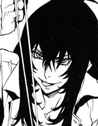

| 戦う司書シリーズ BOOK 10 戦う司書と世界の力 | |
| 山形石雄 | |
| 集英社 (2013) | |

戦う司書と世界の力
BOOK 10
山形石雄
この本は縦書きでレイアウトされています。
また、ご覧になる機種により、表示の差が認められることがあります。
登場人物紹介
ルルタ＝クーザンクーナ

『本』食らいの能力者。全てを所有する魔王。ニーニウの願いをかなえるため、世界を滅ぼそうとする。
ニーニウ
ルルタの恋人。未来管理者オルントーラの力で、滅びのみを願う存在と化している。
コリオ
元は神溺教団の人間爆弾。常笑いの魔女シロンとの出会いによって、人の心を取り戻した。
ラスコール
意志を持つ石剣。人々の物語に続きを与える存在。
ミレポック
武装司書。思考共有の能力者。気まじめな性格の少女。
マットアラスト
武装司書。予知能力と拳銃の使い手。ハミュッツの相棒。
ハミュッツ

バントーラ図書館館長代行。極めて冷酷で好戦的。ルルタに敗れ、死亡したはずだが......。
イラスト／前嶋重機
戦う司書と世界の力
序 章 道具たちの訣別
まずは、とある少女の末路を語ろう。
大した話ではない。使い物にならなくなった道具が捨てられた。それだけの話だ。
たとえその道具が、人間の姿をして、人間の名前と、人間の心を持っていたとしても、壊れた道具は捨てられる。それが、道具として生まれた者の定めなのだ。
「チャコリー、出てきなさい」
ハミュッツ＝メセタは静かな声で呼びかけた。その手には、愛用の投石器が握られている。
「もう逃げ場はないし、勝ち目もないのよ。今のわたしは、あんたが能力を発動する前に、ここからあんたを狙撃できる。わたしは強くなったの。あんたより、遙かにね」
ハミュッツがいるのは、メリオト公国の西部に広がる、大山脈の一角である。東にはメリオト公国の主要都市が点在する平原地帯、西には内戦状態のクラー紛争区が広がっている。
人口密度の極めて低い山岳地帯の、さらに奥深く。そびえたつ山々と、目の痛くなるような明るい空、乾ききった薄い空気だけが、ハミュッツを取り巻いている。
「あんたを殺しに来たの。悪いけど、大人しく死んで、チャコリー」
ハミュッツ＝メセタ、この時二十歳。バントーラ図書館最後の日から、十二年前のことである。
覗き込んでいるのは、山の中腹にある深い洞窟である。その中に触覚糸を放出する。洞窟の最奥に、一人の少女が座っているのが伝わってくる。
「入って、ハミ。話したいことがあるの」
チャコリーが顔を上げるのを触覚糸で感じた。洞窟の奥から、チャコリーの声が響いてきた。
「お願いだよ、聞いてほしい。死ぬ前に、ほんの少しでいいから話したい」
ハミュッツはしばらく考え、中に足を踏み入れた。
チャコリーの敗北を知ったのは、三日前である。伝えて来たのは、ラスコールだった。
四日前、チャコリーはマキアが設計した通り、心魂共有能力でルルタを支配し、心中しようとした。しかし、ルルタはチャコリーを拒み、彼女は崩壊したと聞かされた。
すぐさま、ハミュッツはメリオト公国に飛んだ。すでに、バントーラ図書館館長代行のフォトナと、楽園管理者のカチュアが動き出している。彼らがチャコリーを捕える前に、何としてでもハミュッツの手で殺さなければいけなかった。
触覚糸の能力で、チャコリーを発見するのは容易だった。フォトナとカチュアは、まだ見当違いの所を探している。時間に余裕はあった。
「まさか、あんたが負けるなんてねえ。正直、信じられないわよう」
洞窟は深い。ハミュッツは急がず、ゆっくりと降りていく。
「そうだね。チャコリーも成功すると思ってたよ。ルルタと一緒に死ねると信じてた。でも、しょうがないよ。これが現実なんだもの」
彼女の声は暗い。
「.........そうね。残念だけど、現実よねえ」
話しながらハミュッツは進む。洞窟の最奥は、深い断崖になっていた。縄梯子が下におろされていた。ハミュッツは縄梯子を断ち切ったあと、下へ飛び降りる。チャコリーは、そこにいた。
「！」
その姿を見た瞬間、ハミュッツは息を呑んだ。人違いか、あるいは替え玉か何かではないかとすら思った。ハミュッツの知るチャコリーとは、あまりに変わり果てていた。
かつては、どんな時も余裕ぶっていたチャコリーが、やつれて疲れきっていた。超然とした人間離れした雰囲気は、消えてなくなっていた。全身に悲しみをたたえ、表情には諦めたあとの笑顔が張り付いていた。
だが、ハミュッツを驚かせたのはそのことではない。かつてハミュッツすら魅了した、美しい菫色の髪の毛がなくなっていた。髪の色が、平凡な焦げ茶色に変わっていた。
「.........見ての通りだよ、ハミ。チャコリーは壊れちゃった。残念だけれど、チャコリーは、失敗作だったんだよ」
ランプの明かりを前にして、チャコリーは岩に腰かけている。うつむいたまま目線だけを上げて、ハミュッツに語りかけた。
ハミュッツの胸を、不意に悲しみが襲った。そこにいるのは何も持たない、みじめな敗残者だった。もはやルルタを倒すための道具ではない。そして、ごく普通の少女として生きていくこともできない。殺されるのを待つだけの存在だった。
「驚いたよ、ハミ。ずいぶん、変わったね。そんな顔をしてくれるなんて思ってなかった」
笑いながらチャコリーが言う。その表情が痛ましかった。
「.........チャコリー、話したいことって何？」
投石器を握る手に力をこめた。見ていられない、とハミュッツは思った。一刻も早く、とどめを刺してやりたいと思った。
「ハミ、聞いて。ルルタはね、父ちゃんが思ってたような人じゃなかったよ。ルルタはね」
チャコリーは語ろうとするが、ハミュッツは制止する。
「あんたがどうやって負けたかは、『本』を読んで知るわ。そのほうが正確だものねえ」
「.........そうだね。ハミ、必ず読んでね、チャコリーの『本』を」
「.........他には？」
チャコリーはしばらく考えていた。ハミュッツは辛抱強く待っていた。
「ルルタに負けてから、四日間。チャコリーはいろいろ考えたよ。ご飯も食べず、眠りもしないで考えた。あれぐらいがんばって、何かを考えたことはなかったよ。
ルルタを助けるにはどうすればいいかを」
「.........助ける？」
「そう。チャコリーはね、ルルタを助けたいんだよ。ルルタは深く絶望しているんだ。このままじゃ、耐えきれなくなって壊れちゃうんだ。だから、助けたいんだよ」
答えを返せないハミュッツに、チャコリーは喋り続ける。
「.........こんな風になった今もね。壊されて、何もできなくなっちゃった今でもね。チャコリーは、ルルタのことが好きなんだ」
「.........そうなの。勝手にやって。わたしには関係ない」
「待ってハミ！」
投石器を回しかけたハミュッツに、チャコリーが叫ぶ。
「.........最後まで、聞いて。お願いだから、たった一度だけのお願いだから」
聞きたくないわと、言いかけて止めた。チャコリーがハミュッツにお願いするのは、本当にこれが最初で最後と気づいたからだ。
「ハミ。ルルタを助けるのは、簡単なことなんだよ。誰かが、ルルタのことを思いやってあげればいい。それだけでいいんだ」
「.........思いやる？」
人を思いやる。たしかに大切なことだろう。素晴らしいことだろう。だがそんなのは、子供向けの寓話にでも書いておけばいいことだ。
「それ以外は何もいらないんだよ。能力も強さも、頭のよさも何もいらない。思いやる気持ちさえあればいいの。気持ちさえあれば、ルルタは救われる。
思いやることは、すごい力だよ。ハミの投石器よりも、チャコリーの心魂共有よりも、ルルタの『本』食らいの力よりも、ずっと大きな力だよ。思いやる力がないと、捨てられた子犬も救えない。思いやる力があれば、世界の全てだって救える。
チャコリーは、そういうものだと、わかったんだよ」
ハミュッツは反応しなかった。
「思いやってあげるだけで、何もかも解決するんだよ。思いやれば、ルルタは変わる。人殺しなんてしなくなる。世界を支配して、無理やり幸福の『本』を集めるなんてやめてくれる。神溺教団だって必要なくなる。ハミだって、ルルタと戦わなくてもよくなるんだ。
だからお願い、ルルタを思いやってあげて」
答えは返さなかった。
「お願いだよ、ハミ。ルルタを助けてあげて。ルルタのことを思いやってあげて。それだけでいいんだよ！」
ハミュッツは、首を横に振った。
「ハミ！」
冷たく、無視しているのではなかった。ハミュッツは、何も言えなくなっていた。チャコリーのことが哀れでたまらなかった。
「残念だけどね、チャコリー。ありえないのよ。あれは、化け物よ。最悪の怪物よ。誰かが思いやってあげるだけで、救われるなんて、ありえないの。思いやれば何もかも解決するなんてありえないの。悲しいけど、現実ってそういうものなの」
「ハミ、違うよ、ハミ」
ハミュッツは、目を伏せた。そして、投石器を回した。
「お願い。もう死んで。こんなあんたを見たくない。こんなみじめになったあんたなんか見たくない！」
「ハミ！」
投石器から、一つの小石が、小さな音を立てて飛んだ。
「.........ありえないのよ、チャコリー。思いやるだけで、変わるなんて」
額の中央を砕かれたチャコリーを見下ろし、ハミュッツは呟いた。
これが、道具の末路だ。壊れ、使い物にならなくなっても、ルルタを愛することをやめられない。道具として生まれた者の末路なのだ。もはや何でもない、ただの死体を見下ろしながら、ハミュッツは思った。
「ハミュッツ様、終わりましたか」
その時、背後から声がした。ラスコール＝オセロだ。ずっと背後から、二人のやり取りを見ていたのだろう。
「いかがお思いでございましょうか。いよいよ、これでルルタを殺せる可能性を持つのはあなた一人。
おそらくはあなた様が敗れたあとは、可能性を持つ者すら現れないことでございましょう」
「だから何？」
「世界はルルタ様の手で滅ぶのか、ルルタ様を滅ぼして救われるのか。命運はすべて、あなた様の双肩にかかってございます。
今のお気持ち、聞かせて欲しくございます」
「.........どうもこうも、ないわよ」
ハミュッツは髪の毛をかき上げ、悲しそうに言った。
「わたしも同じ、ただの道具。何も、変わりはしない。そういうことよ」
ハミュッツは、チャコリーの『本』を読み、ルルタの過去を知った。英雄だったころの彼の姿と、ニーニウの存在を見た。しかし、チャコリーが敗北してから、ハミュッツに殺されるまでの、三日間の記憶は読まなかった。
たった一人の妹の、みじめな姿を見たくなかったからだ。
ハミュッツ＝メセタと、ルルタ＝クーザンクーナ。二人が激突する日から、十二年前のことである。
第一章 闇色の猛毒
広大な砂漠の中央に、石造りの劇場がぽつんと一つ。古風で、ひどくささやかな劇場のなかには、人影が二つ。耳の中で、キンと音が鳴るほどに、周囲は静まり返っている。風の音も、鳥の羽音も、虫の足音すら、その劇場の中では聞こえてこない。
一九二七年一月十二日、二度目の世界の終わりの日。
仮想臓腑の中央でコリオ＝トニスは、ルルタ＝クーザンクーナと向き合っていた。
「君は僕を、止められるのか？」
その問いに、コリオは答えを返せなかった。ルルタの、凍てつくような笑顔を前に、ただ沈黙することしかできなかった。
ルルタは言った。世界にはもう誰もいない。自分の他には、もう誰もいないと。
つまり、今世界の命運は、コリオ一人に託されている。世界を救える可能性があるとすれば、それはコリオ以外に成しえない。すでに死んでいるのだ。死ぬことは怖くない。だが、世界の命運を背負ってしまった重圧が、コリオの言葉をせき止めていた。
ある日突然、世界の命運を担う英雄になってしまえば、誰だって恐れ慄くだろう。しかも、世界を救うべきコリオにはなんの力も与えられていないのだ。
「何か、言ったらどうだい？ 沈黙は、何も生まないよ」
ルルタが、口元を緩ませた。目は憂いに沈んだまま、唇だけがかすかに動いた。
「やれやれ、無口なのは、相変わらずなんだな」
返事がないのを見て取ると、ルルタは小さく肩をすくめた。その一動作にすら、コリオは恐怖を感じずにはいられなかった。
コリオは生きていた頃、圧倒的な力を持つ者と向き合ったことが、二回ある。一人目はハミュッツ＝メセタ、もう一人はシガル＝クルケッサだ。だが、彼らとは桁が違い過ぎる。
向き合うだけで実感できる。強さも、絶望の深さも、比較にすらならない。ジワリと、顔に嫌な汗がにじんだ。足が小刻みに震えていた。心臓が高鳴り、息が苦しかった。
「じゃあ、もう一度、聞こうか。次こそは、答えてくれよ。
君は僕を、止められるのか？」
そう言いながら、ルルタが笑った。気が遠くなるような重圧をこらえながら、喚きだしたくなるような恐怖に耐えながら、コリオは答えた。
「止められる」
「.........なぜ？」
聞き返してくるルルタの目を見据えながら、コリオは答える。
「止められるという前提でここにいる。お前を止められないなら、俺にはもう何もない」
そう言うと、ルルタは満足そうに頷いた。
「まったくその通りだ。そう、さすがは君だ。コリオ＝トニス」
何が満足なのか、何が楽しいのかもわからず、コリオはルルタを見続けていた。
（.........まさか、ね。驚いたわ。本当に）
ルルタもコリオも、気がついていない。彼らを見つめる、一つの視線があることに。彼らの他に誰もいないはずの世界に、まだ残っている者がいることに。
元バントーラ図書館館長代行ハミュッツ＝メセタが、仮想臓腑の劇場で睨み合う二人の少年を見つめていた。
（コリオ君、君と、こんなところで会うとはね.........）
数十分前、彼女はルルタに胸を刺し貫かれて息絶えた。体はすでに、一切の生命活動を停止している。いかなる方法を使っても、彼女がよみがえることはない。
しかし今、ハミュッツは、ルルタとコリオを見つめている。
（コリオ君とはいろいろと、話したいこともあるのだけどねえ。残念だけど、ゆっくりお茶でも飲みながら、ともいかないわ）
ハミュッツは、コリオと話すルルタを、じっと観察する。それは、獲物を狙う狩人の目だった。一挙手一投足も見逃さず、必殺の一撃を打ち込む機会を待っていた。
（何しろ、これから、ルルタ＝クーザンクーナを殺さなきゃいけないんだからね）
初めて目の当たりにするルルタの姿は、強大な威圧感に満ちていた。戦い続けてきた彼女だからこそ、その途方もない力も伝わってくる。
しかし、ハミュッツには、負けるつもりなどさらさらなかった。なぜならハミュッツはもともと、ルルタを倒すためだけに生み出されたのだから。
ルルタは気がついていない。針に貫かれたハミュッツの死体に、小さな異変が起きていたことに。変化はごく些細で、言われなければ見つけられないだろう。まして彼は今、仮想臓腑でコリオと向き合っているのだから、気づけと言うのが無理な話だ。
ハミュッツの髪の毛の色が変化していた。光沢も艶も全くない、一切の光を撥ね返さない色になっていた。カラスの羽よりも、黒曜石よりも、月も星もない夜空よりも深い黒だ。黒髪は珍しいものではないから、変化には気づきにくい。しかしよく見れば、これほど深い黒は、自然界には決してありえないものだとわかるだろう。
特殊な髪の色は、特殊な魔法権利を生まれ持った証である。髪の色が変わったのは、その能力が発動したことを表している。
ハミュッツ＝メセタが生まれ持った魔法権利。それは、「『本』食われ」と名付けられている。
透明の髪を持つ『本』食らいの力と、対極をなす能力である。
能力が発動するのは、魔法権利の所有者が死んだ時だ。所有者は魂を瞬時に『本』に変えることができる。そして、任意の『本』食らいの能力者に、強制的に自身の『本』を食わせることができる。ただそれだけの、何の役にも立たない魔法権利である。
この能力が存在することは、数百年前、魔術理論の研究者たちによって、紙とペンを使って証明されていた。だが、存在したところで何の役にも立たない力だ。研究の対象になることも、実際に使用されることもなく、ごく一部の研究者だけが知る無駄な知識となっていた。
現在、確認されている『本』食われの能力者はハミュッツ一人だ。しかし、おそらくは何人もの人間が自らの能力を知らずに一生を終えていたのだろう。
その能力で、ハミュッツは仮想臓腑の中に来た。そして今、ルルタを見ているのだ。
「予想はつくよ」
と、ルルタは言った。なぜか、楽しげな口調だった。
「おそらく、シロンだろう。君の愛する、常笑いの魔女シロン＝ブーヤコーニッシュだ。
シロンは予知能力で、この日のことを察知していた。そして世界の滅亡を阻止する方法を見つけ出し、君にそれを託した。そういうことだろう？
いつ、どんな予知をして、どうやって君に伝えたのかはわからないがね」
コリオは首を横に振る。
「そんな、都合のいい話はない」
「なんだって？」
ルルタは声を上げる。本当に驚いているのだろう。彼がコリオに偽りの表情を見せる理由は何一つない。
目を丸くして、ルルタはコリオを見つめる。
「信じられないな。ずいぶん自信満々でいるから、てっきり何かあると思っていたよ」
「俺が.........自信満々？」
「そうだよ。大したものだ。僕を前にして、君ほど平静を保っていたものは、記憶にない。
僕の前に立つ者は、誰も彼もが恐れ慄き、逃げ出すか、無理に平静を装い、虚勢を張った。多少、怖がってはいるようだが、君は十分に冷静だよ」
これが、多少か。高鳴る心臓を抑えながら、コリオは思った。
「やはり、君は素晴らしい。君だけだ。君だけが僕を止められる。君だけが世界を救える」
なぜ、俺を励ましているんだ？ コリオの疑問は、言葉にはならず、腹の底へ消えていく。ルルタが理解できない。笑顔の裏に何があるのか、かすかな手掛かりすらつかめない。
「.........さて、それでどうする？」
ルルタが尋ねてくる。何か言わなければと、コリオは必死に言葉を探す。
「.........聞きたいことがある」
何でも聞いてくれ、とルルタは頷く。
「なにがしたくて、俺を待っていたんだ？」
コリオは最初に浮かんだ疑問を、そのまま口にした。ルルタは、不意をつかれたような顔を見せた。口元に手を当て、しばらく考えていた。
「不思議なことを聞くんだね。さて.........」
うつむいて、一人呟く。
「考えてみると、わからないな。何がしたかったのか、何もしたくなかったのか.........」
もしかして、訊いてはいけないことを訊いたのか。コリオは慄きながら、答えを待つ。しかしルルタは、はっきりと自分を待っていたと言った。コリオのために邪魔者を消し、世界を滅ぼすのを遅らせていた。理由がないはずがないのだ。
「君に会いたかった。それだけじゃ不満かな？」
ルルタが顔を上げて言った。まるで、長く連絡を絶っていた友人を突然訪ねたような、気やすい口調だった。だが、どうして俺なのだろう。世界中にたくさんいる人々の中で。
「.........どうして、俺なんだ」
ルルタは肩をすくめて、苦笑する。
「君は、答えにくいことばかり訊いてくるね。でも、いいさ。付き合うよ」
座っていたルルタが立ち上がり、近づいてきた。コリオに視線を合わせ、顔を寄せた。コリオは、自分とルルタの身長がほとんど変わらないことを知り、なぜか意外に思った。
「なあ、コリオ。君ならわかるんじゃないか？」
「な.........何が」
ルルタが笑う。
「僕の気持ちが」
ハミュッツは、じっとルルタとコリオを見つめている。息をひそめ、気配を殺している。
（ルルタは.........気づいていないわね。まあ、こんなところでしくじるようなら、お話にならないけどねえ）
ハミュッツはルルタを見ているが、その姿は仮想臓腑の中にはない。姿がない中に、ハミュッツの視覚と聴覚だけがあった。
彼女は、『本』食われの能力を器用に操っている。魂が食われ尽くす寸前のところで、能力の発動を停止しているのだ。そうすれば、仮想臓腑の中に姿が現れず、ルルタはハミュッツの存在に気づくことができない。それをハミュッツは知っていた。
魂が、食われ始めてから、食われ尽くすまでの間。それは一方的に仮想臓腑の内部を観察できる時間なのだ。自分の能力の使い方は当然熟知している。
（.........まだ、隙はないか。姿を現したら、殺られるわねえ）
ハミュッツは待っている。ルルタに、一瞬の隙が生まれる機会を。それがなければ、戦いにすらならず、ハミュッツは殺される。二人の間にはそれだけの戦力差がある。
だが、ハミュッツもまた、一瞬でルルタを倒す方法を持っている。なぜなら彼女は、ルルタを殺すための道具だからだ。
「お前の.........気持ち？」
コリオが、一歩後ずさる。ルルタは追わず、じっと立っている。
「そうだ。君ならわかるはずだ。そして、君にしかわからない」
ルルタは冷たく微笑んでいる。
「愛は人生のごく一部だ。人間には、日々の生活がある。友情があり、家族があり、仕事があり、夢があり、自分自身の欲求がある。愛は全てに勝ると口では言う。一時は本当にそう思う人もいる。だけど、本当に全てに勝るなんてありえない。
別にそれでいいのさ。それが正常なのだから」
急に、不可解な人生訓を語り出したルルタに、コリオは戸惑う。
「だけど二人だけ、例外がいる。僕と、君だ」
「.........それは.........」
「コリオ。考えてみたことはないか？ もしも君が僕の立場だったらどうする？」
言葉に詰まるコリオに、ルルタはたたみかける。
「もしも、シロンを幸せにする方法が、世界を滅ぼす以外になかったら、君はどうする？」
そう言うと、ルルタはコリオから目をそらし、また劇場の舞台の上に腰を下ろした。コリオはルルタの問いかけに対し、必死に答えを探していた。
もしも、自分がルルタの立場だったら。考えたこともなかった。いや、努めて考えないようにしていたのかもしれない。
目を閉じれば、シロンの顔が、瞼の裏に浮かぶ。シガルに立ち向かった一瞬の決意が、シロンの真意を読み取った瞬間の喜びが、思い起こされる。
もしも、シロンを幸せにするために、もっとたくさんの人間を殺す必要があったならば。自分はきっと、殺せただろう。
もしも、シロンを幸せにするために、レーリアやヒョウエや、イア＝ミラまでも殺さなければいけなかったら。自分はきっと、殺せただろう。悩み、苦しみはするが、殺していた。
そして、もしもシロンがニーニウの立場だったら。滅びだけを望む石像と化し、滅ぼす日だけを待ち望む存在になってしまったら。自分は、いったいどうするだろう。
コリオは言葉を返せない。答えは、すでに出ているが、自分自身で認めることができなかった。
きっと、自分も世界を滅ぼすだろう。ルルタと同じように。
世界を憎んでいるわけではない。滅ぼしたいわけがない。しかし、それがシロンの幸せならば、きっと自分は、誰も彼も殺せてしまうだろう。
「そうなんだろう？ コリオ」
おそらく、ルルタにはコリオの出した答えがわかっている。ルルタと同じ結論を出すことがわかっていて、質問したのだ。
「コリオ、自覚はないだろう。君の本性は悪に近い」
「俺が、悪？」
「悪そのものではないが、悪よりもさらに危険かもしれない。悪は世界を滅ぼさない。カチュアも、シガルも、ハミュッツも、世界を滅ぼすことは絶対にありえない。世界を滅ぼせるのは、全てに勝る愛だけだ」
コリオは衝撃を受けていた。今まで、自分の本質について考えたことは一度もなかった。ルルタに指摘されて、コリオは初めて自分自身を発見した。
「君と僕は、同じだ。置かれている立場が違うだけ」
ルルタの言葉に、コリオは納得していた。全てを奪われ、人間爆弾にされた自分。全てを奪われ、英雄に仕立て上げられたルルタ。真逆でありながら、信じられないほどよく似た二人の境遇。
「僕は奇跡を起こせなかった君だ。君は奇跡を起こせた僕だ。
だから、僕は君を待っていた。もう一人の自分に会いたかった。
なぜ君だったのかと、尋ねたね。これが質問の答えだ」
「.........ルルタ。俺は.........」
「僕はね、誰かに僕の気持ちをわかってほしいんだ。僕はこれから世界を滅ぼす。その僕の気持ちを、君なら理解できるはずだ。そして君以外、誰も理解できない」
ルルタはコリオに優しく笑いかける。コリオの額から冷や汗が流れ、目の中に入ってかすかに痛んだ。
混乱と、恐怖と、そのほかさまざまな感情が、コリオの中を駆け巡っていた。自分の気持ちの置きどころがわからず、コリオはただ立ち尽くしていた。
自分は、世界の滅びを止めなければいけない。なのに、自分には世界を滅ぼすルルタの気持ちがわかるのだ。
二人の間を、また沈黙が支配した。
（.........どうなるのかしらねえ、これ）
二人の会話に、ハミュッツは聞き入っていた。聞いているほうが、冷や汗をかいてしまう会話だった。ルルタは生涯の宿敵である。コリオには尊敬と憧れの混じった複雑な感情を抱いている。その二人の会話に、興味がわかないわけがない。
しかし、黙って二人の話を聞いているような場合ではない。今から、ルルタを抹殺しなければいけないのだ。
いくらコリオでも、ルルタを説得できるわけはないだろう。だがルルタは、コリオとの会話に熱中している。このまま話し続ければ、機会が生まれるかもしれない。ルルタの意識の全てがコリオに向けられれば、周囲への注意力が消え失せる。それはほんの一瞬でいい。一瞬でハミュッツはルルタを仕留められる。
一瞬だ。一瞬のために、ハミュッツは造られ、生きてきた。固唾を呑みながら、その一瞬を待ち続ける。彼女の脳裏に、ふと、生きていた時の思い出が浮かんだ。
それは、神溺教団との戦いの最中だった。ハミュッツは武装司書見習いのノロティに、『本』食らいの怪物ザトウを助けることを命令した。そしてノロティはハミュッツの思惑通り、ザトウを乗っ取ったエンリケを神溺教団から引き離すことに成功した。
「それで、エンリケ君。詳しく聞かせて欲しいのよねえ」
図書館敷地内のはずれにある、捕虜収容所にハミュッツはいた。エンリケは牢獄の中にいる。その時のエンリケはまだ武装司書の味方としては認められておらず、牢獄から出すわけにはいかなかったのだ。
「エンリケ君はザトウの体を乗っ取っているわね。でも、その体の持ち主は、いったいどうなっちゃってるのかしら。ザトウ＝ロンドホーンの魂は、死んでいるの？ そうでないの？」
ハミュッツの目的は、エンリケを仲間にすることでも、エンリケと戦うことでもなかった。
『本』食らいの能力について、情報を集めることだった。もちろんそれまでにも、『本』食らいの能力者については調べ上げている。しかし、実際に目の当たりにしたその肉声を聞きたかったのだ。
「たぶん死んだと思います。あたしが思い切りぶん殴って、その後は引っ込んだので.........」
ハミュッツの横でノロティが言う。
「ごめんね、ノロティの意見は聞いてないの。エンリケ君に、はっきりさせてもらいたいのよねえ」
エンリケが口を開く。
「ザトウ＝ロンドホーンの魂は、まだ生きている」
「.........え？」
ノロティが言う。
「ザトウ＝ロンドホーンの魂は、仮想臓腑の中にまだある。カヤスと、ルイモン＝マハトンという男に拘束されていて、外に出てこれないだけだ」
「そうなんですか。ザトウは死んだわけではなかったんですか」
ハミュッツは、何気ない尋問を装いながら、話の核心部分を訊く。
「じゃあ、エンリケ君。ザトウの魂を殺したらどうなるのかしら？」
エンリケはしばらく考えて、言った。
「.........間違いなく、俺も死ぬ。この体は、持ち主のいない、単なる死体に変わるはずだ」
「なぜ？」
「仮想臓腑を維持する能力を保持しているのは、ザトウだからだ。ザトウが死ねば仮想臓腑も消え失せ、仮想臓腑の中にいる俺も死ぬ。だから、俺が生き続けるためには、ザトウの魂も生きていなければならない」
「.........なるほどね」
ハミュッツは要点をまとめる。
「つまり、こういうことね。
仮想臓腑の中で、『本』食らいの能力者の魂を殺せば、仮想臓腑にある魂すべてが消滅する。『本』食らいの能力者を殺すためには、仮想臓腑の中の魂を殺すだけでいい。
これに間違いはないのね？ エンリケ君」
そこまで言うと、牢獄の中のエンリケと、隣のノロティが首をかしげた。
「どうしたんですか、代行？」
二人の顔を交互に見ながら、ハミュッツは冷や汗をかく。
「あら？ どうかしたの君たち？」
「.........なぜ、そうまで『本』食らいの能力にこだわるんだ？」
少しあからさま過ぎたかと、ハミュッツは反省する。この二人はルルタの存在も、ハミュッツがルルタを狙っていることも知らないのだから、重大な秘密漏洩にはならないだろうが。
「まあ、気になっただけよ。なんだかんだで、ザトウは強敵だったしねえ」
怪訝な表情を浮かべる二人を無視して、ハミュッツは話を打ち切った。
ハミュッツには、一つの懸念があった。
ルルタを倒したあと、彼の体と力を、誰かが乗っ取ってしまう可能性がある。それでは単に、世界の支配者の首がすげ替わるだけで何の意味もない。だが、エンリケの話を聞く限りでは、理論上それはありえないという。
彼の言葉は、信じてもいいだろう。
成すべきことは、仮想臓腑の中で、ルルタを倒すこと。それだけでいいというわけだ。
「俺は.........」
コリオは、必死に言葉を紡ぐ。お前を理解できる、と言いかける自分を理性で抑え込む。自分はルルタを理解してやるために来たのではない。止めに来たのだ。理解できると言ってしまえば、自分はルルタを止められない。
「俺はお前とは違う。たとえシロンが望んでも、世界を滅ぼしたりはしない」
そう言った瞬間、空気が一変した。失望と、凍てつくような殺意が、周囲に立ちこめた。身動き一つしていないのに、表情すら変えていないのに、空気を凍らせる。それがルルタなのだと、コリオは理解した。
「.........なんだ」
今までルルタは、本当に自分を歓待していた。しかし、ここからは違う。さっきまでとは比べ物にならない、恐怖と重圧に耐えなければいけない。耐えなければ世界を救えない。
「君も僕とは違うのか」
ルルタはさびしそうに言う。
「.........見込みが外れたのかな。まあ、僕の人を見る目はあてにならないからね」
ルルタから伝わってくるのは、無関心だった。今までは、ルルタは自分と表裏一体の存在としてコリオを見ていた。だが、そうでないとわかれば、コリオなど虫けらと変わりない。
何か言わなければ。ルルタの関心をつなぎとめる言葉を。
「ルルタ、よく考えてくれ」
「何を？ 僕は限りなく考え続けたのだよ」
冷たくルルタが言う。コリオは声を張り上げる。
「世界を滅ぼしたって、ニーニウは幸せにならないだろう！」
ルルタが顔を上げた。コリオを睨みつけた。それだけで、心臓が止まりかけた。一切の救いのない破滅とは、こういうものかと思わせるような目だった。
「.........なんだって？」
「幸せになんか、ならない。世界を滅ぼしたって、ニーニウは幸せになんかならないんだ！」
返答はなかった。ただ、血も凍るような視線を、コリオに向けるだけだった。それでも、思う通りに動かない口で必死に語り続ける。
「ルルタ。お前は本当に、彼女のことを考えているのか。
世界を滅ぼすということは、お前も、ニーニウも死ぬということなんだろう。お前は、自分の愛する人を死なせようとしているんだぞ。そんなことが、滅ぼすことが、幸せなはずがないだろう」
「黙れ」
コリオの足もとで、小さな爆発が起きた。ルルタの怒りが無意識に炸裂したのだろう。コリオは尻もちをつく。
「君は馬鹿か。僕の記憶を、読んだのだろう。ニーニウのこともわかっているのだろう。世迷いごとを僕に聞かせるな」
「しかし」
コリオの制止など、ルルタは耳も貸さない。
「ニーニウは滅びを望んでいる。滅びだけを望んでいる。彼女のたった一つの願いをかなえてやることが、どうして幸せではないなどと思う。
滅びだけが幸せだ。滅ぼすことだけが、彼女を幸せにできる方法なんだ」
「お前はずっと、別の方法を探していたんだろう」
「過ぎたことだ。あの方法では、ニーニウは幸せにならないとわかった。武装司書も、神溺教団も、もうどうでもいい」
「だ、だけど！」
叫び、そして言葉を詰まらせる。上手く伝えられない自分を、上手く喋れない自分を、これほど無様だと思ったことはない。
「だけど、なんだ」
「そんなのが、幸せなのか？ 誰も彼も滅ぼして、自分も消えて、何も残らない。それが、望みだとしても.........そんなものは幸せなんかじゃない」
必死に絞り出した言葉だった。しかしルルタの心に届いていないのが、痛いほどわかった。ルルタは、またうつむいた。
「.........君ごときに、何がわかる。人の幸せの、何がわかる」
「ルルタ.........」
「.........君に僕の、何がわかる」
うなだれ、ルルタは力なく呟いた。その瞬間、コリオは、恐怖とは別の胸の痛みを覚えた。
息を殺して潜むハミュッツは、言葉を発することはできない。だから心の中で、コリオを応援していた。
（いいわ、その調子よ、コリオ君）
もっと、喋ってほしい。ルルタの心を揺さぶってほしい。そうすれば必ず機会は生まれる。
不十分と判断して見送ったが、うなだれた瞬間には、わずかに隙が見えたのだ。
ハミュッツはルルタを睨みつける。ほんの少しでいい。コリオ君、隙を作って。作らなければ、わたしは戦えない。今は全てが、君にかかっている。
ハミュッツに見守られながら、コリオが口を開く。
「ニーニウは.........生まれてこなければよかったと思っている」
うなだれるルルタに、コリオは語りかける。
「何もかも無価値だと、信じている。未来も過去も現在も、全てのものに絶望している」
コリオは聞こえていないのかと、喋りながら思った。ルルタの反応が、何も返ってこない。正面に立つコリオには、うつむく彼の表情が見えない。
「今世界を滅ぼしたら、彼女はそんな思いのままで、死んでいくことになる。でも、そんなの悲しすぎる。そんなの幸せじゃないだろう。
生まれてきてよかった、生きてきてよかった、出会えてよかった。そう思えるのが幸せだろう。違うのか、ルルタ」
反応がないことが、逆に恐怖である。自分は説得に成功しているのか、失敗しているのか、全くわからない。
だが、コリオの言葉は間違いなくルルタに届いている。そして、語っている言葉は本心からのものだ。必ず、ルルタはわかってくれる。そう信じてコリオは喋り続ける。
「お前にも、わかっているんじゃないのか。滅ぼしたって幸せになんかならないと。それがわかっているから、武装司書や神溺教団に幸せの『本』を集めさせたんじゃないのか」
ルルタの返答はない。
「まだ、引き返せる。世界の人々を目覚めさせて、何もかも元通りにするんだ。また幸せの『本』を集めて、ニーニウにあげるんだ。ニーニウを幸せにする方法を探すんだ。
ルルタ、それが一番なんだ」
コリオは言葉を止めた。言うべきことは、言いきったはずだと思った。ルルタの答えを、固唾をのんで待った。
「コリオ」
ルルタが顔を上げた。コリオを見て笑いかけた。その笑顔に一瞬安堵しかけた。しかし、次の瞬間に、背筋が凍りつく。ルルタの指先がコリオの胸を指し示した。
「満足したか？ ごたくは、それで終わりか？」
ルルタの指先から、火花が散った。放とうとしているのは雷撃だろう。
「自分に腹が立つよ。なぜ君なんかに会いたいと思ったのだろうな」
「.........ルルタ」
後ずさりをするコリオ。だが、逃げる方法などあるわけがない。恐怖の中で、コリオは失敗したことを確信する。これから世界は滅ぶのだ。
「馬鹿なのか？ どうしようもなく馬鹿なのか？ 世界を滅ぼしさえすれば、ニーニウは幸せになる。当然のことがなぜわからない」
一歩下がろうとして失敗した。コリオは尻もちをつく。
「残念だよ。わかり合えると思ったのに」
指先から、雷が放たれかける。
だがその瞬間。
「！」
ハミュッツ＝メセタが、突如として、二人の間に割り込んだ。
ハミュッツ＝メセタは、マキア＝デキシアートの手によって作り出された道具である。機能はただ一つ。ルルタを殺すこと、それだけである。
だが、いったいどうすればルルタを殺せるのだろう。ルルタの力は人間が到達できる究極の領域にある。刃でも、炎でも、砲弾でも、爆撃でも、時間ですらルルタは殺せない。
唯一殺せる可能性があるのは、仮想臓腑の中だけだ。しかし、そこでもルルタの力は絶対である。ハミュッツも、すぐれた力を持つ戦士ではある。だが彼女の投石器ですら、ルルタの前では児戯に等しい。
力でルルタは殺せない。ルルタを殺すために必要なのは、驚天動地の発想だ。
凡人には気づくこともできない策。思いついたところで、実現の可能性はゼロに等しい策。誰かに話せば、愚策を通り越して狂気の沙汰と呼ばれるような策が要る。
そうでなければ、ルルタ＝クーザンクーナは殺せない。
それはほんの一瞬のことだった。
ハミュッツが仮想臓腑に姿を現し、ルルタが眼前のハミュッツを認識した。二人の距離は五メートルに満たなかった。ルルタが異常事態を認識した瞬間には、ハミュッツはルルタに向かって飛びかかっていた。
いける、とハミュッツは確信する。ルルタはコリオを指差したまま、動きを止めていた。ハミュッツが現れた驚愕、コリオが揺さぶった心の迷い。隙が生まれるには十分すぎた。
一歩でハミュッツは、ルルタに詰め寄る。
「何がっ」
何が起きた。ルルタの言葉は、最後まで言い切れずに消えた。そのときすでに、ハミュッツはルルタに接触を果たしていた。その腕がルルタの両肩に組みついていた。
ルルタは世界最高の戦士である。危機を察知すれば、体は意志とは関係なく動く。
もしもここでハミュッツが投石器を振るっていれば、ルルタは対応していただろう。拳を固めるか、蹴りを繰り出そうとするか、攻撃の姿勢を見せていたら、反射的にルルタは迎撃していただろう。しかし、ハミュッツはただ、ルルタを掴んだだけだった。その動きは決して、攻撃ではなかった。攻撃ではないから、反応できない。
座っていたルルタを、ハミュッツは体で押し倒した。
そしてハミュッツは強引に、ルルタの唇にキスをした。
「なんだ、これ」
コリオには、そう呟くことしかできなかった。何が起きたのか、彼の目では視認すらできなかった。コリオは、ルルタの説得に失敗した。世界の滅亡とコリオの死は、避けられないものになった。だが次の瞬間、突然人影が現れ、ルルタに飛びかかった。そしてルルタに抱きつき、唇を重ねていた。理解できるはずがない。
抱きついている人影が、ハミュッツであることを認識する。コリオの混乱にさらに拍車がかかる。
「.........ハミュッツ、なのか？」
返事はなかった。かすかに聞こえたのは、ハミュッツが舌を、ルルタの唇に絡ませる音だった。ルルタも驚愕のあまり、硬直している。その場にいる誰もが動きを止めていた。
三秒ほどで、二人が動き出した。押し倒されていたルルタがハミュッツの腹を突く。ハミュッツは五メートルほど吹き飛び、舞台の上に着地する。
「ハミュッツ.........メセタ、なぜ、ここに.........」
手で口元を押さえながら、ルルタが言う。
「.........ふふ、やわらかいのねえ、あんたの唇」
そう言いながら、ハミュッツが手の甲で口を拭う。口紅が頬に流れて、赤い糸をひいた。
「なぜここに、いったい、何をした？」
ルルタが言う。ハミュッツは不気味な笑みを浮かべるだけだ。コリオは何もできない。ただ二人を見つめている。
「答えろ！ 一体何をした!?」
「わからないものかしらねえ。何をしに来たかぐらいは」
「なん、だと」
異変は、突然起きた。ルルタが、体内で何かが爆発したように、大きく痙攣した。
「が！」
ルルタが喉元を掴んだ。胃液を吐くような声が漏れた。苦しそうな咳を何度もした。体が、激しく震えだした。コリオは助けようと手を差し伸べかけて、思いとどまる。
「なん、だ、こ、れは.........」
ルルタが膝をつき、嘔吐しようとする。しかし唾液が数滴飛び散るだけで、腹からは何も出てこない。
「あんたを、殺しに来たに決まってるでしょう」
ハミュッツは、満面の笑みを浮かべていた。歓喜に、体までもが震えていた。
「ハミュッツ、なのか？ ど、どういうことなんだ！」
コリオが大声をあげる。ハミュッツが振り向き、おぞましい笑みを見せる。
「よくやったわ、コリオ君。完璧だったわよ」
うろたえるコリオを、ルルタが睨みつける。
「ルルタに何をしたんだ？ ハミュッツ」
「聞いたでしょう？ それに、見てわからないかなあ？」
ハミュッツがルルタを殺しに来た。そして、それが見事に成功した。それはコリオにもわかっている。だが、キスをしたのはどういうことだ。
「簡単なことよう。歴史上、何度も繰り返されてきたこと。
暴君の最後なんてのは、たいてい決まりきっているものじゃない？」
「どういう、ことだ？」
「配下に裏切られ、毒殺される。愚かな暴君の、お決まりの末路よう」
毒殺。その言葉が理解できない。ルルタが、死ぬ。現実感を持てない。あれほど強大な存在が死ぬことなんてありえるのか。そう思ったとき、倒れていたルルタが顔を上げた。
「.........マキア＝デキシアートか.........」
ハミュッツを睨みつけて言う。
「ご名答」
ハミュッツが余裕を見せつけながら答える。ルルタの視線が、コリオに向けられる。
「.........そういう、ことか、コリオ.........」
ルルタはコリオを睨んでいる。
「すっかり.........だまされたぞ、そういう、ことだったのか！」
ルルタが、ゆっくりと立ち上がる。コリオにも少しずつ、状況が理解できてきた。自分はハミュッツに利用されたのだ。ルルタの目から見れば、コリオはルルタを油断させに来たようにしか見えないだろう。
「貴様ら、殺す！」
叫ぶルルタ。同時に、ハミュッツがコリオのベルトを掴んだ。体が持ち上げられ、軽々と投擲される。悲鳴とともに、コリオの体が宙に舞う。
「邪魔！」
ハミュッツが叫ぶのが聞こえた。劇場の外へと放り投げられたコリオは、砂に叩きつけられ、転がっていった。
邪魔者を放りだしたハミュッツが、腰の投石器を抜いた。瞬時に放たれる礫弾を、ルルタは防壁を張ってなんとか防いだ。
「さあ、ここからが本番よう」
ルルタはもう、コリオのことなど考えていない。敵は眼前のハミュッツ。そして、注ぎ込まれた毒だ。
マシンガンのように放たれる礫弾を、ルルタは防壁で弾き返す。普段ならば、瞬時に殺せる相手だ。だが今は身を守るるので精一杯だった。
毒。未経験の攻撃だった。
仕掛けられたことは何度もある。ルルタを殺そうとしてきた者たちが、何千種類もの毒を、ルルタに使ってきた。だがルルタは、いかなる毒も無効化する魔法権利を所持している。既知のものであろうが未知のものであろうが関係なく、ルルタに毒は通用しないはずだった。
なのに、ハミュッツの毒は効いている。なぜか魔法権利が全く作用しないのだ。
礫弾を防ぎながら、必死に現状を分析する。症状は吐き気、痙攣と、体中に奇怪な生物が侵入したような異物感だ。
「ぐう！」
「まずは一発！」
防壁が不完全だった。礫弾の一つが、ルルタの耳をかすめた。いつ以来になるのかわからない肉体の痛みに、ルルタが顔をしかめる。
「さあてどんどんいくわよう！」
ハミュッツが、喜悦の表情を浮かべている。このルルタを前にして、あの表情。屈辱にルルタは歯ぎしりをする。
「間抜けなものねえ、ルルタァ！ 全く気づいてなかったの？」
ルルタの雷撃は、軽々とハミュッツにかわされた。劇場の中を駆け回りながら、ハミュッツは礫弾を放ち続けている。
「十年以上もあんたのそばにいたのにねえ！」
不覚だった。五十年前に、自身の殺害を依頼したマキア＝デキシアート。もはや忘れかけていた名前だった。
かつて、チャコリー＝ココットを撥ねのけたことで、彼との戦いは終わったものだと思っていた。彼の「遺産」はもう一人いたのだ。しかも、ルルタのすぐそばに。
針の魔法権利を発動させた。先ほどハミュッツを殺した力だ。しかしそれも避けられた。狙いがうまく定まらない。
「ならば！」
もう一度針を放つ。今度は、全身をくまなく刺し貫くつもりだった。
しかし、
「.........あ......ぐ、ああ！」
毒がルルタの行動を阻んだ。全身が、どくりと波打ったかのようだった。狙いは外れ、ハミュッツは劇場の外へ逃げている。針は、巻き上がった砂塵だけを貫いていた。
苦痛というよりは、強烈な異物感だった。体の奥底に、何か恐ろしいものが侵入していた。咳とも嘔吐ともつかないものが腹の底からこみ上げてくる。だが、吐き出せば済むような生易しいものではないことも、ルルタにはわかっている。
礫弾は劇場の外から飛んでくる。ルルタは自分と石像のニーニウの周囲に防壁を張る。そして、宙に浮きあがった。
「まずは、落ち着こう」
自分に言い聞かせるように、ルルタは言う。足もとには砂漠を走りながら礫弾を放つハミュッツがいる。
礫弾など、取るに足りない。問題になるのは毒だけだ。
体は動く。意識もはっきりしているし、魔法も使える。瞬時にルルタの命を奪うような、即効性の毒ではないようだ。喉はうずき、心臓は異常な鼓動を刻んでいる。しかし、死が近づいているような感触はない。
それに、なおも投石器で攻撃するということは、ハミュッツは毒の力だけでは、ルルタを殺せないということだ。それなら、対処の方法はある。
ルルタには、今まで食った数万の『本』の力がある。それらの魔法権利を結集させれば、必ず解毒の方法も見つかる。毒の正体を見極めればいいだけだ。
「.........ふ」
ルルタは笑った。こういうときは笑ったほうがいい。笑えば余裕ができる。心の余裕を失えば、それこそハミュッツの思うつぼだ。
ルルタが笑ったのを見て、ハミュッツが不安そうな表情を浮かべる。
「とりあえず、いったん外に出るか」
ルルタは、空の向こうにある「外」の光景を見つめた。とりあえず仮想臓腑の外に出れば、ハミュッツの攻撃は受けなくて済む。毒の正体がわからないのは不安だが、それは中にいても同じことだ。
天に向かって飛ぶ。空を超えれば外の世界だ。しかし、見えない力でルルタは阻まれた。力で押し戻されるというよりも、外に近づくにつれて、力が失せていくような感覚だ。
ルルタはハミュッツを見下ろす。その表情が、逃がさない、と語っていた。ハミュッツが仮想臓腑の中にいる限り、出入りはできないのだろう。そういう能力も所持しているようだ。
「どう？ 驚いた？」
ハミュッツが余裕を見せつける。しかし、この程度は想定内だ。あのマキアが送り込んだ刺客が、そうやすやすと逃がすはずがない。
「.........ねえねえ、どうしたの？ 急に大人しくなっちゃって。おいでなさいな」
安い挑発だ。乗る必要はない。
「無視してていいのう？ このまま殺しちゃうわよう」
ルルタは気にせず、毒の正体を考え続ける。そのとき、少しずつ苦しさが薄れていっていることに気がついた。吐き気はまだあるが、嘔吐するほどのものでもない。全身の異物感も次第に消えていっている。次第に体に馴染んできているという感じだった。
「.........この程度か？」
少しばかり特殊な毒で、解毒が遅れただけのことなのか。だとしたら、拍子抜けだ。マキア＝デキシアート。ハミュッツ＝メセタ。その程度の相手だったのか。
どうやってこの仮想臓腑の中にやってきたのかは疑問だが、それも些細なことだ。
「いいのう、ルルタ。殺しちゃっても」
足もとのハミュッツがちっぽけに見える。無視して殺そうかと思った時、彼女が言った。
「命令するわ。防壁を解きなさい」
そう言いながら礫弾を放った。まさか解くわけがない。礫弾は空しく、弾かれて消えていくだけだ。
そのはずだった。
「があ！」
ルルタの横腹に激痛が走った。礫弾が肋骨の下に食い込んでいた。防壁がいつの間にか消えていた。
「まだまだいくわよう、かわしちゃだめよ。その場にいなさいな」
ハミュッツのさらなる投石が、四方八方からルルタを襲う。
身を翻して回避しようとした。しかし、体が動かなかった。礫弾は一つ残らず、ルルタを直撃する。背中から、腹から、脇腹から血が噴き出す。
「なぜだ!?」
この程度の攻撃を、避けられないはずがない。なのに、ルルタは練習用の的のように攻撃を受けていた。拘束されているわけでもないのに、全く動けなかった。
「なんだ、当たるんじゃない。びっくりしちゃったわあ。おすまししてるから、失敗したかと思ったわよう」
超回復の能力で、傷は瞬時に回復していく。痛みよりも、驚きのほうが大きかった。
ハミュッツの連続攻撃が体に食い込んでいく。肉が裂け、血が飛び散る。
上へと飛び、礫弾の射程から逃れようとする。ようやく体が動いた。
「うあ！」
だが、さらにありえない事態が起こる。上空へと飛んだルルタは、次の瞬間、自ら下降してしまった。
避けられないどころではない。今、自分から攻撃を受けに行った。
これが毒の効果なのか。殺すための毒ではない。だがいったい何の毒を盛られたのだろう。防御ができなくなる毒なのか。命令に逆らえなくなる毒か。そんなものは聞いたこともない。
「おのれぇ！」
ハミュッツに向けて火球を放った。それは、狙いを遠く外れたところに着弾した。次いで、絶対零度に近い氷の霧をまき散らした。しかし、ハミュッツに届く前に消えていく。今度は、周囲全てを切り裂く、不可視の斬撃を放とうとした。しかしハミュッツを細切れにするはずの、シュラムッフェンすら遙かに超える力は、発動すらしなかった。
「わからない、これは、これは.........」
ルルタは初めて恐怖を感じた。攻撃ができない。防御ができない。わけがわからない。礫弾が雨あられと降り注ぐ。ルルタは無様に体を丸め、両手で頭を覆った。結界も、迎撃能力も、何も発動しない。礫弾は全て、ルルタを直撃する。
「さあ、どうかしらルルタ？」
投石器を回しながら、ハミュッツが叫ぶ。
「そろそろ、―――ってきたんじゃない？」
礫弾が頭をかすめた衝撃で、途中の言葉が聞こえなかった。
「なん、だと」
ルルタが聞き返す。ハミュッツが聞こえるようにさらに大声で叫ぶ。
「そろそろ、気持ち良くなってきたんじゃない？」
「.........何、が！」
「殺されるのが、よう！」
ルルタは気がついた。さっきから妙な違和感を覚えていたことに。攻撃はただ、痛いだけではなかった。痛みの他に、今まで感じたことのない不可解な陶酔感があった。
「ほうら！」
礫弾が膝を直撃する。骨にひびが入る感触がする。痛みとともに、別の感覚が走った。
「次は、背中よ！」
背中を礫弾が貫く。衝撃が全身を貫く。だが、なぜだかそれが苦痛ではない。
「これはどうかしらあ？」
頭から血が噴き出る。それがルルタには、心地良かった。
そう、攻撃を受けるたびに、悦楽を覚えるのだ。性交にも似た、しかもそれを遙かに超える、異常な快感がルルタを襲うのだ。
ルルタは気がついた。先ほどから、攻撃を食らうたびに、娼婦のようなあえぎ声をあげていることに。
「ほうら、気持ちいいでしょう？ 最高の気分でしょうルルタァ！」
これが、毒の効果なのだ。ハミュッツが注ぎ込んだのは、苦痛を、快感に変える毒なのだ。ありえない。だが、ありえないものがここにある。今、ルルタの体をむしばんでいる。
さらなる攻撃がルルタを襲う。ルルタはこらえきれずに声を漏らした。悲鳴ではない、もっと甘ったるい、奇怪な声だった。
「あっははは！ いい声じゃない！ 我慢しなくていいのよう！ ほおら、もっとあえぎなさい！」
一度、決壊した堤防は、元には戻らない。声を上げてしまうのをこらえきれない。
「.........馬鹿な、こんな、馬鹿な、能力が」
甘い悲鳴交じりに、ルルタが呟く。
礫弾が体に食い込んでくる。途方もない快感だった。快感だから、避けられない。快感だから、避けたくない。一撃食らうたびに、次の礫弾が欲しくなる。もっと強烈な、致命的な攻撃が欲しくなる。
ルルタが絶叫した。
「こんな、馬鹿な、力があるかぁ！」
返答は、ハミュッツの高笑いだけだった。ルルタはその向こうに、マキア＝デキシアートの笑い声を聞いていた。
数分間、ルルタはハミュッツの攻撃に耐え続けていた。甘い陶酔に意識を遠のかせながらも、必死に毒の正体を探っていた。
『本』食らいの力は、魂の全てを自分のものにする。ハミュッツの記憶も、すでに仮想臓腑の中にある。礫弾を振るうハミュッツから、小さな光点が放たれた。それがルルタに吸い込まれていく。ハミュッツの人生の欠片を、ルルタは読み取る。
「魂の融合だ」
そう言ったのは、老人だった。もう六十を超えているだろう、白髪のくたびれた老人だった。
ルルタは気がついた。これは、マキア＝デキシアートだ。
場所は、薄暗い魔法研究施設の一室だった。そこにマキアともう一人の人物がいる。
「.........魂の、融合？」
もう一人の人物が応える。幼い少女だ。その少女の視点で、ルルタはマキアを見ていた。少女は、幼き日のハミュッツだ。
「それは、なに？」
戸惑いの色を浮かべながら、ハミュッツが言う。その声は気弱そうで、とても小さかった。
「わかりやすく言えば、自分の魂を、他の人の魂に混ぜ合わせる能力だ。自分の魂の一部を、他の人に与える力ともいえる。それが、これから君に覚えてもらう力だ」
「うん」
マキアは、笑顔を浮かべて語り続ける。
「私たちは、過ぎ去りし石剣ヨルの構造を解明することができた。そして、ラスコール＝オセロが司書天使と融合したときの魔術を再現することができたのだ。老ラスコールと同じ力を、君に覚えてもらうことになる」
「それを使うと、どうなるの？」
マキアが続ける。
「魂が融合するということは、同一人物になるということだ。もちろん、君がルルタに与えるのは、魂の一部だから、完全に同一人物になるわけではないがね。
たとえば、だ。君は裁縫が大好きだね。君の裁縫を楽しむ魂を、ルルタと融合させたとする。
そうすれば、ルルタも裁縫が大好きになる。君はセロリが嫌いだったね。セロリを嫌う魂をルルタと融合させれば、ルルタもセロリが嫌いになる」
「それだけ、なの？」
「それだけさ。君は、持って生まれた『本』食われの力で、ルルタの仮想臓腑へ行く。次に、すでに譲渡した仮想臓腑の出入り口をふさぐ力で、ルルタを拘束する。
最後に、君はルルタにキスをする。そして、魂の一部をルルタと融合させる。
それが、君にやってもらうことなんだ」
「.........わからないよ、お父さん。それで、ルルタを倒せるの？」
マキアは、冷笑のような、憐れむような、奇妙な笑みを浮かべて言った。
「そう、それで、倒せるんだ」
「なぜ、だ？」
ルルタが呟く。魂の融合というからくりは理解できた。ハミュッツがなぜ、仮想臓腑に現れたか。なぜルルタにキスをしたのかはわかった。
だが、なぜそれで自分を倒せるのだ。魂の融合？ 裁縫が好きになる？ セロリが嫌いになる？ そんなレベルのことで、こんな異常な状況に陥るのか？
ルルタの身に、礫弾は今も雨あられと降り注いでいる。その一撃を受けるたびに、ルルタは快楽の声をあげる。これは戦闘ではない。凌辱だ。
「ねえ？ まだわかんないの？ 血の巡りが悪いのねえ」
ハミュッツが、呆れ果てたとでも言うように笑う。怒りがこみあげ、殺意に震える。それでも、体が動かない。
マキアは一体、ハミュッツに何をさせようとしたのだ。自分は自ら殺されようとしている。そう仕向けられている。どうすればそんなことができるのだ。
そのとき、閃きがやってきた。
「あら。やっと気がついた？」
攻撃を受けることを喜んでいる自分。魂の融合。ハミュッツ＝メセタ。ルルタの頭で、ばらばらの欠片が一つにまとまっていく。
自分は、ハミュッツと融合した。あの人格破綻者、ハミュッツ＝メセタと融合した。
武装司書と神溺教団の戦いが始まる十年も前。ハミュッツはすでに、カチュアが反乱を企てていることを知っていた。だが彼女は、それをあえて誰にも語らなかった。
ルルタは、地の底でハミュッツの言葉を聞き、真意を読み取っていた。
目的は二つあった。神溺教団がハミュッツを殺すこと。そして、ハミュッツの裏切りが何者かに暴かれて、武装司書がハミュッツを殺すことだ。ルルタは奇妙に思った。それはハミュッツにとって、何の利益にもならない裏切りだった。
十年後の、神溺教団との戦いの中で、ハミュッツは常に自分を死地に放り込んだ。
シガルとの戦い。あの時、逃げながらマットアラストの救援を待ち、二人がかりで戦えば、容易にシガルを倒せていたはずだ。しかしハミュッツは、一対一での戦いを選択した。
怪物ザトウの事件。彼女は間違いなく、エンリケが、敵に回ることを期待していた。エンリケがザトウ以上の強敵であることを確信して。
モッカニアとの戦い。ヴォルケンの反乱。そして、最終決戦、蒼淵呪病の大乱。
ハミュッツは、好戦的だったのではない。戦いの中で、死のうとしていた。そうとしか、思えなかった。そのハミュッツと、ルルタは融合した。
ルルタは全てを理解した。マキアの狙い。ハミュッツが植え付けた毒の正体。ルルタは理解すると同時に驚愕した。理解してもなお、ありえないと思った。
ハミュッツがルルタに与えたのは殺されたいという欲求だ。攻撃され、蹂躙され、殺害されることを快楽とする、異常な願望だ。被殺願望とでも、名付けるべきだろうか。
ハミュッツは、『本』食われの力で、仮想臓腑にやってくる。魂の融合で、ルルタに被殺願望の毒を注ぎこむ。そして、被殺願望にとらわれたルルタを殺す。それが、マキアの考えたルルタの抹殺手段なのだ。
「ありえ、ない」
呻かずにはいられない。殺されたいから防御できない。敗れたいから攻撃できない。敗れたいと思っている人間は、どんな力を持っていようとも、必ず負けるに決まっている。
敗れたいと思わせることができれば、どんな強敵でも倒せるに決まっている。
なんという着想だ。相手を殺すのではなく、相手に殺されたいと願わせる。
こんな攻撃が存在するはずがない。存在するはずがない攻撃を、防ぐ手段があるはずがない。
ルルタは、マキアを見誤っていた。ルルタは最悪の、そして最善の相手に、自分の殺害を依頼してしまったのだ。
ふいに、ハミュッツが攻撃を止めた。そして話しかけてきた。ルルタが、マキアの仕掛けたからくりに気づいたことを、理解しているようだった。
「ねえ、常識で考えてさ、存在すると思う？ わたしみたいな人間が」
ハミュッツが笑う。
「だってさあ、異常じゃない、わたしって。殺されるのが望みで、敗れるのが楽しい。こんな異常な人間が、いるはずないじゃない」
ルルタはハミュッツを理解していなかった。異常であることは知っていたが、生死の境のスリルを楽しむ戦闘狂か、被虐に悦楽を覚える倒錯者程度の存在と思っていた。だが、ハミュッツはその領域にはいなかった。
勝利よりも敗北を願い、愛よりも殺意を喜び、生よりも死を求める。快楽中枢の構造が、完全に逆転した人格だ。殺されることそのものを、人生の目的にするなど、ありえない。生物学のレベルでありえない。
「いるわけないのよ。わたしみたいな人間が、ありえるはずがない」
なぜ、こんな人間が存在しているのか。ルルタは予想はついていたが、訊かずにはいられなかった。
「マキアは.........」
ほんのわずかだが、恐怖すら覚えていた。
「マキアはお前に、何をした.........」
「決まってるじゃない」
ハミュッツは、自分の頭を指差した。
「マキアはね！ 改造したのよ！ わたしの頭と、わたしの魂をね！
殺されるのが快楽で、敗北が望み！ そんな異常な人間に造り変えたのよ！
全ては、あんたを殺すためだけに！」
指先を、自分の頭からルルタへ向ける。
「.........あんたも、思い出せるんじゃない？ わたしの記憶を」
憎悪と、悲しみを笑顔の中にこめ、ハミュッツが答える。
「読み取ってみなさいな。わたしの魂が、改造された日のことを。殺されることを、傷つけられることを、快楽と感じる化け物に、造り変えられた日のことを！」
ハミュッツの記憶が、ルルタにもたらされる。ルルタはその日の出来事を追体験する。
それは、ハミュッツ＝メセタ十二歳の春だった。
もうすぐ彼女は、外の世界に連れて行ってもらえるはずだった。動物園というところに、デパートメントというところに、シネマシアターというところに、学校というところに、連れて行ってもらえるはずだった。全てが終われば、自由になれるはずだった。そう約束していたからハミュッツは、マキアの言うことに一度も逆らわずに暮らしていたのだ。
「.........があ、あぎいいぃ！」
ハミュッツは、鉄製の椅子に拘束されていた。手首、足首、膝と肘、下腹部と胸を革のベルトで縛りあげられていた。四肢の末端は鬱血し、石榴のように変色していた。
首と頭は、鉄製の金具でさらに念入りに固定されていた。
「まだ、快楽反応はありません。続行しますか？」
と、ハミュッツの隣にいる男が言った。焼けた鉄の針を、ハミュッツの爪の中に押し込んだのだ。その悲鳴を聞いて、別の男が言う。
「必要ない。再施術だ」
マキアはハミュッツに言った。君の魂を改造し、被殺願望を植え付けると。意味はわからなかったがハミュッツは頷いた。マキアが自分に悪いことをするはずがないと信じていた。
「魔法権利、発動。心魂外科施術、第二段階を実行する」
身動きは取れないが、意識はあった。周囲の人間がやっていることもわかった。ハミュッツの前にある、手術台の上に何があるのかも見えた。
頭蓋骨の一部だった。まぶたの上から水平に切断された半球だ。
ハミュッツは、ただただ、恐ろしかった。あんなものが、あそこにあるということは、自分は今、頭蓋骨を割られて、脳を露出させられているのだ。
こんなことをされて、生きていられるわけがない。脳に見たこともない魔具が差し込まれている。なのに自分はまだ生きている。
「うーん。チャコリーもされたから覚えてるけど、外から見ると気持ち悪いねえ」
離れた所に立つチャコリーが言う。ハミュッツが、こんなにされてる様を、笑いながら見ている。
「魔法権利、正常に施行されました。ハミュッツの生存の意志を消失させ、被殺願望へ転化します」
取り囲む魔術師たちが、恐ろしい文言を唱え続ける。
恐ろしかった。意識を失いたかった。狂ってしまいたかった。この狂った状況では、狂うしかないのだ。
「駄目だよハミ。世話焼けるなあ。心魂共有。ハミが狂うことを否定するよ」
しかし、チャコリーが、ハミュッツが正気を失うことすら阻む。
頭蓋骨の切断面から、血が流れ落ちて目に入った。視界は赤く染まった。涙と血が混ざりあい、口に流れて塩と鉄の味がした。恐怖のあまりに、さるぐつわを噛みしめる歯がへし折れていた。大小便が垂れ流しで、臭いにむせかえりそうだった。
誰かの魔法が、ハミュッツの魂を根底から揺さぶって、破壊した。目玉がぐるんと回転し、瞼の裏が見えた。
「残念だなあ、ハミは、優しいお姉ちゃんだったのに。今日でお別れだね」
ハミュッツにも、感覚的に理解できた。今、自分は自分ではなくなっていく。脳をいじくられ、魔法をかけられるたびに、自分が死んでいく。自分が、見知らぬ自分に変わっていく。何よりそれが恐怖だった。
「明日になったらハミは、単なる化け物だ」
「チャコリー、よせ！」
「だって、そうじゃない？ 殺されることが快楽なんて、おかしいよ。化け物だ。
まあ、化け物でもいいんだけどね。ハミは、道具なんだから」
かくして、ハミュッツ＝メセタは生み出された。ルルタに被殺願望を植え付けるためだけに存在する、おぞましい生きた道具は誕生した。
そしてその道具は今、本懐を遂げようとしている。
「.........人間じゃ.........ない」
そんな言葉が自然に口を衝いて出た。それは常に、ルルタに向き合う者が言う側で、ルルタは言われる側の言葉だったのだが。
「そうよう。人間じゃないわ、道具よう」
マキアに、自分を殺せと言ったのはルルタだ。マキアに、全力を尽くすべきだと言ったのもルルタだ。だが、ここまでやれとは言っていない。ここまでやるとは、思ってもみなかった。
「よかったわねえ、ルルタ。あんたはやっと死ねるのよう。あんたの、望み通りじゃない」
「違う！ あれは、気の迷いだ！ 一度だけの過ちだ！ こんなところで、死んでたまるか！」
ルルタは叫ぶ。ハミュッツは笑う。
「だめよ、あんたは死ぬの。こんなところでね」
ルルタにはわかっていた。自分には、魂の融合を撥ね返す方法はない。
どれほど怒りに震えても、ルルタの体は死を求めてしまうのだ。
ハミュッツ＝メセタ。一八九五年生まれ。出身は、イスモ共和国である。
両親の名も、自分の本当の名も、彼女は知らない。生まれてから、十分もたたないうちに、、マキアに誘拐されたからだ。もしもマキアがいなければ、どんな人生を送っていたのか。彼女は想像することもできない。
誘拐された理由はただ一つ。彼女が生まれ持ってしまった、『本』食われの能力のせいだ。マキアは予知能力と、魔術研究のデータをもとに、『本』食われの能力者を見つけ出した。この能力を、ハミュッツは生涯、憎み続けた。
砂漠の中に隠された研究施設の中で、ハミュッツは育った。生活には何一つ不便はなかった。自由だけを除いて、ハミュッツは全てを与えられた。
マキアが本当の父親ではないことも、さらわれてきた子供であることも知っていた。しかし、マキアを憎みはしなかった。彼は、十分に優しかったからだ。ハミュッツも、たった一人の庇護者を憎めるほどの勇気は持っていなかった。
その頃のハミュッツは、大人しく、臆病な少女だった。心根は優しく、善良だった。大人たちには常に従順だった。一人きりの妹チャコリーも、不気味には思いつつもかわいがっていた。
裁縫、特に刺繍が一番の趣味で、他に読書とジグソーパズルが好きだった。
ルルタ＝クーザンクーナを殺すために、自分は育てられている。その事実を知った時も、マキアを憎みはしなかった。それは必要なことなのだろうと思い、自分自身を納得させた。その時は、魂の改造のことも、被殺願望のことも、聞かされてはいなかったのだが。
彼女は、八歳の時に魔術審議を始めた。
マキアにも予想外のことだったが、彼女は生来、類まれなる魔法の才能を持っていた。マキアにとっては幸運だったが、彼女にとっては幸運だったのだろうか、不運だったのだろうか。
予定では十代の終わりまでかかるはずだった魔法権利を、ハミュッツは十二歳の時に終えた。そして運命の時、魂の改造施術の日を迎えることになる。
殺されることを最上の快楽とする人間を作り出す。そもそも無理があることなのだ。彼女に正気を保たせるために、マキアとその配下の者たちは血のにじむような苦労を重ねた。ハミュッツは、狂わないでいるためだけに、地獄のような日々を送った。
何度も殺してくれと叫んだ。願いをかなえてくれる人はいなかった。自殺もしようとした。だが、まだ道具として完成していないうちに死なせてはくれなかった。ルルタを殺すためだけの道具。そんな自分自身に耐えられなかった。眼に映る人全てを、罵倒し、暴力を振るった。
精神の安定を得たのが、施術から二年後だ。二年間で、優しく善良だったハミュッツは、永遠に失われた。新たなるハミュッツを、ハミュッツ自身は化け物と呼び、チャコリーは道具と呼び、マキアはチャコリーの予備と呼んだ。そのどれもが、真実だったのだろう。
ハミュッツ＝メセタを一人の人間と見なす者は、誰もいなかった。
ハミュッツは全てを憎んだ。
マキアを、マキアの配下たちを、チャコリーを、ルルタを、そして自分自身の運命を憎んだ。殺されるために生き、ルルタと相討ちになるためだけに存在する。そんな自分と、自分を生み出した者たち、全てをひたすらに憎んだ。
憎むために生き、憎むために正気を保った。正気を保たなければ殺せない。ハミュッツは殺されるために生まれ、殺すために生きた。
十四歳の頃、マキアとその配下たちを全滅させ、ハミュッツは自由になった。チャコリーとは今生の別れを告げ、永遠に会わないことを誓った。
全てに別れを告げたあと、彼女は途方に暮れた。これから、何を目的に生きていけばいいのだろう。
マキアに巨額の金を渡されていたので、とりあえず生活には困らなかった。ハミュッツはしばし、流浪の日々を送った。
ハミュッツはルルタを憎んでいた。殺したいと願っていた。最後に残された、復讐の相手である。
ルルタを殺すために必要なのは、ハミュッツ自身が殺されることである。ハミュッツの被殺願望は、殺されることで初めて完成する。殺される瞬間の歓喜と快楽を、ルルタと融合させなければいけないのだ。
歓喜と快楽に満ちた死。ルルタへの復讐のため、それを求めた。
だが同時に、マキアへの憎しみがあった。
ハミュッツが無駄死にする。それは、マキアの全人生を否定することだ。それこそ、すでに死んだマキアに与えられる、最高の復讐である。
そして、そもそもの発端は、ルルタがマキアに自分の抹殺を依頼したことだ。ルルタを殺さないことは、ルルタへの復讐にもなる。
このまま、平凡なただの少女として生きること。それもまた、一つの復讐である。
生きることも復讐ならば、死ぬことも復讐だ。一つの目的と、二つの手段。ハミュッツは悩んだ末に、生き続けることを、復讐の手段に選んだ。
ハミュッツはとある街の仕立て屋で、お針子として働き始めた。それがマキアへの復讐だった。このまま、何事もなく、平凡に生き続けてやろうと、ハミュッツは思っていた。別れ際にチャコリーが予言したのは、このことである。
だが、平凡な生活を続ける中で、改造された心が、殺されることを望む魂が、彼女を苛んだ。何事も起こらない日常には耐えられなかった。敵意が、殺意が、絶望が欲しくて体が疼いた。そんな折、ハミュッツは下宿を抜け出し、一人、暗黒街へ赴いた。
わずかな金のために人を殺せる愚物。快楽のために、人を殺す異常者。そんな連中に会いたくて、ハミュッツは一人、街を歩いた。
だが、彼女は殺されず、生き続ける。
「.........あんたじゃ、駄目だわ」
ハミュッツは言った。暗い路地裏の路上に、男が転がっている。その近くには、大ぶりのナイフが落ちていた。
「あんたは、弱過ぎる。あんたなんかに殺されるんじゃ.........自殺と変わらないものねえ」
男は、左脚を折られ、右手を砕かれ、喉を潰されていた。腹はハミュッツに踏みつけられ、身動き一つ取れなかった。彼はハミュッツをいたぶって殺した後、金を奪おうとしていた。金が目的なのか、殺人が目的なのか、ハミュッツにとってはどうでもいい。
「わたしを殺す意思がない。薄っぺらな欲望があるだけで、全てを懸けてわたしを殺そうとしていない。わたしを絶望させる、暴力がない。無力な女の子しか殺せない、ただの弱者。
そんな奴に殺されて、気持ち良くなれるわけがない」
ハミュッツは男を見下ろしながら言う。
「それに、だめなのよ。殺されちゃあ、復讐にならない。殺されちゃ、あいつが喜んでしまう」
ハミュッツの心の中には、さまざまな矛盾した感情が渦巻いていた。
マキアに植え付けられた、殺意と敗北を求める心がある。
それと対立する感情に、マキアへの復讐心がある。あの男の思うままに、死んでたまるかという気持ちがある。
さらにそれとは別に、彼女はより素晴らしい死を求めていた。
純粋な殺意が欲しかった。圧倒的な暴力が欲しかった。完全な絶望が欲しかった。絶望と、殺意と、暴力の果てにこそ、ハミュッツの望む満ち足りた死があった。
「ねえ、わかる？ わたしの気持ち」
「.........ひう.........ひう.........」
ハミュッツを殺そうとした殺人鬼が、必死に首を縦に動かす。命乞いの方法が、それしか残されていなかった。
「わかるわけないでしょ馬鹿」
ハミュッツの靴が、男の喉笛を踏み砕く。
「わたしにだって、自分が、何したいんだかわかんないのに」
死にたいという意思、生きたいという意思、それらが同時に存在している。彼女は常に、矛盾と不合理に満ちている。
ハミュッツは次第に、理解していった。自分は絶対に、他の人と同じようには生きられないということに。
友達らしきものを、得たことはある。同じ仕立て屋で働くお針子たち、街に住む同年代の女の子たちだ。だが、表面上は仲良くできても、最後はいつも、疎外の対象だった。彼女たちが悪いわけではない。ハミュッツが異質であることを、肌で感じとってしまうのだろう。
彼女たちが話すことに、どうしてもついていけなかった。友人関係にも、お洒落にも、ゴシップにも、ハミュッツには興味が持てない。マキアへの復讐、ルルタへの復讐、そして殺されたいという願望が、いつもハミュッツの心を満たしていた。
ハミュッツと、ハミュッツ以外の者の間には、いつも薄い膜が張っている。すぐそばにいても、絶対に越えられない断絶があった。
孤独がハミュッツの胸を満たすたびに、彼女は殺されることを求めて闇の中をさまよう。
殺人鬼が、犯罪者が、ハミュッツを狙うたびに、孤独が癒えるのをハミュッツは感じた。彼らは、ハミュッツを殺そうとしている。彼らだけが、ハミュッツの望むことをしてくれる。彼らだけが、殺されたいという思いに応えてくれる。
殺意を向けられるたびに、ハミュッツの心は浮き立つのだ。
彼らを返り討ちにし、ハミュッツは帰路につく。その時、ふと、闇の中に明かりが浮かび、漏れてくる談笑が耳に入る。恋人、夫婦、家族や友人。そうした者たちの間で交わされる声が聞こえてくるたびにハミュッツは耳をふさぎ、その場を離れた。
自分は誰かを愛することも、愛されることもできない。殺意を求めるのは、戦いを求めるのは、愛を得られない代償に過ぎなかった。
ごく普通の人間に、ハミュッツは憧れた。眼に映る誰も彼もに、ハミュッツは憧れた。どれだけ上手に普通の人間を装っても、憧れに手は届かない。
またハミュッツは、チャコリーにも憧れた。悩むことも、普通の人間に憧れることもなく、ただ道具として生きている。チャコリーのようになれれば、きっと楽にはなれるのだろう。
だが、ハミュッツはハミュッツだ。他の誰かにはなれない。道具にも普通の人間にもなれないまま、彼女は迷い、生き続ける。
一年を過ぎるころ、暗黒街に出没する殺人鬼の噂が人々の口にのぼり始める。ハミュッツが殺した人間たちの『本』も、そろそろ掘り出されているはずだ。バントーラ図書館から保安官に連絡がいくのも時間の問題だ。また、旅立つことを余儀なくされた。
あてどなく、目的もわからないまま、ハミュッツは世界をさすらう。各地の街で、お針子として働き、居場所がなくなるとまた旅立つ。何度か繰り返すうちに、彼女は十七歳になっていた。
ある日、彼女の足はバントーラ過去神島に向いた。とある港町で、館下街の仕立て屋に働き口があることを知り、飛空艇に乗り込んだ。
なぜ過去神島に向かったのかは、ハミュッツ自身もうまく説明できない。お針子の仕事を探していたのは事実だったし、たまたま見つかった求人がそれ一件だけだったのも確かだ。
だが、あえて過去神島に向かったのは、期待があったからかもしれない。至強の戦闘集団武装司書、頑強にして篤実なるフォトナ、暴虐の淑女イレイア、天才児マットアラスト。世の中のたいていのことに興味がないハミュッツの耳にすら、彼らの話は伝わっている。ハミュッツの被殺願望が求める、圧倒的な暴力がそこにはある。
彼らに戦いを挑み、殺されればきっと楽になれる。そのあとは、ルルタと戦うだけだ。負けて死ぬか、相討ちになって死ぬか、どちらになるだろうか。どちらでも構わない。どうせ自分はチャコリーの予備だ。
ルルタと戦うか、生き続けるか、迷いながらハミュッツは、また平凡な日々を送る。
やがて、彼女は疲れてくる。復讐と憎しみは、人間を疲弊させるものだ。それはハミュッツにおいても例外ではなかった。何のために、迷っているのだろう。結局は、誰かに殺されるだけの人生なのに。しょせんはチャコリーの予備にすぎない自分なのに。
街中で、イレイアやフォトナの姿を見かけるたびに、死の誘惑が彼女を惑わせる。そんな中、同僚たちに誘われた酒場で、ハミュッツはマットアラストに出会った。
わたしは、この男に殺されて死ぬのね、とハミュッツは直感した。強くて格好いいのは好ましいが、もう少し頭の良さそうな人が良かったなと、マットアラストを見て思った。
他愛のない会話で、マットアラストの注意を引く。そして、襲いかかった。
この日の出会いが、彼女の運命を、さらに奇妙な方向に流転させる。
「.........こんなところに連れてきて、何するつもりなのよう」
と、ハミュッツは言った。館下街にある、高級アパートの一室だった。マットアラストは隠れ家のような住処を、いくつか持っていると言った。
「言っただろ。君を俺のものにする」
ハミュッツは目を細める。この時、マットアラストは自分を殺すつもりなのだと思っていた。そうでないことは、ハミュッツ以外の誰にでもすぐにわかることなのだが。
「そうだけど、ここでやらなきゃいけないこと？」
「.........大胆なのか？ それとも、想像以上に何もわかってないのか？」
マットアラストが軽くハミュッツの肩をつくと、よろけてソファに崩れ落ちる。
「そうじゃないな。君は本当に死にたがってるらしい。そのくせ、自殺願望があるわけでもない。なんなんだ？ 君は」
「.........殺して『本』にすればわかるわよ」
「それでわかったとして、何が面白い？ 俺は何も面白くない」
そう言うと、マットアラストはハミュッツの隣に座る。
「なんだこれは、と思わせるものが芸術である。誰の台詞だったかな。でも俺は、芸術よりも恋愛に使われるべき言葉だと思う。
なんだこの娘は、と思わせる人が、最高の女だ。どう思う？ ハミュッツ」
「頭から終わりまで意味がわかんない」
マットアラストは笑みを浮かべる。
「わかりやすく言おう。君に惚れた」
「それも全然わからない」
「じゃあ、もっとわかりやすくしよう」
そう言って、マットアラストはハミュッツに唇を重ねた。
「.........これならわかる？」
わかるよ、という反応をマットアラストは想定していたらしい。あるいは、わからないと顔をそむける反応を期待していたらしい。だがハミュッツは、目を丸くして、首を横に振った。
「.........わからない」
ハミュッツはその時、驚くほど無知だった。恋愛というものを、経験以前に知識として知らなかった。男女の性差をわかっていなかった。唇を重ねるという行為は、魂の融合に使うものだと思っていた。
マットアラストは立ち上がった。そして、頭を抱えて部屋の中を歩き回る。
「.........了解した。考えよう。どうすれば君にわかってもらえるのかを」
「何をわかればいいの？」
「.........俺はもう、それすらわからないよ」
この夜、最終的にマットアラストは、ハミュッツを口説き落とすことに成功した。女の子を口説くために、性教育の授業が必要になるとは思わなかった、と後に語った。
一晩かけて繰り広げられた珍問答を、二人は度々思い返しては話題にした。そのたびに、ハミュッツは顔を真っ赤にし、マットアラストは大笑いするのだ。
マキア＝デキシアートは、ハミュッツが恋愛をするなどとは、予想したはずがない。マキアの配下も、チャコリーも、考えることもしなかった。マットアラスト＝バロリーという男は、彼らの想定を超えて馬鹿だった。そうでなければ、手を出そうとは考えないし、出しても途中で放棄していただろう。
途中経過はどうあれハミュッツは、この日マットアラストに恋をした。殺意だけを求めて生きるはずだった彼女を、道具として生まれてきた彼女を、道具として生きるしかないと諦めていた彼女を、ねじ伏せ、覆して、手に入れたのだ。
稀代の傑物という他ないだろう。
ハミュッツはマットアラストに誘われて、バントーラ図書館に足を踏み入れた。予期した以上に、ハミュッツは長い時間をそこで過ごすことになる。もともと武装司書になる気は全くなかったのに、よく務まったものだと彼女自身、思っている。まして、館長代行の地位まで上りつめるなど、考えたこともなかった。
だが、バントーラ図書館で過ごした日々は、彼女に何をもたらしたのだろう。
マットアラストとの恋愛は、最終的には破綻した。ハミュッツは自分の正体を明かすわけにはいかず、マットアラストはそれを不満に思いつづけた。正体を明かせないということは、根本的な信頼関係を築けていないということ。埋められない断絶は、二人の心を引き離していく。
どれほど愛しても、どれほど愛したいと思っても、ハミュッツにはやはり、殺されるほうが魅力的なのだ。幸せな結婚生活よりも、殺されて死ぬことを、ハミュッツは求めてしまうのだ。
二人は三度別れ、二度復縁した。結局、離れることも、結ばれることもできない、中途半端な関係のまま落ち着いた。
普通の恋愛など、土台無理なことだったのだ。
武装司書の使命を胸に、人生を仕事に注ぎ込む。そんな道もあったのかもしれない。
だがハミュッツは、始めからバントーラ図書館の真実を知っていた。彼女にとって、そこは欺瞞と虚飾に満ちた場所でしかない。『本』を守ることが使命と聞かされたところで、忠誠心など湧くはずもない。
共に働き、戦う仲間のために生きる。それも、彼女には不可能だった。
戦いを日常とし、生死の境を見据えて生きる武装司書たち。彼らは、他の人間よりはハミュッツに近い。しかし、死そのものを願うハミュッツと、死の覚悟を固めた彼らは、結局のところ、わかりあえない関係なのだ。ハミュッツは、バントーラ図書館の中ですら、異物でしかなかった。越えられない薄膜は、相変わらずハミュッツと周囲の間に常にあった。
本心から、彼らを仲間と思えたことは、一度もなかった。
見習いから正規の武装司書に昇格する時には、盛大な式典が開かれる。そのとき、館長代行が必ず新たな仲間たちに心構えを説く。ハミュッツはフォトナに聞かされ、ハミュッツ自身もたくさんの部下たちに説いてきた。その中の一文を、ハミュッツは思い出す。
「武装司書の名を預かるその日から、我々は永遠に切れない絆で結ばれる。我々の魂は、今日この日から一つになる。
どこで生き、どこで死のうと、我らの魂は、未来永劫一つである！」
お笑い種だと、ハミュッツは思う。語っている本人が、そんなことを一度も信じたことがない。バントーラ図書館が与えてくれたのは、孤独だけだった。
結局は、何も変わらなかった。お針子として生きていた時と変わらないまま、彼女は孤独であり続けた。
また、死闘と絶望の果ての死も、武装司書の日々は与えてくれなかった。
ハミュッツは強くなり過ぎた。触覚糸の力を手に入れ、投石と肉体強化の魔術を磨き、世界最強と呼ばれるようにまでなった。もっと弱ければ、殺されることもできただろうに。
神溺教団との死闘は、確かに何度もハミュッツを追い詰めた。だが、追い詰めただけだった。
死ぬことが望みなら、神溺教団に寝返り、武装司書と戦ったほうがよほどよかった。武装司書の実力は、ハミュッツ自身が一番理解している。ユキゾナ、ボンボ、イレイアを含め、戦力の半分以上を温存した状況でも、神溺教団を圧倒していたのだ。初めから全戦力を投入していれば、蒼淵呪病の大乱を待たずに勝利していただろうことを確信している。
ハミュッツが裏切ってもなお、武装司書有利は変わらなかったはずだ。ユキゾナは、ハミュッツより遙かに優れた指揮官になっただろう。マットアラスト、イレイア、ボンボ、ユーリと、補佐役にも恵まれていた。
そして、神溺教団との戦い以外は、死を予感したことすらない、退屈な時間だった。
人間としての生も、道具としての死も、武装司書は与えなかった。
ならば、ハミュッツの十数年間は、無意味だったのだろうか。
そうではないと、ハミュッツは思っている。
フォトナ＝バードギャモンは言った。マットアラストに敗れる少し前だった。
「お前は、極めて異常な人間だ。それはわかりきっている。それを踏まえても、この座を譲るに、最もふさわしい人間だと信じている。誰よりも強いからではない。異常ではあっても、お前は良い武装司書だ。上手くは言えないが.........皆を頼む」
フォトナはハミュッツを信じ、全てを託した。こんな自分を、彼は信じたのだ。
イレイア＝キティは言った。ハミュッツは見習いの時に彼女に挑んだことがあった。イレイアは敗れたハミュッツの頭を掴んで持ち上げ、顔を近づけて言った。
「殺されたい？ 冗談じゃないわハミュッツさん。土下座して、殺してくださいと頼みこむのが筋でしょう？ それでも殺してはあげないけれどね。
命令よ。生きなさい。生きて戦い続けなさい。逆らうことは許さない。この偉大なるイレイア＝キティの命令に、逆らうことは許さないわ」
イレイアはハミュッツが、唯一、畏怖した人物だった。圧倒的な気迫に押され、逆らうことができなかったのは、彼女だけだ。
ビザク＝ジーグラスは言った。ハミュッツが代行に就任した直後だった。
「あの小娘が、とうとう館長代行か。世も末の末だな。
仕方ない。お前が一人前に育つまで、現役を続けることにしようかの。早くワシを引退させろよハミュッツ＝メセタ」
いつも口うるさい、厄介な先達だった。だが、いつまでも引退しない彼の存在がハミュッツには有り難かった。
ヴォルケン＝マクマーニは言った。彼がまだ少年の頃だ。
「ハミュッツ姉さん。俺は必ず、あなたを超える人物になります。その時まで、俺の越えるべき壁でいてください。俺はあなたから、代行の座を引き継ぎます」
互いの裏切りによって、その言葉は実現しなかった。だが、まだ声変わりも終わっていないのに、一人前の顔をするヴォルケンを、可愛らしく思った。
ミンス＝チェザインは言った。盗賊だった彼を捕らえ、武装司書に引き抜いた日のことだった。
「あんたはイカれとるわ。あんたほどイカれた女は他におらんわい。
なるほどな、だから、一応常識人のワシが必要なのか。このミンス＝チェザインを、ブレーキ役に使おういうんか。
.........あんたみたいなのを野放しにしたら、何しでかすかわからんわ」
ミンスとは常に、敵対していたとすらいえる関係だった。だが心根の優しい彼は、いつもブレーキ役を果たしてくれた。何度衝突しようとも、最も頼れる部下だった。
ユーリ＝ハムローは言った。ユキゾナが、次代の代行として確定した時期だった。
「代行。兄は残念ながら、代行のことを快く思っていないご様子です。ですが、あまり兄を怒らないでいただけませんか。あの人は多少、気まじめ過ぎるだけなのです。
兄はまだまだ、代行から学ばなければいけません。あの人にはもう少し、悪人になっていただかなければいけませんから」
少しまじめ過ぎる兄と、少し腹黒過ぎる妹。傍から見ていても面白い二人だった。そして良い後継者が育つのは、組織の長として一番の楽しみだった。
ミレポック＝ファインデルは言った。トアット鉱山で瀕死の重傷を負ったあとのことだった。
「代行！ いい加減にしてください！ どうして勝手に死のうとするんですか！ 代行が死んだらどうなると思っているんですか！ みんなのことも、少しは考えてください！
.........こんな時にふざけないでください！ 別に、泣いてたわけじゃありません！」
死にたいと思っているハミュッツに、死なないでくださいと激怒する。その様子が切なかった。こんないい子を振り回していることに、時に罪悪感すら覚えた。
ノロティ＝マルチェは言った。彼女がエンリケを救出した直後のことだ。
「代行、ありがとうございました。代行のおかげで、エンリケさんを助けられました。
.........いろいろあるみたいですが、本当にありがとうございました」
ノロティのことは利用しただけだった。彼女も、利用されただけだとわかっていた。それでも彼女は、素直にハミュッツに感謝した。その善良さと優しさは、ハミュッツをも驚かせた。
そして、マットアラスト＝バロリーは、さまざまなことを言った。
ある時は恋人として、ある時は元恋人として。ある時は先輩と後輩、ある時は上官と部下、ある時は世界の秘密を守る共犯者として、彼はハミュッツに数えきれない言葉を送った。
思い返すには多すぎる、さまざまな思い出を、彼と二人で作ってきた。
自分は良い仲間だっただろうか。良い上官だっただろうかと、ハミュッツは考える。
到底そうは思えない。自分が死んだあと、みな、せいせいしたと笑いあうだろう。ハミュッツは私欲のため、殺されたいという欲望のために、さまざまな悪事を働いた。
ハミュッツとハミュッツ以外を隔てる薄膜が、取り払われることはなかった。
だがそれでも、彼らはハミュッツを仲間と呼んだ。ルルタを殺す道具に過ぎないハミュッツを、人間として、仲間として扱った。
彼らとなら、心を結びあう仲間になれるかもしれない。そんな夢を見させてくれた。
歪んでいても、狂っていても、壊れていても。
矛盾と不合理に満ちてはいても。
ハミュッツは、ハミュッツなりに、武装司書を愛していた。
彼らのためなら、ルルタを殺す道具でもいい。そう思えるほどに愛していた。
ルルタは逃げ、ハミュッツは追う。酒に酔った蝶のように宙を飛ぶルルタに向けて、全速力で走りながら礫弾を放つ。
避けると思えば受け、そこにとどまっているかと思えば逃げる。甘き死の悦楽に冒されたルルタには、行動の一貫性がない。負けたいという思いと、負けたくないという思いが同居していて、ちぐはぐな行動をとり続けている。
敵の側から見たら、わたしもこんなだったかなと、ハミュッツは思った。
「.........あう、うあ！ .........お！ おのれ！ ハミュッツ！」
礫弾は何度も、致命的な個所を破壊している。心臓をえぐり、頭を撃ち抜き、首の骨をへし折った。しかし圧倒的な防御力と、超回復の力に阻まれて、殺しきるには至らない。
だがそれで十分だ。ダメージを与え続けていれば、いつか必ずルルタは沈む。ハミュッツの力は通用している。磨き上げた投石器の威力は、ルルタを殺すに十分なのだ。
ハミュッツは歓喜に震える。ルルタに勝てる。自分の人生には、自分の存在には、武装司書として過ごした日々には意味があった。
礫弾の一つがルルタの側頭部を直撃する。バランスを失ったルルタは、錐もみになって砂に叩きつけられる。それを見越して跳躍していたハミュッツは、頭上から礫弾を連射する。
悦楽のあえぎとともに、砂煙が舞い上がる。それとともに、撒き散らされる鮮血と、千切れ飛ぶ肉片。その中には、もげた手足すら混ざっていた。それらは瞬時に干からびて、仮想臓腑の砂漠の一部に変わっていく。ハミュッツは触覚糸で、砂煙の中を探る。惨殺死体にしか見えないルルタが、そこにいる。
「ま.........だだ、死ねるか、こんな、こんなところで！」
さすがはルルタだ。これでもまだ殺しきれない。その生命力をあざ笑うかのように、ハミュッツはルルタの胸の上に着地する。骨が折れ、肉を切り裂く音が響き渡る。
「いいえ、死ぬのよ。ここで」
情け容赦なく叩き込まれる靴底が、念入りにルルタを破壊していく。一目見ただけで嘔吐するような肉片へと変えてやる。ハミュッツはそう思い、踏みつける。
「死ねない.........ニーニウの、ニーニウのために！」
巻き起こる爆発は、ルルタの必死の抵抗だ。ハミュッツは退き、ルルタは体を回復させながら逃げていく。戦いは、いや、一方的な虐殺は、まだ始まったばかりなのだ。
その頃、コリオ＝トニスは砂漠の中を必死に走っていた。背後からは、二人が戦っている音が響いてくる。世界最強の男と、それに次ぐ戦士の戦いだ。巻き込まれれば命はない。コリオはひたすら、逃げるしかなかった。
背中に痛みが走る。ハミュッツに放り投げられたときに、背中を強打したのだ。叩きつけられた場所が砂丘の下り坂で、上手く砂の上を転がったので、動けなくなることはなかった。
しばらく逃げたあと、コリオはへたり込んで息を吐いた。ここまで来れば、大丈夫だろう。
後ろを振り向くと、劇場が見える。随分走ったと思ったが、大した距離ではなかった。
空中に人影がかすかに見える。鳥のように空を舞うのがルルタで、跳躍しているのがハミュッツだろう。
「.........」
コリオは、先ほどまでのことを思い返した。ルルタと話したこと、ハミュッツが現れたこと、そして、放り投げられるまでの間のこと。
ハミュッツはマキアが生み出したルルタ抹殺の刺客だったのだ。どうやって仮想臓腑に来たのか、どうやってルルタを殺すつもりなのかはわからないが。
どちらが勝つのだろうか。コリオの見る限り、ハミュッツの勝利はゆるぎないものに思えた。ハミュッツは勝ち誇り、ルルタは悶え苦しんでいた。
ルルタが死ぬ。それに何も問題はない。世界の滅びは回避され、人々を苦しめる者もいなくなる。彼は死んで当然のことをしたのだ。
「.........そうだ、死ね。死んでしまえルルタ」
コリオは呟く。だがその脳裏に、ルルタと語り合った言葉が浮かんだ。
（君に会いたかった。それだけじゃ不満かな？）
（君と僕は、同じだ。置かれている立場が違うだけ）
（僕の気持ちをわかってほしいんだ。君なら理解できるはずだ。君にしか理解できない）
自分自身の感情に混乱していた。ルルタは死ぬべきだ。ハミュッツは勝たなければいけない。疑いようのないことだ。
なのに、死んでいくルルタのことを思うと、ひどく辛い。
出会った時は恐怖しか感じなかった。最後は殺されかけた。なのに、コリオはもう一度ルルタに会いたいと思っていた。
「.........くそ！」
わからない。この胸が、こんなにも痛むのはなぜなんだ。
遠くから聞こえてくる戦闘音を聞きながら、コリオは一人頭を抱えていた。
第二章 非道なる魔王への報い
何度、ルルタを殺したと確信しただろう。ハミュッツはもはや数えることをやめていた。心臓を貫いた、頭を砕いた。それでも、ルルタはなお立ち上がってきた。超回復の能力も間に合わなくなってきている。全身は血にまみれている。甘き死の悦楽で、意識すら失いかけている。しかし、それでもルルタは沈まない。
戦いが始まってから、一時間が過ぎていた。
「うおお！」
へし折れた人差し指が、ハミュッツを指す。エンリケのそれを遙かに超える雷撃が放たれる。ハミュッツは動じない。雷撃は空しく、砂ぼこりを巻き上げる。
「なぜだ、なぜ当たらない！」
ルルタも反撃を試みてはいる。当たらない攻撃を繰り返す様は、実に滑稽だ。ルルタの姿を、ハミュッツは嘲り笑う。
被殺願望は、もはや完全にルルタの心を支配している。どれほど勝ちたいと思っても、死ぬわけにはいかないと思っても、無意識に敗北を求めてしまうのだ。
ハミュッツが死んでしまえば、ルルタを殺せるものは誰もいなくなる。だからルルタは絶対にハミュッツを殺せない。被殺願望の持ち主であるハミュッツにはわかる。誰も自分を殺してくれない絶望が、どれほど恐ろしいものか。
「当たるわけがないでしょう？ ルルタァ」
「.........ぐ」
「あんた自身が当てないようにしてんだもんねえ！」
礫弾を食らいながら、ルルタが右手の手首を左手で掴んだ。全ての魔力をそこに結集させていくのがハミュッツにもわかる。
「おおおおぉ！」
同時にいくつもの力を発動させている。右手の周囲に嵐を生み出し、嵐の中に白い灼熱を造り、さらに真空の斬撃をも纏わせていた。とてつもない力が、ルルタの右手に宿っている。
「ハミュッツ！ これで終わりだ！」
腕を振りかざす。灼熱と斬撃の嵐は、ハミュッツの周囲百メートルを包み込んだ。防げる人間がいるはずがない。ハミュッツの体は消し炭も残らない。
だがそれも、命中すればの話だ。
「.........ふふふ」
ハミュッツが笑う。届いたのは、少しうぶ毛が焦げる程度の熱風だけだった。嵐はハミュッツの体だけをきれいに避けて吹き荒れた。
「あははははは！ やめてよねえルルタ！ 笑い殺す気かしらあ？ これは堪えたわあ！ わたし、笑い死んじゃうわよう！」
「貴様など.........貴様など.........一撃当てられれば.........」
投石器を回すことすら忘れて哄笑するハミュッツを、ルルタは歯ぎしりしながら見ていることしかできなかった。
「ねえ、もう死になさいな。何したって無駄だとわかるでしょう？」
肩をすくめながらハミュッツが語りかける。ルルタも動きを止め、戦いは一時中断した。
「これ以上恥をさらしてどうするのよ。あんたの『本』を読んだ人、今頃爆笑してるわよう。世界を所有する魔王にして、神をも砕いた大英雄。その名に恥じない死に方をしたらどう？」
「黙れ」
「もう死にたいんでしょう？ 体がうずうずしてるんでしょう？ 素直になっちゃいなさいよ。死ぬのって、本当に、本っ当に、気持ちいいのよう」
「それがどうした！」
ルルタが苦し紛れの雷撃を放つ。戦いが再開された。
攻撃を放ちながら、上空に逃げようとするルルタ。無駄とわかっていても、仮想臓腑からの脱出を試みるつもりだろう。
しかし読み筋だ。すでに、布石は打っている。真上から襲いかかるように、礫弾を放った。上昇していたルルタが、雨のように降り注ぐ礫弾に叩き落とされる。
落下地点を予測して、追撃を放つ。左右から同時に、両耳のあたりに叩き込む。続いて両足の踵の部分へ。
ハミュッツが走る。ルルタは両耳を撃たれて平衡感覚がなくなっている。飛行することはできない。踵が砕けて、走ることもできない。
「捕まえた！」
ルルタは両手を使って跳躍し、逃げようとした。しかしハミュッツのほうが一瞬早かった。最長まで投石器を伸ばし、ルルタの首に巻きつけた。
からめとったルルタの体を振りまわし、砂に叩きつけ、また持ち上げては叩きつける。骨が砕けた後、投石器を縮めて、手元に引きずり込む。
そして、全身全霊の力をこめて、首を締めあげた。窒息させようとしているのではない。首を切り落とすのだ。砕けかけた腕で、ルルタが投石器の紐を握り、緩めようとする。
腕力には遙かな差がある。しかし、全力のハミュッツと、被殺願望に冒されたルルタでは、ハミュッツのほうに分があった。
ぎじ、ぎじ、と音を立てて、ルルタの首に、紐が食い込んでいく。気管が切れ、喉から笛の音のようにヒューヒュー空気が漏れる。
ハミュッツが、ルルタの体を持ち上げた。血にまみれ、骨まで見えているルルタの顔を覗き込んだ。恍惚の表情の中に、まだかすかに抵抗の意志が残っていた。
「ねえ、ルルタ。わたしは、昔ほどはあんたが憎くないの。チャコリーの『本』、読んだからね。ニーニウちゃんのことも、知ってるからね」
聞こえているかいないかはわからない。しかしハミュッツは、静かに、諭すように語りかける。
「あんたは立派よ。悔しいけど、感動させられた。尊敬すら覚えているわ。だけど、死んで。だからこそ、死んで。あんたにとって、それが一番良いんだから」
ルルタの呼吸が止まった。手に、気管を切断する感触が伝わってきた。あとは首の骨を残すのみだ。
「死ねば、誰もあんたを憎まない。悪の道に落ちたけれども、偉大な男だったとみんなが思うわ。結果は空しかったけれども、その愛は美しかったと称えるわ」
語りかける言葉は優しく、絞めあげる腕は残酷に、ハミュッツはルルタを追い詰めていく。紐を掴んでいたルルタの手から、力が抜けていく。
「.........死になさい、ルルタ。あんたにとっても、誰にとっても、それが一番なのよ」
かわいそうなルルタ。傷つき、疲れ果てたルルタ。ハミュッツは彼を憎みつつ、憐れむ。その心をへし折るには、十分な言葉のはずだ。
「もう、楽になっていいのよう」
ルルタの手が落ちた。息絶えた、とハミュッツは思った。だが、次の瞬間、ルルタの唇が動いた。声は発せられなかったが、唇の動きは読み取れた。
それで、ニーニウはどうなる。
「っつ！」
ハミュッツは瞬時に投石器をほどき、後ろに跳躍した。本能か、戦士の勘なのか、理性での行動ではなかった。次の瞬間、ハミュッツのいた場所に、無数の針が突き立った。
着地と同時に、左に全速力で走った。雷撃が砂に突き刺さり、余波の火花がハミュッツのズボンを焦がした。
すぐに離れなければ、当てられていた。攻撃を当てるのは不可能だったはずなのに。
ルルタは血反吐を吐きながら、砂に倒れていた。しかしその目は、怒りに燃えてハミュッツを睨んでいた。超回復の力が、見る間に喉を癒していく。
「諦め、かけた。一度は」
喉を押さえながら、ルルタが言った。
「だが思い出した。何のために、戦ってるのか、大切なものは、何か」
ルルタがゆっくりと立ち上がる。威圧感が、ハミュッツの心臓を絞りあげた。
「快楽など、いらない。楽な死に方など、僕には許されない」
ルルタの体から、火花が散った。血しぶきを上げながら、ルルタは吼えた。
「耐えられる！ ニーニウのためなら！」
撃ち込まれる雷撃を、ハミュッツは防ぎきれなかった。今度はハミュッツが悲鳴をあげる番だった。
攻守は逆転した。無差別に繰り出される攻撃から、ハミュッツはひたすら逃げた。ルルタが本調子だったら、瞬殺だったろう。
ハミュッツも反撃する。だがいくつ礫弾を叩き込んでも、ルルタは、悦楽のあえぎ声を出さなかった。彼は、人知を超えた快楽すら耐え抜いた。
「死ね！ 死んでしまえ！」
「.........化け物、なのね。あんたも」
ハミュッツは呟く。彼女もまた、ルルタのことを見誤っていた。
彼は足掻く者だ。砂の上を這い、血反吐を撒き散らし、絶望と苦痛に押しつぶされそうになりながら、必死に戦い続ける者だった。
これがルルタの底力。かつて世界を救った大英雄の力なのだ。
「うあ！」
不可視の斬撃を、地に伏せて避けようとした。かわしきれなかった一撃が、左腕をざっくりと切り裂いた。
「滅べ、くたばれ、死んでしまえ、こんな世界、僕の前から消え失せろ！」
砂の上を転がって逃げながら、ハミュッツの視界に、一瞬ルルタの顔が入った。なぜか、ハミュッツには、彼が泣いているように見えた。
圧倒的なルルタの攻撃を前に、逃げ回ることしかできないハミュッツがいる。モッカニアの蟻も、蒼淵呪病の大乱も、この攻撃に比べれば何ほどのものでもない。逃げながら戦うのはハミュッツの常勝スタイルだが、今は反撃に移る余裕など一瞬もない。
しかもルルタは、本来の力の一割も発揮できていないのだ。
だが絶望などしていなかった。するわけにはいかなかった。仮想臓腑は魂の世界。魂の力は心の力。心が折れる時が、敗北の時。
ハミュッツは信じる。ルルタに底力があるのなら、自分にもある。勝敗はまだ決定していないのだと。雷撃の余波が背中を焼いた。火撃が皮膚を焦がし、嵐が体を切り裂いていく。しかし致命傷だけは絶対に食らわなかった。
「.........しぶとい！」
ルルタが叫ぶ。
「お互いにね！」
ハミュッツが怒鳴り返す。脇腹を切り裂かれながら、地面から突き出た針を避ける。
触覚糸を全身から放出する。砂漠を覆い尽くすように広げて、周囲の様子を探る。必ず何かが起きる。その予兆を見逃すまいとした。
しかし砂漠に現れる人影はなく、熾烈なルルタの攻撃もやまない。触覚糸は空しく漂っている。爆発の衝撃波に背中を押されて、砂の上に倒れ伏す。
その時、ハミュッツが、にやりと笑った。
なぎ払うような真空の斬撃を、両手両足で跳躍して避けた。それと同時に、投石器が振るわれた。礫弾はルルタではなく、砂に打ちつけられた。
砂ぼこりの中、ハミュッツは触覚糸でルルタの呟きを聴く。
「.........目くらましか？」
はずれ、とハミュッツは思った。さらに、数十発の礫弾を砂の中に叩き込む。砂漠のあちこちから砂ぼこりが上がる。
「それとも、仮想臓腑そのものを破壊する気か？」
そんなはずないじゃない、とハミュッツは心の中で返した。ルルタに想像できるはずがない。ハミュッツ自身が驚いているのだ。
「おのれ、何を!?」
身を伏せて走りながらハミュッツは思う。すぐに、わかるわよ。
ほらね。
次の瞬間、ハミュッツの耳に聞こえてきたのは、重い金属音だった。一瞬遅れて、ルルタの驚愕の声と、苦痛の悲鳴が響く。ルルタの攻撃が止まった。未知の敵に備えるために、防御を固めて、状況を探っているのだ。
視界をふさいでいた砂ぼこりが、少しずつ消えていく。見えてくるのは、砂漠に突き立った、巨大な針。それに刺し貫かれている、ルルタの姿。
そして、ハミュッツの傍らに立つ一人の少女だった。
「.........誰だ」
少女が誰かは、ハミュッツも知らない。裸足で、粗末な貫頭衣を着た少女だ。
「忘れたか、ルルタ」
少女が、両手の指先を振るう。
「貴様に食われた『本』の一人、ミエナ＝ヤンモの力を忘れたか！」
砂の中から突き立てられた、数百本の巨大な針。その全てが、ルルタを狙っていた。ハミュッツにとっては忘れられない力だ。ついさっきルルタが使い、自分の命を奪った能力である。
巨大な針から脱したルルタは防壁を張り、突き出る針を捻じ曲げて防ぐ。彼は混乱している。先ほどまで自分が使っていた力で、攻撃されているのだ。
「どうして、お前が」
言い終わる前に、さらに別の方向から攻撃が来た。嵐のように吹き荒れる真空の刃が、ルルタを狙う。これも、先ほどまでルルタが使い、ハミュッツを苦しめていた力だ。続いて火撃、さらに氷撃に飛空斬撃。砂漠のあちこちから、ルルタを狙って攻撃が放たれる。
立ちこめていた砂煙が晴れていく。現れたのは、数十人の人影だ。多くは、粗末な貫頭衣と青銅の防具に身を包む、古代の人々だ。白銀の鎧を輝かせる中世の騎士や、赤銅色のカソックを纏う武装司書の姿も見える。
「ハミュッツ、貴様が、よみがえらせたのか」
それは、今までルルタが食ってきた戦士たちだった。仮想臓腑の中で消化され、砂漠の一部に変わったはずの人間たちだった。彼らが一様に、ルルタを睨みつける。剣を、槍を、強力な魔法を放つ指先を、ルルタに向ける。
「.........なぜ、貴様にこんな力が」
「違うわよう、ルルタ」
脇腹の傷口を押さえながら、ハミュッツが言う。
「あんた自身が、蘇らせたのよ」
ルルタは被殺願望の毒を、撥ね返したわけではなかった。怒りで一時、忘れただけだった。被殺願望は間違いなく、ルルタの魂を支配していたのだ。
ハミュッツの力では、もうルルタを殺せない。だからルルタの無意識は、自分を殺せる存在を求めた。かつて食った戦士たち、自分を憎む戦士たちを、自らよみがえらせたのだ。
ハミュッツは知っている。ルルタが食った『本』の中には、自分に匹敵する戦士が何十人もいることを。今ルルタを取り囲んでいるのは、そういう戦士だということを。
「どなたかは知らないが、我らを呼び出したのは、あなたの能力とお見受けする。いかが」
ミエナと名乗った少女が、傍らに立つハミュッツに問う。
「今がいつの世かはわからないが、成すべきことに変わりはなし。ルルタの抹殺に相違なし。そう見るが、いかが」
「.........その通りよ」
この少女、強い。おそらく自分よりも。ハミュッツは、ミエナに笑いかける。
「あの男を、殺す機会を与えてくれたこと、感謝する！」
ミエナが、火撃使いが、斬撃使いが、騎士が、武装司書が、一斉に能力を発動させる。四方八方からルルタを襲う。防壁は軽々と打ち破られ、ルルタの全身が焼かれ、斬られ、貫かれる。
「負けるか、負けるか！ 貴様らなどに！」
ルルタが針の力を発動し、取り囲む戦士たちを一掃しようとした。だが同時に発動したミエナの針が、ルルタの針に絡みついて軌道をそらす。放たれた不可視の斬撃は、迎え撃つ不可視の斬撃に相殺される。
ハミュッツは一斉攻撃には加わらなかった。砂漠の中を駆け、さらに礫弾を砂に叩きつけていく。砂の中に埋まっていた戦士たちが、次々とよみがえっていく。
「戦士ども！ ルルタを殺しなさい！ 恨みを晴らせるのは今だけよ！」
戦士たちは突如よみがえったことに驚き、投石器を操る見知らぬ女に戸惑いながらも、自身の使命を理解していく。誰もが、ためらうことなくルルタとの戦いに向かっていく。
「わたしはね、苦労したのよう。わたしを誰も殺してくれなくてね、ほんとに苦労したのよう。なのに、あんたには、こんなにたくさん殺してくれる人がいるのね。
うらやましいわあ、嫉妬しちゃうわ、ルルタ＝クーザンクーナ」
「負けて、負けてたまるか！ あと少しで、ニーニウを幸せにできるんだ！」
砂に礫弾を叩きつけるたびに、埋まっていた戦士たちがよみがえってくる。ルルタの被殺願望が、戦士たちをよみがえらせていく。
「あははルルタ！ 口じゃあ嫌がってても、体は正直みたいよう！」
次々と繰り出される戦士たちの攻撃。それを防ぎきれないルルタ。戦士たちの怒声と、ルルタのあえぎ声が、仮想臓腑に響きわたる。
それから、一時間ほど過ぎただろうか。
ルルタの戦いぶりは、獅子奮迅と称えてもまだ足りない。馴れてきているとはいえ、甘き死の悦楽に蝕まれたまま、闘志は全く尽きようとしない。
ハミュッツは仮想臓腑の中を駆け回り、触覚糸で砂の中を探り、戦士たちをよみがえらせる。その数は千を超えていた。
だが、そのよみがえった戦士たちも、数を減らしている。中にはハミュッツすら超える戦士もいたはずだ。ルルタの力がどれほど桁外れかを、なおも見せつけている。
「喰らえルルタ！」
古代の戦士が、巨大な火球をルルタに放つ。ルルタは右手のひらでそれを受けようとした。発動させようとしたのは防壁の力か、それとも相殺する氷の力か。しかし力は発動しない。力の持ち主の魂は、すでに消滅しているのだ。
「逃がすな！ 捕えろ！」
跳躍しながら騎士が叫ぶ。横に回避しようとしていたルルタを巨大な針が取り囲み、逃げ場を奪う。槍はルルタの胸を貫き、地面に叩き落とそうとする。ルルタは手のひらから火球を生み、騎士を一撃で消滅させる。
騎士の犠牲は、取り囲む戦士たちに一斉攻撃の機会を与えた。針が、炎が、ルルタを襲う。なおも息絶えないルルタに、息つく暇も与えず、攻撃の弾幕は降り注ぐ。
「勝てる！ 勝てるぞミエナ！ 我らの勝利だ！」
まだ殺せてもいないのに、古代の戦士たちは歓喜の表情を浮かべている。喜ぶのも当然だろう。ルルタに利用された、もっとも哀れな人間たちだ。
「凄まじきは、奴を縛るハミュッツの力。ルルタを殺すに、このような術があろうとは」
ミエナという針使いの少女は、いつの間にか戦士たちの中心的存在になっている。能力の凄まじさを考えれば、当然のことだろうが。
ルルタは奮闘している。だが、彼に勝ち目はないのだ。なぜなら彼が使っている力は、仮想臓腑の魂たちから奪ったものだからだ。
ルルタが敵を一人倒すごとに、保持していた魔法権利も消滅していく。つまり、勝てば勝つほど、ルルタの力は弱まっていく。
もうじきルルタは息絶える。覆しようのない、厳然たる事実だ。
ハミュッツはルルタから遠く離れたところで、触覚糸で戦いの様子を探っていた。
「ルルタ、あんたに何が残ってる？ どれだけの力が残ってる？」
腕を組み、立ち止まったままハミュッツが呟く。
彼女は戦いに参加していなかった。
埋まっていた人間は、あらかた掘り出したはずだ。強力な戦士はもういないだろう。あとは、ミエナたちがルルタを滅ぼすのを待つだけだ。
ハミュッツ自身が戦いに加わるのは、下策だ。もしもハミュッツが死んでしまえば、ルルタを仮想臓腑に閉じ込めている力が消滅する。万が一の事態を避けるためにも、ハミュッツは防御に徹したほうがいい。
態勢は万全だ。あとはルルタが力尽きていくのを待つのみ。ハミュッツは腕を組み、じっと勝利の瞬間を待っていた。
その時コリオは、劇場へと戻っていた。ハミュッツの姿も、ルルタの姿も、そこにはない。ぽつんと一つ置かれている、ニーニウの石像が、ひどくさびしそうに見えた。
遠くから聞こえる、戦闘の音。それを聞きながら、コリオは一人、ルルタのことを考えていた。
どうすればあいつを止められたのだろう。もはや考えても意味のないことを考え続けていた。
「.........しかし、いったい何が起きているんだ？」
劇場に一人たたずむコリオは、呟かずにはいられなかった。聞こえてくる戦いの音は、刻一刻と激しさを増していく。爆発音が腹に響き、打撃音が地面を揺らす。一国が全軍を挙げて戦っても、これほどの音にはならないだろう。
先ほどハミュッツが、劇場の近くを走っているのを見た。礫弾が地面に叩きつけられると、砂の中から人が現れた。ハミュッツはルルタを殺せと叫び、砂の中から現れた人たちは、それに呼応して走っていく。
何が起きているのかはわからない。だが、ハミュッツの声と、ルルタを殺しに向かう人々の顔を見れば、これから何が起きるのかはよくわかる。
負けるのだ、ルルタは。彼らを見ながら、コリオはそう思った。
「.........」
ハミュッツも、砂の中から現れる戦士たちも、コリオのことなど見向きもしない。コリオは何もできず、誰にも気にされない。いないも同然の存在だった。
だからどうというわけでもない。ただ、元の自分に戻っただけのことだ。
「.........ルルタ」
小さな声で、届かない呼びかけをする。コリオはここで、ずっとルルタのことを考えていた。彼は何を考えていたのか。どうして自分を待っていたのか。どうすれば止められたのか。ここにいれば、何かがわかるような気がするのだ。
もう取り返せない失敗のことを思う。コリオにできるのはそれだけだった。
ルルタがさっきまで座っていた場所で、砂漠を見つめる。なんてさびしい光景だろう。彼は、ここで待っていた。来る日も来る日も、ニーニウが幸せになる一瞬を。そして疲れ切り、絶望し果てて、世界を滅ぼすために立ち上がった。
「ルルタは世界を滅ぼしたかったのか？」
コリオは呟き、即座に否定する。彼はマキアに語っていた。ここは自分が守った世界だと、滅ぼしたいはずがないと。
彼はニーニウを愛してはいたが、同時にこの世界も愛していた。滅ぼしたくて滅ぼすわけがない。決断は彼にとっても、身を切り裂くほどの苦痛だったはずだ。
それでもルルタは、世界を滅ぼすことを決意した。
「そうか、なんとなくわかったよ。ルルタ」
コリオは呟いた。彼がコリオを待っていた理由が少しだけわかった。
彼は、止めて欲しかったのだ。まだ心のどこかで、迷っていたのだ。だから、誰かが自分を止めてくれるなら、世界を滅ぼすのをやめようと思っていたのだ。
コリオならば自分を止められる。ルルタはそう思い、コリオを待っていた。
「.........でも、止められなかった」
何故止められなかったのだろう。世界を滅ぼしたって、ニーニウが幸せになるはずがない。それは絶対に間違いないことだと、コリオは確信している。
劇場の中央にさびしくたたずむニーニウを、コリオは見た。さすがに、何が起きるかわからないこの状況で、触れてみる度胸はない。しかし、彼女が何を思っているかはよくわかる。
きっと彼女は、ルルタを応援しているだろう。しかし、それはルルタを愛しているからではない。ルルタが勝たなければ世界が滅びないからだ。誰も愛さず、誰の存在も認めず、全てを無価値と断じて憎み続ける。それが今のニーニウだ。
コリオは彼女に、怒りを覚える。なぜ、ルルタに答えてやらないのだ。あれほど深く愛してくれている人に、一言の優しい言葉もかけてやらないのだ。たった一言で、ほんの少しの笑顔だけで、ルルタの全ては救われるというのに。
もしも世界を滅ぼしたところで、彼女はルルタに、ありがとうとも言わないだろう。彼女はルルタのことも憎んでいる。世界を滅ぼしたところで、彼女がルルタの愛に応えるはずがない。彼女は誰も愛していない。
「.........ルルタ。こんなのは、違うだろう」
こんなものが幸せのはずがない。こんなものは愛じゃない。愛はもっと、素晴らしいもののはずだ。生まれてこなければよかったと思う人間に、生まれてきてよかったと思わせる。そういうもののはずだ。コリオはそれを、その身で体験して知っている。
「お前は捨てようとしているんだ。たった一人の大切な人を、たった一つの大切なものを」
呼びかけに、応える者はいない。
と、その時、劇場の客席の中に、何かが突き刺さった。見ると、手のひら大の石がある。ハミュッツの、連絡用の礫弾だ。拾い上げて読んでみる。
『何してんのコリオ君』
どうやって返事をしたものかと思ったが、すぐに触覚糸の能力を思い出した。普通に喋れば、糸の力で言葉は伝わる。
「別に.........何も」
数瞬遅れて、礫弾がもう一つ飛んできた。
『ありがとう。よくやったわ。君のおかげで、ルルタを殺せる』
それをしばらく眺め、スーツのポケットの中に収めた。
戦いの轟音はまだ響いてくる。ルルタは死んだわけではない。しかし、形勢はもはや逆転不可能ということだ。そしてハミュッツはこんな雑談ができるほど、余裕がある状態なのだ。
それでいい。何も問題はない。世界は救われ、神溺教団は滅ぶのだ。ルルタに隙をつくるという形で、コリオも貢献できたのだ。
喜ぶべきだろう。なのに、ルルタを思うコリオの胸は、締めつけられるように痛む。
コリオはルルタに、不思議な友情を抱いていた。
会話をしたのは、十分に満たない時間だ。向き合っている時は、恐怖しか感じなかった。なのに今は、胸が痛んでたまらない。
（君ならわかるんじゃないか？ 僕の気持ちが）
（だけど、二人だけ、例外がいる。僕と、君だ）
（残念だよ。君となら、わかり合えると思ったのに）
ルルタの言葉が思い起こされる。なぜ彼は自分に会いたかったのか。もう一つの理由がわかった。
ルルタは、友達が欲しかったのだ。今の今まで一人の友達も彼にはいなかった。
世界すべてを所有した男が、人生を懸けて求めた者はたった一人の恋人だった。人生の最後に求めた者は、たった一人の友達だった。
「友達に、なれたのかもな。ルルタ」
コリオは呟いた。友情を抱いた今なら、ルルタの思いがわかる。
ルルタにも、世界を滅ぼしたところで、ニーニウが幸せにならないことはわかっている。わかっていなければ、もっと早く世界を滅ぼしていたはずだ。
しかし彼は、滅ぼさなければいけなかった。世界を滅ぼすことは、最後の希望だったからだ。
幸せを捧げても、愛を呼びかけても、決して心を開かないニーニウ。疲弊する心。病んでいく愛。傷つき、疲れ果て、死すら考えてもなお、捨てられない思い。
無駄だとわかっていても、間違った道だとわかっていても、彼にはこれしか選べなかった。最後の希望にすがりつかずにはいられなかった。最後の希望まで失ってしまえば、彼には何も残らない。
（.........俺とお前は違う！）
（ニーニウは幸せにはならないんだ！）
数時間前の自分の言葉を思い出す。あれは言ってはいけない言葉だった。自分はルルタから、全ての希望を奪い去ろうとしていたのだ。
「ルルタ。俺はお前がわかるよ」
ルルタの言う通りだった。コリオとルルタはわかり合えるはずだった。それを拒絶したのは、コリオの側だった。
わかり合えていれば何かが変わったかもしれない。世界を滅ぼすのを止められたのかもしれない。ハミュッツなど出る幕もなく、世界を救えたのかもしれない。
劇場の近くで爆発が起こった。戦場が、コリオのそばに近づいているのがわかった。聞こえてくるのは、逃げ惑うルルタの悲鳴と、追う人々の怒号。
「ざまあみろ、ルルタ！」
「おのれ、思い知ったかルルタ！」
「苦しめ！ 苦しみながら死んでいけ！ 報いを噛みしめて死んでいけ！」
逃げるルルタを、戦士たちは追っていく。彼らの恨みと怒りが、自分に向けられたもののように思えた。
「.........何もできなかった」
コリオは呟く。
「そして.........何もできない」
劇場の舞台の上に膝をつく。そして顔を手で覆った。せめて、泣いてやろうとコリオは思った。ルルタの代わりに。ルルタのために。
だがその瞬間、背後から声がかけられた。
「あなた様とは、不思議な因縁がございますな。コリオ様」
振り向くと、そこにいるのは一人の女性。顔を黒い布で覆い、手には奇妙な石剣を一振り。
「.........ラスコール＝オセロ？」
その通りと言わんばかりに、ラスコールは深く礼をした。
ハミュッツは腕を組んだまま、静かに立っていた。触覚糸で、追い詰められていくルルタの様子を観察していた。
コリオにはもう注意を払っていない。触覚糸も劇場の方向には使っていない。コリオの様子から、おかしな情にほだされて、妙なことをしでかすのではないかと思ったが、無用の心配だったようだ。
「.........何かしらねえ。不愉快だわ」
ルルタは傷ついている。力尽きかけている。このまま戦いが続けば、間違いなく勝てる。
しかし、それが逆に不安だった。勝負に絶対はない。間違いなく勝てると思えるのは、敗北の可能性を見落としているからだ。
だがどれほど考えても、ルルタに逆転の目はありえない。だからこそ、不安は高まる。
「何よ。まだ、何かあるっていうの？」
なによりも恐ろしいのは、これほど絶望的な状況に立たされながら、ルルタの目はまだ死んでいないということだ。何があっても諦めないのがルルタなのか。それとも、彼には何かが見えているのか。
自分も、戦いに参加するか。それこそが落とし穴なのか。ハミュッツの思考は堂々巡りを繰り返す。
コリオのもとにラスコールが現れたことに、彼女は気づいていなかった。
コリオはラスコールに会ったことがある。ルルタの記憶から彼の正体も知っていた。シロンの『本』をもたらしたのも、自分の『本』をルルタのもとへ運んだのも、彼だとわかっている。
「何か、用か？」
「用というほどの用はございません。邪魔と申されるのでございますれば、すぐにでも消える所存でございます」
面倒なやつだとコリオは思った。用があるならそう言えばいいのに。
「それで何か」
「このラスコール＝オセロは、誰の味方でもございません。誰の敵でもございません。私はただ物語に続きを与え、それを眺めるものでございます。
ルルタ様に助力いたしますが、ルルタ様の敵にも手を貸すのでございます。神溺教団に味方いたしますが、武装司書にも味方いたします。あなた様を手助けいたしましたが、同時にシガル様の手助けもいたしました。
私は、元よりそういうものなのでございます」
「.........それで」
「ハミュッツ様とルルタ様の戦いも、どちらか一方に手を貸すことはございません。滅びが結果ならば滅べばよく、救われるのが結末ならば救われればよい。そう思ってございました」
何が言いたい、という言葉をコリオはのみ込む。中立を自称するなら、黙って見ていればいいだろう。
「しかしこれは、あまりにも酷うございます。こうまで一方的でございますと、観客たる私にとっては、いささか興醒めでございます。せっかくの世界の終わりの日、もう少しばかり、楽しみとうございます」
楽しむという言葉が気に障る。何が観客だと、腹が立つ。
「.........俺は、ルルタを助けるつもりなんかない」
コリオは言い返す。ハミュッツが負けたら世界が滅ぶのだ。胸がいくら痛んでも、ルルタを助けるわけにはいかない。
「ふふふ」
ラスコールは視線をそらし、声を殺して笑う。嘲笑していると、コリオは感じた。もしかしたら、この石剣は、常に人間を嘲り笑っていたのかもしれない。
「あなた様まで、何をおっしゃるのでございますか」
黒い薄布の下で、唇が歪むのがわかる。
「負けようとしているのは、ハミュッツ様でございますよ」
「.........なっ」
コリオが叫ぶと同時に、用は終わったとばかりに、ラスコールは姿を消した。コリオは、遠くの戦場を見る。間違いなく、追い詰められているのはルルタのはずだ。だが、ラスコールは一方的にハミュッツが敗れようとしていると言った。
コリオは、戦況ではなく、ルルタの思考に思いを巡らせる。追い詰められた彼は何を思うか。ニーニウを幸せにするために、世界を滅ぼすために、彼には何ができるか。彼はどれほど追い詰められても、必ずニーニウのことだけを考えているはず。
「.........あ」
乏しい魔術知識の中から、一つの能力を思い出す。そして、ルルタの考えを理解する。
コリオは駆け出した。
「ハミュッツ！ ハミュッツ！ 聞こえているか！」
顔面が蒼白になっていた。恐怖で足がもつれていた。
「ハミュッツ！ 聞け！ 攻撃を今すぐにやめるんだ！」
コリオが去ったあと、劇場にラスコールが再度現れる。
「ハミュッツ様。口ほどにもなしと言われても、仕方なくございますよ。この程度のこと、秘策とすら呼べないものでございます」
ラスコールは、指一本動かさないニーニウに向けて言う。
「そうでございましょう？ ニーニウ様」
ついに、ルルタが力尽きる時がきた。
よみがえってきた戦士たちも、すでに三分の一以下に数を減らしている。だがそれ以上に、ルルタへのダメージは大きかった。
ルルタはミエナの針に串刺しにされ、拘束の魔法で動きを止められている。動けないルルタをいたぶるように、戦士たちが攻撃を加えている。それは戦いではなく、拷問だった。
「早く殺しなさい！ 一斉攻撃をすればすぐでしょう！」
この期に及んでも、ハミュッツは慎重だった。怒鳴るだけで、ルルタには近づかない。
「聞きなさいよ！ ひと思いに殺せって言ってるの！」
ルルタにどんな逆転の秘策があろうとも、殺しさえすればすべて終わりなのだ。しかし、ミエナたちはルルタを殺そうとしない。その時ミエナが振り返り、ハミュッツに向かって叫んだ。
「ハミュッツ！ 死を快楽に変える力を、解除してほしい！」
ミエナは本気で言っている。ハミュッツは怒鳴り返す。
「何を言ってるのよう！」
「これでは、我らの恨みは晴れない！ この男に、最悪の苦しみを与えてやらねば気がすまない！」
こいつ、馬鹿なのか、とハミュッツは思った。危険はまだある。ハミュッツの不安は消えない。何かが起きる前に、一瞬でも早く、ルルタを殺さなければいけないのに。
その時、ハミュッツは自分を呼ぶ声に気がついた。コリオだ。
「どうかした？ コリオ君」
コリオは走りながら何かをわめいている。ハミュッツは跳躍し、コリオの前に立つ。
「やめろ！ ルルタを、これ以上、追い詰めるな！」
「君まで.........どいつもこいつも、何ずれたこと言ってるのよう！」
苛立つハミュッツ。しかし、コリオの様子から、ただごとではないと気がついた。
「負け、るぞ！ この、ままでは.........」
「.........どういうことかなあ」
立ち止まったコリオは、呼吸困難になっていた。言葉がうまく聞き取れない。
「ルルタは.........ニーニウに.........」
息切れで声にならず、唇だけが動いた。その唇を読み取った瞬間、ハミュッツの顔面は瞬時に蒼白に変わった。頭脳の回転は速かった。ハミュッツはルルタの狙いを察し、漠とした不安が、一瞬で危機の確信に変わった。
「ルルタを殺せえぇ！」
ハミュッツは、振り向きざまに叫んだ。
「ルルタを殺せえぇ！」
串刺しにされたルルタの耳に届く声。ミエナが、戦士たちが、ハミュッツのほうを向いた。ルルタも、かすかに首を上げ、突撃してくるハミュッツを見た。
気づかれた、とルルタは思った。
もう、ミエナの針から脱出することができない。拘束をほどくこともできない。反撃も防御も何もできない。しかしその中で、ゆっくりと逆転の策は実を結びつつあった。
ミエナたちに勝てないことはわかりきっていた。だからこそ、この一手を選んだ。ミエナたちに取り囲まれた瞬間から、ルルタは準備を進めていた。この一手が完成するまでの間、生き残ればルルタの勝ち。その前に死ねば、ハミュッツたちの勝ち。
逆転の一手が完成するまで、あと数十秒だった。あと数十秒生き残れば、ルルタは勝利できるはずだった。
「どきなさい！ あんたらには任せられない！」
ハミュッツが礫弾を放つ。全てがルルタに命中する。気が遠くなる。命の炎が尽きていく。ルルタは歯を食いしばり、こらえる。
稼げるだろうか、最後の数十秒。世界の命運を決める数十秒。
ハミュッツは、ルルタに向けて全速力で駆けだした。投石器を回し、礫弾をめちゃくちゃに投擲した。早く、早く殺せと叫びながら。
まだ間に合うと、ハミュッツは確信していた。ルルタにはもう力は残されていない。最後の一手を放たれる前に、ルルタを殺せばいいだけだ。この投石器で首をもぎとればいい。それで終わりだ。
「ルルタを殺せ、さもなければ、そこをどけ！」
ハミュッツが叫ぶ。だが、驚愕すべき返答が返ってきた。ハミュッツへの攻撃だ。ミエナの針が、ハミュッツの進路を妨げた。
「何をしてるの!?」
回避が間に合わず、ハミュッツが針に激突する。転倒し、立ち上がって走りだす。
「あなたといえど、指図は受けない。我らの恨み、この程度で晴れるわけがない！」
ミエナが叫んだ。
「そんなことどうでもいいのよ！ 早く殺しなさい！」
「あなたに何がわかる！ 私の命を奪った恨み！ 夫を殺し、わが子を路頭に迷わせた恨み！」
ハミュッツは思った。こいつは駄目だ。戦闘力が優れているだけの、どうしようもない無能だ。
「どきなさい！ 早く、ルルタを殺すのよ！」
「あなたは何を焦っている!?」
ハミュッツは喉も裂けろとばかりに叫んだ。
「魔法権利の譲渡よ！」
それを聞いた瞬間、ほとんどの者はその意味を理解できなかった。
魔法権利の譲渡。名こそよく知られたものだが、極めて高度な魔法技術である。ハミュッツは使えない。天才児マットアラストも、偉大な努力家だったフォトナも、習得に失敗したと聞いている。武装司書の中でこの能力を使えるのは、ユキゾナとヴォルケンの二人だけだ。
そして、ハミュッツにはわかっている。ルルタは、この能力を使える。
「それが何だ!?」
「馬鹿を言うな、誰に譲渡する気なんだ？ ルルタに仲間がいるとでも？」
戦士たちが口々に言う。
「ニーニウに、力の全てを譲渡する気よ！」
「ど、どういうことだ！」
彼らの無能さにハミュッツは愕然とする。なぜわからないのだろう。ルルタが力の全てを譲渡したらどうなるか。
もはや説明は諦めた。彼らに理解させる時間が惜しい。ハミュッツは礫弾を放つ。全てをルルタの頭部に命中させる。しかし、これでは致命傷に至らない。投石器で捕らえ、首を刎ねる。ハミュッツは雄たけびを上げながら突撃をする。
しかしまたしてもハミュッツの足は止められた。
「！」
ミエナの放つ針が壁のように立ちふさがった。
「何を考えてんの!?」
「させない。ルルタに、地獄を見せない限り、私の恨みは晴れはしない。この男に、地獄を見せつけるためだけに、私はいる」
針を蹴散らしてルルタに向かう。さらに針の壁が立ちふさがる。
「この、能無し！ 掘り出したのが間違いだったわ！」
「ニーニウに魔法権利を譲渡する？ それをしてどうなるというのか。ニーニウが動き出すとでもいうのか」
「そうよ！ ニーニウが動き出すのよ！」
ここにきてようやく、ミエナが状況を理解した。針が消え、ハミュッツの突撃は再開された。取り囲む戦士たちを蹴散らして走る。投石器を伸ばし、串刺しにされたルルタの首にかける。
だがその瞬間、ルルタが笑うのを、ハミュッツは見た。
衝撃波が走り、ハミュッツやミエナが吹き飛ばされた。ルルタの体そのものが、爆弾になったかのような威力だった。
「ルルタを殺せぇ！」
ハミュッツが叫ぶと、爆発に巻き込まれなかった戦士が動き出す。しかしルルタは、今まで捕らえられていたのが嘘だったかのように、空に高く舞い上がった。
彼は最後の力を残していた。完全に力尽きたと見せかけて、一度だけハミュッツたちを蹴散らす力を温存していたのだ。
「くそ、があぁ！」
ハミュッツが叫ぶ。投石器を振り回しながら、ルルタに向かって跳躍する。
砂漠を走りながら、コリオが叫んでいた。
「やめろ！ やめてくれ！ 取り返しが、つかなくなる！」
魔法権利の譲渡が実行されれば、全てが終わる。ハミュッツも、コリオも、ルルタ自身も、全てが終わってしまう。そして、ルルタは間違いなくそれをする。ニーニウのためなら、ルルタは必ずそれをする。
二人の体が交錯する。ハミュッツの投石器が蛇のようにルルタの首に伸びる。
だが、ほんの数センチの差で、届かなかった。ハミュッツは地面に降り立つ。ルルタは五十メートルほど離れたところに落下した。全ての力を使い果たした彼には、着地する力も残っていない。
「惜しかったな。ハミュッツ」
通常、譲渡できる魔法権利は、能力のごく一部だけである。魔法権利の全てを譲渡するなど、常識から考えてありえない。ありえないがゆえに、ハミュッツはその可能性に気づけなかった。
そして、ありえないがゆえに、ルルタなのだ。
「魔法権利、譲渡。対象は、ニーニウ。僕の持つ、全ての力を」
人差し指が、ニーニウを指差した。
『本』食らいの力が譲渡されれば、仮想臓腑の支配権もニーニウに譲渡される。終章の獣を操る力など、ルルタの全ての能力が、ニーニウに譲渡される。
『.........譲渡、完了』
ニーニウの声が、仮想臓腑に響き渡った。一九二七年の間、身動き一つしなかったニーニウが動いた。
『.........ルルタに奪われていた滅亡の力。今、私のもとに、返還された』
ニーニウの声が響くと同時に、ハミュッツが絶叫した。
ニーニウが動く。それと同時に世界は変革される。
全ては、ルルタが魔法権利を譲渡してから、一分足らずの間に行われた。ハミュッツも、ミエナも、コリオも、ルルタすら、ただ見ていることしかできなかった。
ルルタの髪の色が変わり始めた。まずは前髪から次第に後ろのほうへ、禍々しくも美しかった透明の髪の毛が平凡な黒髪へと変わっていった。それは、ルルタが『本』食らいの能力を失っていくことを意味していた。
同時に、虚無色の石像の髪も変化していた。虚無色の髪の一房、生きていたころは赤紫だった部分の髪の色が、透明に変わっていった。それは、仮想臓腑を支配する『本』食らいの力と、終章の獣を支配する滅びの化身の力。二つの力を併せ持つ存在に変わったことを意味していた。
一九二七年間ずっと閉じられていた瞼が持ち上がる。何も映さない黒曜石の瞳があらわになる。虚無色の髪が持ち上がり、蛇のようにうねった。
晴れ渡っていた仮想臓腑の空。その劇場の真上に、ぽつりとインクを垂らしたように、黒い点が生まれた。それが急激に膨張していった。仮想臓腑の空は、さながら闇が質量を獲得したような黒雲に覆われた。楽園時代の終わり、一度目の世界の滅びの時に現れたのと同じ雲だ。
変革は、生きるものの世界、バントーラ過去神島でも起こった。
針の上に座り、身動き一つしなかったルルタが立ち上がる。かすかに宙に浮き、少し両手を広げたままの姿で静止する。髪の色が変わっていく。大部分は滅びを意味する虚無色に染まり、前髪の一房だけが元の透明のままで残される。
ルルタの体が、石化していく。少年の姿をした、白い石像がそこに現れた。
空に小さな黒点が現れる。仮想臓腑と同じように世界が黒雲で覆われていく。冴え渡っていた空と、穏やかな太陽は姿を消し、暗黒が天を支配する。
バントーラ図書館を埋め尽くしていた終章の獣が、歓喜の雄たけびを上げた。
仮想臓腑の劇場に立つニーニウと、バントーラ図書館の針の上に立つ、かつてルルタだった存在は、同時に動いた。
俯いていた顔が、かすかに上を向き、雲に覆われた天を仰いだ。その様は、磔にされた罪人を思わせた。そこに浮かんでいるのは、人々への憎しみではなく、世界を滅ぼせる歓喜でもなく、痛々しい贖罪の意志だった。
仮想臓腑に残されている数少ない者たちが、館下街に立つラスコールが、同時にそこに目を向けた。眼を向けずにはいられなかった。
『.........悲しい』
静かな声で、ニーニウは言った。ごく小さな声なのに、仮想臓腑の全てと世界の全てに、余すところなく声は届いた。生きていたころのニーニウと、全く同じ口調だった。
『.........私は、悲しいです。こんなの、あまりに非道すぎる。どうして、こんなことになってしまったのですか』
誰もが、口をきけなかった。ニーニウに威圧されていた。
『.........悪いのは私です、何もかも、私のせい。許してくださいとすら、言えません』
ニーニウの黒曜石の目が砂漠の彼方に向けられる。
『.........ハミュッツさん。さぞ、辛かったことでしょう。ルルタを殺すための道具なんて、そのためだけに生かされるなんて、許されることではないはず。
ミエナさん。悲しかったでしょう。息子と夫を残して死ななければいけなかった。愛する夫すら、ルルタに殺された。なんて、ひどい運命でしょう。
コリオさん、痛かったことでしょう。記憶を奪われ、人間爆弾にされて、捨て石にされたなんて。耐えがたい日々を、耐えてきたのでしょう』
ニーニウは、声を詰まらせた。
『.........ごめんなさい、みなさん、ごめんなさい、許されることではありません。
.........償えることではありません。ですが、せめて、私にできることを成し遂げます。ほんの少しでも、罪を償うために。
.........これから.........』
ニーニウは泣いていた。嗚咽が響いた。見る者の全身に、悪寒が走った。
『.........これから.........殺して、あげますから』
仮想臓腑のニーニウと、バントーラ図書館の石像が、同時に指を振り上げた。
『.........因果抹消。望破』
目で見る限りでは、何も起こらなかった。だが能力は発動していた。楽園時代の終わりにオルントーラが使用した、伝達行為を伴わずに理解を与える力だ。
ハミュッツも、コリオも、ミエナも、誰もが瞬時に理解した。ニーニウを砕くことは絶対にできない、と。太陽が落ちてくれば、あるいは海が溶岩に変わってしまえば、生き残れる人間は存在しないだろう。これはそれと同等の存在なのだと。
『.........外の人々が死んでいくのを見るのは、きっと耐えがたいことでしょう。
.........ですから、まずは、ここにいる皆さんを殺しましょう』
ニーニウの足もとに、黒い沼が生み出された。そこから、次々と終章の獣が現れる。
為す術もなく、ただニーニウを見つめているだけの戦士たち。沈黙を破ったのは、ハミュッツの咆哮だった。止まっていた時間が動きだす。
人々の抵抗が始まった。抵抗というにはあまりに無残な戦いが始まった。
「でかい口、叩いたものねえ、このガラクタが！」
そう叫び、ハミュッツはニーニウに向けて駆け出した。彼女の目には、もはや倒れているルルタなど入っていない。『本』食らいを殺すために必要なのは、能力の持ち主を殺すことだ。ルルタが全ての魔法権利を譲渡した今、彼は標的に値しない。狙うべきは、ニーニウ一人。
『.........ハミュッツさん』
戦っても無駄だということは、理解させられている。ハミュッツはそれを、闘志と怒りでねじ伏せた。無駄かどうかは自分が決める。
あんなものはただのガラクタだ。かつてルルタに敗れた負け犬だ。何ほどのものでもない。
投石器を振るいながら、ニーニウに向かって突撃する。途中でコリオが巻き添えを食って跳ね飛ばされたが、気にも留めない。
「忘れてるのかしらあ！ 教えてやるわ！ あんたは、ルルタより弱い！」
劇場にたどり着く。ニーニウが生み出した終章の獣が、道をふさぐ。わずかの足止めもできず、投石器に投げ散らされる。劇場の椅子を蹴り、舞台に向かって突撃する。
ハミュッツはさながら獣のようにニーニウを捕まえ、噛みつくように唇を奪う。魂の融合が発動する。ハミュッツは被殺願望をニーニウに流し込む。
石像の腹を蹴り、ハミュッツは後退する。被殺願望が魂を侵食するまでには時間がかかる。
『.........ハミュッツさん』
ニーニウが静かに語りかける。
「どう！ 死にたくなった？ 殺してやるわよう、ルルタのようにね！」
ハミュッツが叫ぶ。しかしニーニウは首を横に振った。
『.........通じると、思うのですか？ そんなものが、滅びの化身である私に』
ニーニウには何の変化も訪れない。被殺願望の毒は確かに流し込んだはずなのに。
「.........くそ.........」
ハミュッツの指が、ぎりぎりと、投石器を握り締める。人生の全てを懸けた能力が、何一つ通じない。そんなことはありえないと、投石器を振るう。
至近距離から礫弾を叩きつけた。劇場の椅子も、柱も、群がってくる終章の獣たちも、構わずに捕えて撃ちこんだ。
ニーニウは防御しない。身動きもしない。戦車隊すら吹き飛ばす攻撃を受けていながら、一センチもその場を動いていなかった。
『.........あなたは、ルルタになら勝てる。ですが、私はルルタではないのです』
「何しているの、馬鹿ども！」
その場を移動しながら、背後の戦士たちに向けて怒鳴りつける。
「戦いなさい！ こいつを、殺すのよ！」
呆然としていた戦士たちが、動き出す。それぞれの武器を拾い、ニーニウのもとへ走ってくる。だがその姿を見ただけで、こいつらは駄目だとハミュッツは思った。
言われたから仕方なく動いているだけだ。誰ひとり、ニーニウに勝てると思っていない。抵抗しても無駄だと理解して、この現実を受け入れている。
終章の獣たちを蹴り飛ばし、ハミュッツはニーニウに突撃する。投石器をニーニウの首に回して締めあげる。ニーニウは動かなかった。ハミュッツは自分がなんの力も持たない少女に戻ってしまったのかと錯覚した。
「くそ、があ！」
それでも、必死に首を締めあげる。終章の獣たちが次々と生み出され、ハミュッツのもとへ群がってくる。〝槍士〟の突きが、〝象兵〟の前足が、ハミュッツを襲う。投石器をニーニウから放し、避けるしかなかった。
『.........抵抗は、無駄なのです。死んでください。ハミュッツさん』
「寝言を言うんじゃないわよ」
『.........ごめんなさい。無駄なのです。どうしようもなく、無駄なのです』
投石器は、終章の獣を蹴散らしていく。しかし、ニーニウに通じる攻撃がない。礫弾を放ち、蹴り、殴っても、ニーニウは何の痛痒も感じていない。
ハミュッツは、息苦しさを感じていた。気管が締めつけられ、心臓が縮んでいくような気がした。足が、唇が、震えだした。それはハミュッツが、ずっと忘れていた感情だ。マキア＝デキシアートに改造された日から、消滅していた感情だ。死が目的だったから、敗北が望みだったから、その感情は心の中から消え失せていた。いかなる危機にも、感じることはなかったその感情。
敗北への恐怖。真の恐怖。それが今、ハミュッツの心を襲っていた。
『.........早く殺してあげたいのに、終章の獣が少なすぎる』
たしかに、具現している終章の獣は、まだ少ない。ニーニウはまだ、力の全てを取り戻していないのだろう。一九二七年分の錆を、彼女はゆっくりと落としている。
足もとの沼から、次々と終章の獣が生み出されていく。いずれ、この仮想臓腑を埋め尽くすだろう。
『.........だけど、安心してください。もうすぐ、殺してあげますから』
ハミュッツは絶叫し、ただがむしゃらに投石器を振るった。
ハミュッツが、コリオのそばを駆け抜けて行った。コリオは風圧に飛ばされ、砂の上を転がった。
その後ろ姿を見ながら、コリオは呟いた。
「.........やめろ。戦っても、みじめになるだけだ」
彼女は負けたのだ。世界は終わったのだ。もう誰にも防げないのだ。
もっと早く、ルルタの狙いに気づいていれば。ハミュッツが来る前に、ルルタを止められていれば。後悔ばかりが、コリオを襲う。世界を救う機会は、コリオの前に現れては、空しく通り過ぎていった。
「ルルタ.........ルルタ！」
砂を掴みながら、コリオは叫ぶ。
「馬鹿野郎が！ この馬鹿野郎がぁ！」
その声は、誰の耳にも届かない。
魔法権利の譲渡が成功したのを見届けて、ルルタは砂に突っ伏した。胃と肺に入った血を吐いた。脇腹に刺さった剣を抜き、腰布をちぎって気休め程度の止血をした。
しばらくの間は、身動きもできなかった。透明の髪の毛とともに、全ての力を失った。残っているのはルルタ自身が保持していた、肉体強化の魔法権利のみだった。自分の体の脆弱さに、自分の体の鈍重さに、彼は驚愕していた。人間の体とは、こんなにか弱いものだったのか。
だが、惜しむ気持ちなどなかった。ニーニウを幸せにすることが全てだ。それ以外は何もいらない。力など、何の役にも立たないものだった。
「.........う、うう」
ルルタが立ち上がる。足を引きずりながら、歩きだす。ニーニウのもとへ向かって。足を動かすだけで息が上がり、そのたびに膝をつく。
ハミュッツに勝った。それを喜ぶ気にはなれなかった。あれは、かつて犯した過ちの、後始末に過ぎない。自分は、何も成し遂げていないのだ。
空しかった。何もかもが空しかった。
武装司書も、神溺教団も。完全な幸福を目指した人々も、それを待ち続けた日々も。世界を救うために戦い、勝利したことすら。
全ては何の意味もない徒労だった。世界は滅び、滅ぶことでニーニウは幸福を得る。それが結末なら、はじめから世界を滅ぼしていればよかったのだ。
何もかもが無駄だった。だがルルタは、それすらも受け入れている。
一九二七年間の、全てが無駄でいい。耐えがたい日々の全てが無意味でも構わない。
ただ、ニーニウがほんの少し、喜んでくれればそれで良い。それだけですべてが報われる。
そしてもうすぐ、待ち続けた時は訪れる。
（.........世界を滅ぼしたって、ニーニウは幸せになんかならないんだ！）
その時、胸の中で、コリオの言葉が響いた。ルルタは頭を振って、彼の言葉を振り払った。
「.........黙れ、いまさら出てくるな」
コリオと話したのが、そもそもの間違いだった。会いたいなどと考えたのが、愚かだった。あんな男の言葉なんか、聞くんじゃなかった。
幸せになるに決まっている。絶対だ。疑いようもない。必ず幸せになってくれるはずだ。
もしそうでなかったら、ルルタにはもう何もない。これでも幸せになってくれないのなら、今度こそ本当にどうしようもないのだ。
だから、必ず、幸せになる。ルルタはそう信じ、一歩一歩ニーニウのところへ歩いていく。
「？」
遠くでは、ハミュッツたちが無駄な戦いを続けている。戦士たちが終章の獣の牙にかかり、次々と散っていく。
その中で、一匹の〝鉄噛鼠〟が、戦場を離れてルルタのところへ近づいてきた。なぜかそれを見た瞬間、ルルタの胸が疼いた。
「.........ニーニウなのか？」
『.........』
〝鉄噛鼠〟は何も答えない。だがルルタは、ニーニウに間違いないと理解できた。
「長く.........待たせてしまってすまなかった。許してくれ、ニーニウ、許してくれ」
『.........』
「やっとわかった。この世界は、無意味だったのだと。ずっとわかってやれなかった僕を、許してくれ」
ルルタは、そうとしか言えなかった。愛しているとは、口にできなかった。愛する資格など、自分にはないと思っていた。すぐそばにあった幸せを与えなかった自分には。
『.........ルルタ』
〝鉄噛鼠〟は言った。それはニーニウの声だった。ニーニウの口調だった。声を聞いただけで、ルルタの顔はほころんだ。
『.........私はずっとあなたを.........』
〝鉄噛鼠〟の姿をしたニーニウを抱きしめようと手を伸ばす。
『.........あなたを、憎んでいた』
手を伸ばしかけたまま、ルルタの心臓は凍りついた。
「.........え？」
嘘だろうと思った。夢だろうと思った。現実であるはずがないと、ルルタは思った。だが夢ではなく現実で、嘘ではなく真実だった。
『.........憎んでいた、心の底から。みんなを、私を、地獄へと叩き落としたあなたを。
.........許せない、絶対に』
ルルタが、泣き出す寸前のような顔を浮かべた。迷子になって、どうすればいいのかわからない子供の顔だった。
『.........私を倒したこと。それだけでも、許せない。仕方がなかった？ 必死だった？ そんなことは、何の言い訳にもならない。私を倒したせいで、この腐りきった世界は生まれてしまったのだから』
「だけど、それは.........それは.........」
ニーニウの言葉はどんな礫弾よりも、どんな剣よりも、鋭くルルタをえぐった。
『.........あなたに食われてからの日々。耐え難かった。地獄だった。この絶望と悲劇に満ちた世界を見続けることは』
悲哀に満ちた声で、ニーニウは言う。
『.........悲しんでる人が、苦しんでる人が、生まれてこなければよかった人たちがたくさんいた。私はみんなを助けたかった。殺して、助けてあげたかった。赤ん坊が一人生まれるたびに、私は胸を引き裂かれた。生まれてこなければよかった人間が、また一人できてしまったのだから』
耳を引きちぎってしまいたかった。しかし、それすらできなかった。ニーニウの突き刺す言葉の刃に、耐えるしかなかった。
『.........欠けることのない幸せ？ そんなものを、いつ私が欲しがった？ いつ欲しいなんて言ったの？ 幸せにしてほしいなんて、いつあなたに頼んだの？
.........私が望んでいたのは、滅ぼすことだけでしょう？』
言葉の拷問は続く。
『.........この世界にも、ほんの少しは幸せもあった。けれどもあなたは、それすら踏みにじって砕いてきた。欠けることのない幸せという幻想にすがりついて、あなたとあなたの配下たちは、人々の小さな幸せすら踏みにじった。
.........そもそも、他人の幸せを集めて、あなたはどうなると思ったの？
.........武装司書の人たちが、かわいそうでならなかった。神溺教団の人たちが、かわいそうでならなかった。腐りきった世界で、あなたなんかに支配された世界で生きる、全ての人が、かわいそうでたまらなかった。
.........誰が悪いの？ 何が悪かったの？ 決まってる！ あなたが悪いのよ！』
「でも！ でも、それは、君のために.........」
『.........私を幸せにする？ それだけのために、人々を傷つけたの？
.........そんなこと、許されると思っていたの？』
「ニーニウ！」
『.........許されない。世界中の誰も、あなたを許さない。そして誰よりも、私が許さない』
ニーニウが叫ぶ。
『.........どれも！ これも！ 何度もあなたに言ったこと！ 世界を滅ぼしてと、何度も私は言ったはず！ なのにあなたは、今まで不幸な人を、生み出し続けてきた！』
ルルタはそれでも耐えていた。この胸が痛もうが、ニーニウが自分を憎もうが、かまわない。自分のことなどどうでもいい。ただ、ニーニウさえ幸せでいてくれれば、それでいい。
「一つだけ、聞かせてくれ」
『.........』
「今、ほんの少しでも、君は、幸せか？」
しばしの沈黙の後、吐き捨てるように、ニーニウは言った。
『.........幸せなはずがない。生まれてこなければよかったのに』
「嘘、だ」
『.........あなたと出会ってから、私には幸せの欠片もなかった。この先も、絶対に、私には何の幸せもない』
もしも憎しみゆえに、自分を殺したいと願うなら、ルルタは喜んで命を捧げた。だが、それすらニーニウは断ち切った。
ルルタは叫んだ。息が止まるまで叫び、あがくように空気を吸ってまた叫んだ。喉が裂けて、血の泡が唇からあごに流れ落ちても、なお叫んでいた。
『.........ルルタ。出会わなければ、よかったね』
かすかな、そして残酷な憐れみの言葉を告げて、〝鉄噛鼠〟は砂になって崩れ落ちた。
ルルタの絶叫は、コリオの耳にも届いた。ニーニウに挑みかかるハミュッツの耳にすら届いた。
二人は同時に思った。これはいったい、誰が望んだことなのだろう。ルルタではない。ハミュッツやコリオや、ミエナたちでもない。そしてきっと、ニーニウの望んだことですらない。
誰一人望まなかった絶望の時は、ただ空しく過ぎていく。
第三章 ある観客の述懐
夕方までには、まだ時間がある。しかしそろそろ太陽は傾きつつあるはずだ。
少し前まで晴れ渡っていた空は、黒雲に覆われている。淀んだ音色の雷鳴がひっきりなしに鳴り響いている。ニーニウの呼び出した、世界の滅亡を告げる雲である。
「これで、仕舞いでございますか」
バントーラ過去神島館下街、ビアホールの屋根の上に、人影があった。薄布で顔を覆った女性である。名をラスコール＝オセロ。別名を過ぎ去りし石剣ヨルという。彼は、バントーラ図書館を貫く針の上に立つ、ルルタの体を支配したニーニウを見つめていた。
「ルルタ様が目覚めたときには、あっという間に終わるものと思ってございましたが、これがどうして、実に波乱続きでございました」
ラスコールは、一人で喋っている。
「武装司書の皆さまの健闘は素晴らしくございました。コリオ様が現れたときは、まさかと思ったものでございました。ハミュッツ様のご活躍は目を見張るものでございました。
されど、やはり世界の滅びは免れぬのでございますな。もともとが、滅ぶべきだった世界。これも必然でございましょうか」
雷鳴が轟いた。聞く者はいないのに、ラスコールは雷鳴が収まるまでしばし待った。
「楽しゅうございました。実に、実に、楽しゅうございました。このラスコール＝オセロ、心より満足いたしてございます」
薄布の奥で、ラスコールが笑っていた。平静を装おうとしているが、なおもこらえきれないかのように、顔をほころばせていた。
「あとは、エンドロールを待つのみでございます。素敵な結末を、お見せくださるものと、確信してございます。滅亡の時、とくと楽しませていただく所存でございます」
もはや波乱の可能性は存在しない。全ての人間は絶望に沈み、彼らを救えるのは死という名の慈悲だけだ。誰ひとり望まない結末の中で、ラスコールだけが笑っていた。
彼もまた、この結末を願っていたわけではない。この結末に至るよう仕組んだわけでもない。だがラスコールはそれでも笑うのだ。
ルルタが世界を滅ぼしていても、ラスコールは同じように笑っていただろう。ルルタが倒され、世界が救われていても、彼は同じように笑っていただろう。
生も死も関係ない。幸福も不幸も等価である。滅びか救いかすらどうでもいい。
彼の目的は眺めることだ。ただ、楽しければそれで良いのだ。
ラスコール＝オセロとはそういう存在なのだ。
「これで、どう！」
黒雲に覆われた仮想臓腑に響く、ハミュッツの絶叫。伸ばした投石器を〝象兵〟に巻きつけて投げ飛ばした。あまりに力を込めすぎて、肩の筋肉が断裂する音がした。〝象兵〟の体は、ニーニウにぶち当たり、黒い肉片をまき散らした。
果てしなく生み出される終章の獣たち。だがハミュッツにとってはそれすらも武器である。自身が生み出した獣にぶち当たって死ね、と投石器を振るい続ける。
しかし、ニーニウには傷一つつかない。
『.........許してください、ハミュッツさん』
ニーニウが優しく語りかける。
『.........まだ、機能の全てを取り戻せていません。終章の獣が少なすぎて、あなたを殺せません。ですが、安心してください。もうすぐ、殺してあげますから』
「黙れ！ 黙れ黙れ黙れ！」
怒鳴り散らしながら、終章の獣をニーニウに叩きつけていく。
ここにかつてのハミュッツはいない。どんな危機にも余裕を見せつけていた彼女はもういない。
「死ぬのはてめえなんだよガラクタが！」
情けない。無様である。吠えるのは弱い犬だけだ。初めて直面する真の恐怖に、ハミュッツは潰れかけていた。あとひと押しすれば、涙すら流すかもしれない。
『.........かわいそうに』
どうやらニーニウは、ルルタの使っていた針の力などは使えないようだ。『本』食らいの力とともに、それらの力も譲渡されたはずだが、それで攻撃してくる様子はない。おそらく、低級な人間の力を使えるようには造られていないのだろう。
しかし、喜べる材料にはならない。ニーニウそのものが、あまりにも強すぎた。ハミュッツには、絶対的に力が足りない。ルルタの力と、追憶の戦機の力、それに小惑星の激突の破壊力。それだけのものがそろわなければ、この存在は砕けない。
「てめえら！ 根性見せなさいよ！」
共に戦う戦士たちに、ハミュッツが叫ぶ。しかし彼らも、見る間に数を減らしていく。ほとんどが闘志すら見せず、おざなりに戦うだけで倒れていく。ルルタに削られ、終章の獣に敗れ、残りは三十人もいるかどうか。
『.........ごめんなさい、ハミュッツさん。私のせいなのです。許してください』
ニーニウの足もとで、黒い爆発が起きる。数えきれないほどの終章の獣たちが生み出される。何体いるのか、数えることすら嫌になる。
「.........ちくしょう、ちくしょう！」
投石器ではさばききれない。取り囲まれて潰される。ハミュッツは後退せざるを得なかった。
どうあがいても勝てない。だが、ハミュッツは戦う。戦わなければいけなかった。
戦うことしかできないからだ。
絶叫することに疲れ果て、ルルタは砂の中に倒れていた。何もしたくなかった。何も考えたくなかった。もはや希望すら持ちたくなかった。
彼はすでに死んでいた。呼吸し、心臓が動いているだけで、心はとうに死んでいた。
遠くで、ハミュッツが戦っている。耳には届いていたが、死んだ心は何も感じていなかった。
ニーニウは絶対に幸せにならない。その揺るがしようのない事実が、彼の心を殺していた。
ルルタの横に、人影が立った。
「.........世界など、滅べばいいのだ」
ミエナ＝ヤンモだ。はるか古代からよみがえってきた、針使いの少女である。樹木の能力者ヒハクの妻であり、カーロイの母である。
「どうせ、愛する人など一人もいない世界。何の未練もない」
ミエナの足が、ルルタの頭に叩き込まれた。頭蓋がきしみ、砂に顔が埋め込まれた。
「苦しめ！ 苦しんで死ね！ 世界など知ったことか！ 貴様が、苦しめばそれでいいのだ！」
針の力では物足りないのだろう。自らの体で打撃を与えなければ、気が晴れないのだろう。彼女はひたすらに、ルルタを踏みつけ、罵声を浴びせた。
「苦しいか！ そうだろう！ 痛快だったぞ！ 貴様がニーニウに捨てられるところはな！」
髪を掴んで引き起こし、顔に唾を吐きかける。
「.........殺せ」
「なんだと？」
「.........殺して、くれ。生まれてこなければ.........よかったんだ」
ミエナは笑い、ルルタの顔面を砂にこすりつけた。
「誰が殺すか！ 殺せと言うなら殺してはやらん！ 満足だ！ その顔を見られただけで満足だ！」
一人、二人と、ミエナのもとに人が集まってきた。同じように、ルルタを踏みつけ、蹴り、殴り、罵声を浴びせた。殺せと叫ぶルルタをいたぶり続けた。
館下街のビアホールの屋根の上で、ラスコールはそれら全てを見渡していた。
「.........楽しゅうございます。実に、楽しゅうございます」
ハミュッツの、ルルタの、ミエナたちの姿を、ラスコールは満足げに眺めていた。
過ぎ去りし石剣ヨル、またの名をラスコール＝オセロ。一般の人間には、おとぎ話の登場人物として伝わる名前である。その存在を知っている者は、館長代行と一部の武装司書、楽園管理者とその側近、それにルルタとニーニウ、仮想臓腑の魂たちと、ごくわずかしかいない。
しかし、この世界にあってラスコールの存在はあまりにも大きかった。
ラスコールがいなければ、ルルタ＝クーザンクーナは力を得られず、終章の獣にも勝てなかった。ラスコールがいなければ、ルルタはニーニウのために幸せの『本』を集められなかった。武装司書も、神溺教団も、彼がいなければ成立していなかった。
コリオはシロンに出会えず、エンリケはザトウに食われたままだった。パーニィ＝パールマンタは殺されることもなく、ヴォルケンはハミュッツの悪行を知ることもなく、ノロティの『本』はエンリケに伝わることもなかった。
彼は常に陰に隠れ、自らの存在すら定かにはしなかった。誰の敵にもならず、誰の味方にもならずにいた。それでいて、常に絶大な影響力を保持していた。
まるで世界の全てを操る黒幕のように。
何が目的なのか。ルルタが、館長代行が、楽園管理者が、数えきれないほど多くの人がラスコールにそれを尋ねてきた。
そう聞かれたらラスコールは、ためらうことなくこう答えてきた。
目的は、何もないと。
人間は不思議なもので、納得できない答えを答えと認めない。ラスコールは正直に話しているのに。ないはずがないと、たいていの人が食いさがる。ラスコールは少し困りながら、こう答えるのだ。
「私の目的は、物語に続きを与えることでございます。
結末を迎えてしまった物語に、更なる別の展開をもたらすこと。わかりきった結末に向かう物語に、波乱の種をまくことでございます。
終わってしまった物語は、退屈をもたらすのみでございます。わかりきった結末を見ることは私の苦痛でございます。
私は、人の紡ぎだす物語を見たいのでございます。ゆえに、終わってしまった物語に、続きを与えているのでございます。
それのみがラスコール＝オセロの存在理由であり、楽しみなのでございます」
そう言うと人々は、わからぬながらも一応は納得する。
人間が織りなす物語を見る。それ以上の楽しみは、この世に存在しない。
たとえばかつて、トアット鉱山竜骸咳事件の時に、ラスコールはコリオ＝トニスに『本』を見せた。それはコリオと常笑いの魔女シロンを結びつけた。そしてコリオはシガルを討ち果たし、竜骸咳の蔓延を止めることへとつながっていった。
しかしラスコールは、コリオを助けたかったわけではない。シロンの願いを果たしたかったわけでもない。シガルを殺したかったわけでも、ましてハミュッツを助けたかったわけでもない。
彼はただ、見たかったのだ。シロンの思いが、コリオにどんな影響を与えるのか。シロンの『本』を見せることで、トアット鉱山に何が起きるのか。シロンの予知は実現されるのか、それとも予知したものとは別の未来が生まれるのか。いったいそこに、どんな結末がもたらされるのかを見たかったのだ。
コリオがあのままハミュッツに殺されても、あるいはシガルに負けて死んだとしても、それはそれでよかった。それが結末ならば、文句はない。退屈な結末だったと、ほんの少しだけ落胆はするだろうが。
ラスコールを全ての黒幕と呼んだら、ラスコール自身が失笑するだろう。黒幕は人を操り、動かす者だ。ラスコールは人を操るなど、全く考えていない。望むのは、人間たちがどう生きるのか、どんな物語が生まれるのかを見ることだ。意のままに操られている人間を見て、いったい何の楽しみがあるのか。
波乱が見たいのだ。奇跡が見たいのだ。予想もつかないこと、想像もできなかったこと、ありえないことが起きる瞬間を見たいのだ。人を操ってしまっては、波乱も奇跡も楽しめない。故にラスコールは、誰の敵にもならず、誰の味方にもならず、ほんの少しだけ介入しながら、ただ人々を見続けた。
この世界を一つの物語としたら、それを眺める読者のように。
ルルタ＝クーザンクーナ。もっとも楽しめた物語を、一つ挙げるとしたら、彼以外にありえない。彼の物語を見届けることが、ラスコールの最大の目的だった。
愛と称する幻想の物語。奇跡を待ち望む無力な少年の物語。幸福な結末と、残酷な結末の、両方に期待しながら、彼の物語を眺めていた。愛は無力なのか、それとも全てを救うのか、ルルタの物語はその答えを見せてくれると思っていた。
結論は出た。愛は無力だった。ルルタの日々は、全くの徒労だった。悲劇も、遠くから眺めれば喜劇である。築き上げたものが、崩れ落ちるカタルシスがここにはあった。
ラスコールは満足していた。求めるものはここにある。
誰も、何も得られない結末の中、ラスコール一人だけが満ち足りていた。
楽園時代の、遙かな昔。司書天使という存在がいた。
過去管理者バントーラに生み出された世界管理機構の一つである。人の『本』を掘り出し、図書館に運ぶための存在だ。思考能力はあっても意志はなく、バントーラの命令に従うだけのものだった。現在、司書天使は存在していない。楽園時代の終わりとともに、バントーラは『本』の管理を放棄し、同時に司書天使も全て消滅した。
ラスコールは、かつて司書天使の一人であった。堕ちた天使のなれの果て。それが、過ぎ去りし石剣ヨルである。
楽園時代、『本』は、人間が手にすることのできない存在だった。
人間の魂は死後、地中で結晶化し、『本』となる。『本』には、死んだ人の記憶と人生の全てが記録される。『本』は司書天使に掘り出され、バントーラ図書館で保管される。
バントーラ図書館は、鳥も通わぬ絶海の孤島にあり、『本』が収められる書庫は恐ろしく深い迷宮の果てにある。並の人間にはたどり着くこともかなわない。それらを乗り越えた稀有な人間も、バントーラが張り巡らせた因果抹消能力による結界によって、書庫への侵入を阻まれる。『本』に触れることは、絶対にかなわない。
楽園時代の終わり、人々は『本』を求めていた。いずれ生まれてくる世界の救世主、ルルタ＝クーザンクーナに食わせるための『本』だ。『本』がなければ、ルルタはなんの力もないただの少年であり、世界の滅亡を止めることなどできるわけがない。
しかし、『本』を手に入れることそれ自体が、至難の極みだったのだ。
後に、ロナ国アイゼル地方と呼ばれる辺境の地に、一体の司書天使がいた。
体は赤銅でできていた。姿は屈強な壮年男性を模していた。右手に持つのは一振りの石剣であった。それを地面に突き立てると、地中で『本』が生み出される。『本』は左手に持っている、赤銅の箱に収められる。そして司書天使は空間を捻じ曲げて移動し、『本』を図書館に運ぶのだ。
何体もの司書天使が、弓矢を雨あられと打ち込まれ、炎や氷、あらゆる魔法で攻撃され、剣や槍、棍棒や拳を叩き込まれた。
しかし司書天使は、過去管理者バントーラの因果抹消能力によって守護されていた。『本』を手に入れようとする行為、司書天使を傷つけようとする行為そのものが、因果を越えて否定されるのだ。
司書天使への攻撃は、決して結果には結びつかない。人々は傷一つつけることもできず、ただ徒労を重ね続けた。
数千人の人間が『本』を奪うことに挑んだ。何人もの人間が命を落とし、それ以上の人間が人生の全てを無駄にした。
絶対は、覆らないから絶対なのだ。人々がそれを悟り、やがて諦めていく頃だった。その司書天使の前に、一人の老人が現れた。
老人の名は、ラスコール＝オセロといった。後のラスコール＝オセロと同姓同名なのは偶然ではない。彼の名が、そのまま追憶の戦機の別名となったのだ。
その老人は、全くの単騎で司書天使とぶつかってきた。その老人の攻撃は、過去管理者バントーラの定めた因果抹消を超えたのだ。驚愕せざるを得ない。人間が成し得た奇跡の、最初のものだった。
老人は石の棍棒一本を振るい、司書天使と渡り合った。空を飛んで逃げようとすれば念動力で封じ、空間転位の力を使おうとすれば、空間の歪みを否定する魔法で相殺した。
能力の発動を人生一度きり、対象を司書天使一体に限定することによって、魔法の効果を倍増させたのだ。だが、それを踏まえてもなお、老人の力は人知を超えていた。あるいは、後の時代を含めてすら、彼を超える戦士はいないのかもしれない。
長い戦いの末、司書天使は老人ラスコールの前に、ついに膝を屈した。
（見事です。戦士、ラスコール＝オセロ）
地に落ちた司書天使は、声なき声で言った。
（ですが、あなたたちの戦いは無意味です。『本』は決して、人の手には渡りません）
司書天使の抱えていた箱が、地に落ちて消滅する。中の『本』は、全て空間を越えてバントーラ図書館に送られた。司書天使が消えることは、過去管理者バントーラにとって大した打撃ではない。所詮数ある中の一体に過ぎないのだ。
「失礼ながら、『本』の一冊二冊など、どうでもいいのでございますよ」
と、老人ラスコールは平然と言った。倒れた司書天使の横に、静かに腰を下ろした。
（人は決して、神には勝てません。ルルタなる男にいかなる力があろうと、あなた方がどんな努力を重ねようと、決して神を超えることはできません）
司書天使は言い放つ。老人ラスコールは、冷笑で応えた。
「どうでもいいのでございますよ。世界など、滅ぼうが滅ぶまいが」
（.........いったい、何を言っているのですか）
老人ラスコールは本気の表情だった。司書天使は、この時初めて、この老人に興味を持った。
「ええ、どうでもようございます。どうぞ滅ぼしてくださいませ。ですが、ただ一つ頼みがございます。この老人に、その様を見せて欲しいのです」
（.........なぜ？）
「なぜと、申しましても」
老人は、邪悪というのともまた違う、奇怪な笑みを浮かべた。
「楽しそうではございませんか。どんな絶叫をあげ、どんな顔で泣き、どのように絶望して死んでいくのか、見たいではございませんか。このラスコール＝オセロ、そんな楽しそうなもの見ずに死ねないのでございます」
（.........あなたは、何を考えているのですか？）
「さてね、きっと、まともではないのでございましょう」
そう言うと、老人は司書天使の体に手を置いた。その手が、赤銅の体の中にめり込んだ。老人の手は、幻だったかのように消滅した。
「これは、あなた様と融合する能力でございます。本体はあなた様のまま。私はあなた様の中に住む寄生虫程度のものでございます。ご安心を。あなた様の機能は何一つ損なわれはしませんから」
片手を失ったまま、平然と老人は喋り続ける。
（私の中で、生き続けたいのですね）
「その通り。そのために、あなた様を倒したのでございます。あなた様と一つになり、世界の滅ぶ様を見るために」
司書天使は思った。この男は、異常である。これでも、人間なのだろうか。これもまた人間なのだとしたら、人間とは一体何なのだろう。
「私も、疑問でございます。人間とは一体、何なのでございましょうね。きっと、誰にもわからないのでございましょう。人を造り出し、管理する神たちすらも」
ラスコールが、司書天使の心を読み取ったかのように言った。
司書天使に、変化が訪れていた。備わっていないはずの好奇心が、司書天使の中に生まれていた。ラスコールと融合したからなのか、自発的なものなのかは、わからない。
融合に抵抗する意思は、司書天使の中から消えていた。もはや『本』を掘り出して運ぶなどという、つまらない業務には戻れない。それよりも、人間とは何かを知りたくなった。この老人とともに、人間の織りなす物語を、見たくなった。
（ラスコール。私も、知りたくなりましたよ。人間とは何か。神の作った失敗作か、いつか楽園にたどり着く発展途上の存在か。それとも、誰にも予測できない何かなのか）
「あなた様は人間の営みが見たい。私は人間の滅びが見たい。私とあなた様が一つになれば、どちらの望みも叶うことでございましょう」
二人が融合していく。滅びを見届けたいラスコールと、人間を知りたい司書天使。二つの望みは一つになっていく。
「見届けに参りましょう。世界の滅びを」
（見届けよう。人間の織りなす物語を）
老人の体が、完全に司書天使に吸収された。一人と一体は混ざり合い、今まで存在していなかった、全く別のものに生まれ変わった。
それとともに、赤銅色の体も、ひび割れ、崩れてかき消えた。
あとに残されたのは、司書天使が持っていた石剣だけである。その石剣の形が変わってゆく。飾り気のなかった柄が、人間の手を模した奇怪な姿に変貌する。石剣は、地面に溶けて消えた。操るための体を探しに行ったのだ。石剣はどこかにある誰かの死体に取りつき、それを操るのだ。
こうして、ラスコール＝オセロは誕生した。かつて一人の老人と一体の司書天使だったそれは、後に、過ぎ去りし石剣ヨルと呼ばれるようになる。
それからおよそ二千年の時を越えて、ラスコール＝オセロは過去神島にいる。人々の織りなす物語を見続け、世界の滅びを見ようとしている。
おそらく、世界が滅べばラスコールも終わりだろう。人が死に絶えた後、未来管理者オルントーラと過去管理者バントーラはよみがえる。新たな楽園にとっては異物でしかないラスコールは消されるに違いない。
それもよし。世界の滅びを見届けたあとなら、消滅することに異議などない。
オルントーラに支配された世界に何の楽しみがあるのか。果てしなく続く幸福を見続けて何が面白いのか。人間の物語は、世界の滅びは、こんなにも楽しいものなのだ。
震えだしそうな歓喜の中に、ほんの少しの名残惜しさを覚えながら、ラスコールは世界の終わりを見続けていた。
ふと、そのとき、ラスコールは小さく呟いた。
「おや？」
終わってしまった世界の中に、小さな異変が生まれるのを、ラスコールは見た。
コリオは膝を抱えて泣いていた。涙も尽き果て、小さな嗚咽を繰り返していた。まるで、シロンに出会う前の、肉だったころの彼のように。
だが、彼の手が、突然動いた。強く握りしめた拳が、自分の顔を殴りつけた。生易しい打撃ではなかった。まるで宿敵にとどめを刺すかのような殴打だった。
「この、馬鹿が、この能無しが！」
腹の底から、怒りがこみ上げていた。おびえるだけだった自分が、何もできない自分が許せなかった。
「これが俺か、こんな俺を、愛したのか！」
愛するシロンの顔が、瞼の裏に浮かんだ。自らの命を捨て、神溺教団に立ち向かった姿を、コリオは思い出した。
シロンが愛したのは、こんな俺じゃない。こんな俺に、シロンに愛される資格はない。
戦わなければと、コリオは思った。だが、戦う力がない。できることがない。持っているものは、一本のナイフと、胸の爆弾だけだ。終章の獣を一体、道連れにするにも足りない。
「それしか、できないのなら」
コリオは胸の爆弾に手を触れる。立ち上がり、終章の獣の群れを睨みつける。
走りだそうとした瞬間、誰かの声が聞こえた。
（違う！）
「！」
立ち止まり、あたりを見渡す。今のは確かに、シロンの声だった。
周りには誰もいない。シロンの姿があるわけがない。だが、確かにコリオは彼女の声を聞いた。
「.........シロン」
胸の爆弾から手を離した。そして、終章の獣の群れから、目をそらした。
大切なことを見失うところだった。シロンが愛したのは、爆弾なんかじゃない。人間なのだ。最後まで、人間として戦わなければいけないのだ。
コリオは、終章の獣とは逆方向に走りだした。
何ができるのか、何をするべきなのか、コリオには何一つわからない。無力で愚かで、ちっぽけなコリオである。だが、彼は戦う意思を取り戻した。
最期の瞬間まで、人間でいるために。人間として戦うために。
振り向くと、砂漠の中に舞い上がる土煙が見える。煙の中で、終章の獣の軍勢が、ハミュッツを追っていた。
全ての終章の獣が、ハミュッツ一人に狙いを定めていた。ハミュッツは必死に逃げていた。ニーニウとの距離は遙かに離れている。劇場がどこにあるかすら、肉眼ではもう見えない。
追いつき、突進してくる終章の獣を投石器で捕らえては、別の終章の獣に投げつける。そしてまた逃げて、追いつかれたところで同じことを繰り返す。そんなことをしている間にも、終章の獣は際限なく数を増していく。
もう、自分の他に戦っている者はいないようだ。終章の獣に食われて全滅したのか。コリオは何をしているのだろう。あのミエナとかいう愚かな少女はどこに行ったのだろう。どれも、いまさら考えても無駄なことだ。
ハミュッツはただ、次の一秒を生き延びるためだけに投石器を振るっていた。
『.........もう、やめてください。そうまでして、なぜ、戦うのですか？』
ニーニウが尋ねてくる。ハミュッツは、小さく呟くように答える。
「.........知るか」
『.........もう、楽になってください。あなたが苦しんでいると、私も辛くなります』
「黙れ！ 口を利くな！」
勝てないとはわかっている。ハミュッツは負けを認めないために戦っていた。ここで負けるなら、自分は何のために生きてきた。被殺願望を植えつけられ、地獄の日々を過ごしてきた。それらが無意味だったと思いたくないから戦っていた。
『.........殺されたいという欲求に身をゆだねれば、幸せに死ねるのです。それが、最善の道なのです』
たしかに、そうだろう。いっそ殺されてしまいたいという欲求はある。しかしそれに屈すれば、何もなくなる。それは死よりも耐えがたい。
『.........仕方ないのです。全ては無意味だったのです』
「違う！ わたしは、無意味じゃない！」
叫ぶことで、へし折れかけた心を立て直す。一秒でも長く戦い続けるために。
ルルタの心には、一つの言葉が浮かんでいた。自業自得、という言葉だ。自分がしたことの結果は、いつか必ず自分に返ってくる。つまりこれは、報いなのだろう。
「痛むか！ 痛むと言えルルタ！」
十人ほどの戦士たちが、ルルタを取り囲んで、拷問を続けている。抵抗せず、指一本動かすことすらせず、ルルタはそれを身に受けていた。
「くそ！ くそ！ 何を取り澄ました顔をしている！」
いつの間にかハミュッツの被殺願望の力は解除されていた。痛みは快楽にはならず、ルルタを苦しめている。だが、彼らの拷問など、何でもなかった。胸を満たす痛みに比べれば。
願うことは一つだけ。早く殺してくれ。それだけだった。
「泣け！ 泣きわめけ！ 私たちはまだ、貴様の泣き顔を見ていない！」
ルルタは思った。自分は、泣いたことがない。涙を流す機能など、とっくの昔に損なわれたのだろう。英雄として戦わされていた時も、世界を支配する魔王となったあとも、ニーニウが死んだ時ですら、自分は泣かなかった。自分には泣くことすら許されない。そんな人生を送ってきたのだ。
泣けば楽になれるのだろうか。そう思っても、涙は出てこない。
「もういい.........殺そう。こいつはもう、何も感じていない」
一人が言った。ミエナがそれに答える。
「私の心はまだ晴れていない。この男が泣きわめくさまを、見ることだけが望みなのだ」
彼らの会話を聞いても、虚無と化したルルタの心は少しも動かない。
何が悪かったのだろう。今ならわかる。生まれてきたのが悪かったのだ。
「だが、もう無理だぞ。この男の心は、もう死んでいる」
「.........仕方ない。殺すか」
ミエナが、悲痛な声で言った。終わりかと、ルルタは思った。生まれてこなければよかった自分が、ようやく死ねるのだ。だが、その瞬間、怒鳴り声が響いた。
「やめろ！」
ミエナたちが振り返る。ルルタもそちらを見る。そこに一人の少年がいた。彼を見た瞬間すら、ルルタは何も感じなかった。まだ生きていたのかと、冷たく思うだけだった。
「やめろ、これ以上、これ以上ルルタをいじめるな！」
コリオ＝トニスが、砂丘の上に立っていた。
「.........何者だ」
コリオの目に映るのは、もう死んでいるようにしか見えないルルタと、それを取り囲む十人ほどの人間。中心に立つ少女が口を開いた。
「ルルタをいじめるなと抜かす、貴様は何者だ？」
少女も、共に立つ男たちも、全員が魔法を習得した戦士だろう。コリオなど、一秒もかからず殺せるはずだ。
「コリオ＝トニス。何でもない、ただの人間だ」
名乗りを上げたコリオに、戦士たちが訊く。
「何をしに来た？」
「助ける！ ルルタを助けに来た！」
彼を助けて何になるのか、コリオは考えていない。ただ、そうせずにはいられなかった。コリオには世界を救えない。だが、救えるかもしれない誰かを見捨てることだけはしたくなかった。
ルルタに殺されかけたことも、彼が世界を滅ぼした張本人であることも、コリオは忘れていた。コリオにとってルルタは、傷つき倒れた、ただの少年でしかなかった。
コリオにはわかる。ルルタの痛みが、自分の痛みとして理解できる。あれほど愛した人を、幸せにできなかった苦しみがわかる。だから、助けずにはいられなかった。
ルルタを取り囲む戦士たちは、道端のごみを見るような目で、コリオを見ている。ルルタは、うつ伏せに倒れたまま、身動き一つしない。
「これ以上、ルルタをいじめるな。そんなことをして、何になる」
コリオが、取り囲む戦士たちに言う。戦士たちの一人が、中心にいる少女に尋ねる。
「どうするミエナ」
「追い払え」
ミエナと呼ばれた少女が命令する。戦士の一人が手から衝撃波を放ち、コリオの足もとを攻撃した。コリオはひるまなかった。逆に、戦士たちに向かって、突進した。そして衝撃波を放った男に掴みかかった。
「何をする小僧！」
「どけ！ 俺はルルタを助けるんだ！」
「邪魔だ！」
戦士の腕のひと振りでコリオの体は地面を転がった。コリオは口に入った砂を吐きながら立ち上がり、またその男に掴みかかった。
「やめろと言っているんだ！」
次の瞬間、コリオの腹に激痛が走った。ミエナが、コリオの腹に蹴りを叩き込んだのだ。コリオはまた地面を転がり、腹を押さえてのたうちまわった。
「ルルタを助けるだと？ 物狂いか小僧」
ミエナが、冷酷に言い放つ。反吐をまき散らしながら、コリオはミエナを睨んだ。
コリオの胸に、怒りが湧き上がった。だが、怒ったところで何もできない。コリオは、無力すぎた。ただ、叫ぶことしかできなかった。
「邪魔だ、どけ。俺はルルタを助けるんだ！」
ミエナが吐き捨てるように言う。
「なぜこんな男を助ける。何もかもこの男が悪いのだぞ。違うとでもいうのか」
コリオは言葉に詰まる。ミエナの言うことは、全くの事実だ。
「その、通りだ。でも、そうするしか、ルルタはそうするしかなかったんだ！ 他にどうすることもできなかったんだ！」
ミエナの顔が不快そうに歪む。
「ルルタは、追い詰められて、追い詰められて、こうなってしまったんだ。もっと前に、誰かが手を差し伸べていれば、こうはならなかった」
「だからなんだ」
「誰もルルタを助けなかった。一人ぼっちで苦しんでいるルルタに、優しい言葉をかけなかった。お前たちは何をしていた、ルルタを一人ぼっちにしたのはお前らじゃないか！」
返答は、ミエナの拳だった。コリオの歯が折れ、砂漠の中に散った。コリオの胸倉を掴み、持ち上げて砂に叩きつけた。
立とうとしたコリオの背中を、ミエナが蹴り飛ばした。
「よせミエナ、死ぬぞ」
戦士の一人が、ミエナの肩を掴む。
「殺すのだ。この小僧をいたぶり殺す時間ぐらいはある」
そう言い放つミエナを、誰も止められない。踏みつけられながらも、コリオは必死に口を動かす。
「何が、悪い」
コリオは立ち上がる。立ち上がると、殴られ、投げられ、転がされる。
「何が、悪い、誰かを好きになって、その人を幸せにしたくて、それの何が悪い！」
「悪いに決まっている！」
ミエナが叫び、コリオの髪の毛を掴んで持ち上げた。
「それで、何人が命を落とした。それで、何人が不幸になった。言ってみろ！ こいつの何が正しい！」
もう一度顔を張り飛ばし、放り投げた。ミエナの言うことは正しい。ルルタは間違っている。それでも、コリオはルルタを助けたかった。
もう、言葉が出なかった。だがコリオは、心の中で答えていた。
ルルタは馬鹿だ。最低の男だ。罪と、間違いばかりを重ねてきた。だが、人を好きになって、その人を幸せにしたいという、その気持ちだけは間違いではない。
どれほどルルタが間違えても、愛することだけは間違いではない。
ミエナが、三度コリオの顔を張り飛ばした。膝が震え、平衡感覚がなくなった。立ち上がることもできないまま、コリオはミエナを睨みつけていた。それが彼らの気に障ったのか、いくつもの足がコリオを踏みつけた。
「こいつ、もう死ぬぞ」
戦士の一人が言った。そうなのだろうと、コリオも思った。だが、死ぬ前に、ルルタだけは助けたかった。何もできず、誰も救えず、死ぬことには耐えられなかった。
「もういい、殺せ」
ミエナが言った。コリオの胸が、怒りに燃えた。傷つき、絶望した一人の少年を助けたい。そう思うことすら許さない、彼らを憎んだ。
「.........邪、魔、だ」
コリオの手が砂を掴む。非力な拳を、握り締める。その瞬間、コリオは自分の中に不思議な力が湧き上がるのを感じた。
「邪魔だ、どけ！」
コリオは顔を上げ、ミエナたちを睨みつけた。コリオの体から不思議な光が放たれた。ほんの一瞬、かすかな光を放っただけで、湧き上がった力は消え失せた。
しかし、ミエナたちは、攻撃をやめていた。ひるんだように、後ろに下がっていた。
「.........失せろ」
さっきの光は何なのか、なぜミエナたちがひるんだのか、考える余裕はない。コリオは立ち上がり、彼らに言葉を叩きつけた。
「失せろと、言っている。聞こえないのか！」
戦士たちが、無力なはずのコリオの声にひるんだ。ミエナすらが、どうすることもできずに立ち尽くしていた。
「ミ、ミエナ」
戦士の一人が言う。
「俺たちも、ハミュッツとやらに加勢しよう。復讐は、十分だ」
「な、何!?」
ミエナが言う。しかし彼女も、コリオに手出しができなくなっていた。何が起きているのかは、コリオにもわからない。
「い、行くぞ！」
ミエナの声とともに、戦士たちが身を翻し、ニーニウのもとに向かっていく。力尽きたコリオは、また砂に倒れる。その時、コリオの耳の奥で声がした。
（.........あなたでは、駄目）
シロンの声ではない。聞いたことがあるような気がするが、思い出せない。
（あなたでは.........受け継げない。もう死んでいる人では.........）
それだけで、耳の奥の声は消えた。今のは、何だったのだろう。考えるがわからない。コリオは這いずって、ルルタのもとへ向かう。
「まだ、生きているか、ルルタ」
コリオは、必死に体を起こす。そして、うつ伏せに倒れているルルタの肩を叩いた。
「.........なぜ、助けた」
息も絶え絶えに、ルルタが言った。
「なぜ、助けた。殺してくれ、もう、生きていたくないんだ」
コリオは、何も言えなかった。ルルタの痛みがわかるからだ。
「ニーニウは幸せにならない！ それなら、もう、生きていたくないんだ。だから、殺してくれ！」
何が言えるのだろう。何ができるのだろう。誰か教えてくれ。ただ一人の愛する人を失った少年を、どうすれば慰められるのか。
できることは、一つしかない。全てを失った人に、してやれることは一つしかない。
コリオは、ルルタを抱きしめた。無言で、ただ強く、抱きしめた。
「コリ、オ？」
ルルタはどんな顔をしているのだろう。何を思っているのだろう。ルルタの顔は、コリオの肩の横にあり、その表情はわからない。
仮想臓腑の砂漠に、長い沈黙が下りた。
「諦めるな、ルルタ」
コリオが言った。
「ニーニウを、幸せにしてやれ。あの子を幸せにしてやれるのは、お前しかいないんだ。
いい子じゃないか。幸せになるべき子じゃないか。だから、ルルタ。諦めるな」
「.........」
ルルタの反応は、ない。腕の中のルルタは、身動き一つせず、黙りこんでいる。
「生まれてこなければよかったなんて言うな。人生に意味はなかったなんて思うな。生きることには意味がある。愛することには意味がある」
「.........ぜ」
かすかに、ルルタが口を開いた。
「なぜ、僕を、助ける？」
コリオは、答える。
「お前が守ったこの世界で、俺はシロンに会えたんだ。お前のおかげで、シロンに会えたんだ。それだけで俺は全てを許せる。
だから今度は、俺がお前を助ける番だ」
「.........僕を、助ける？」
ルルタの両手が動いた。コリオの腕を掴んだ。
「僕を.........僕を.........」
そしてルルタは、静かに泣きだした。
「僕を.........」
そのあとは、言葉にならなかった。
ルルタが、泣いた。世界を救った大英雄が、世界を滅ぼした魔王が泣いた。
思い返せば、楽園時代の昔から、ルルタは決して泣かなかった。終章の獣におびえている時も、地獄のような訓練の中でどれだけ体が痛んでも。愛するニーニウを失った時すら、ルルタは決して泣かなかった。
「わかるよ、ルルタ。泣いていい」
コリオは、涙するルルタを、ひときわ強く抱きしめた。
「ずっと、泣けなかったんだろう。泣きたいのに、泣けなかったんだろう！」
ルルタは、一人だった。ルルタは無二の救世主だったから、泣いたところで誰かが助けてくれるはずもなかった。全ての人に憎まれ、恐れられる魔王だったから、泣いたところで誰かが助けてくれるはずもなかった。
涙は助けを求める魂の悲鳴だ。誰もそばにいないときは、赤子ですら涙を流さないという。誰も助けてくれないのなら、人間は決して泣けないのだ。
だが、コリオはルルタを助けると言った。ニーニウを除いて、そんな人間は世界のどこにもいなかった。
助けてくれる人がいる。今ルルタは初めて、涙することを許された。
絶望にも、恐怖にも、地獄の日々にも、流れなかった涙。どれほど悲しくても、どれほど苦しくても、流れなかった涙。ニーニウを失ったあの日から、一九二七年の間溜めこんできた涙。
それを、コリオの言葉が、解き放っていた。
「.........うっ」
コリオがうめいた。ミエナにへし折られたあばらが疼いた。だが、離すまいとコリオは思った。やっと泣くことを許されたルルタを、泣かせてやろうと思った。
「コリオ、僕は.........どうすればいい」
「ルルタ.........」
「ニーニウを幸せにできなかった僕は、どうすればいい。何もかも失った僕は、どうすればいい」
コリオは、ためらわずに答えた。
「生きろ」
拳でルルタの涙をぬぐいながら、コリオは言う。
「生きて、あがけ。ニーニウを幸せにするために、あがき続けるんだ」
何よりも残酷な言葉をコリオは言っているのかもしれない。滅亡が決定した世界の中で、希望を持ち続けることは、苦痛以外の何でもない。
「今も、ニーニウを愛しているんだろう。幸せにしたいんだろう。ならお前は、何も失っていないはずだ」
その時、コリオの体が、少しずつ崩れ始めた。ミエナたちの攻撃は、コリオの命まで届いていた。ルルタを助けたい一心で、彼は命を保っていたのだ。
「.........コリオ、僕にはもう何も.........」
「信じろ。ニーニウは必ず幸せにできる。お前なら、幸せにできる。お前が信じなくても、俺が信じる」
ルルタを抱きしめる腕が、砂に変わっていく。
「挫けるな、俺が.........」
まだ、伝えきっていない。最後まで言わせてくれと、コリオは思う。だが体は、無情にも崩壊していく。
「俺が.........支えるから.........」
伝えきれなかった言葉が、風の中に消えた。コリオの体は、小さな砂の山に変わった。コリオ＝トニスは二度目の死を迎えた。ルルタの腕が抱きしめるものを失い、砂上に落ちた。
「コリオ.........」
かつて、コリオだった砂を掴む。
「コリオオォ！」
そしてルルタは、ひときわ大きな叫び声を上げた。
『.........もう少しで、終わります。ハミュッツさん』
ハミュッツは、砂に膝をついていた。遙か遠くから聞こえる、ニーニウの言葉を聞いていた。全身から血が流れていた。ハミュッツは、膝で這いずって移動しながら、投石器を振るっていた。
ほんの数分前だった。〝槍士〟の攻撃が、着地したハミュッツのアキレス腱を切り裂いた。そこからは、あっという間だった。走れなければ逃げられない。逃げられなければ、包囲される。あとは押しつぶされ、死を待つばかり。
加勢に来たミエナたちも、倒れて消えた。残っているのはハミュッツ一人。
『.........ハミュッツさん。悲しいでしょう。ですがこれでいいのです。世界は終わるわけではありません。腐りきった世界は滅び、また新しく生まれ変わるのです』
砂を転がって、〝獄王蛇〟の酸を避けた。応える余力もなかった。
『.........新しく生まれ変わる世界は、苦しむ人も、悲しむ人もいない楽園なのです。それは素晴らしいことなのです。だから、ハミュッツさん、悲しまずに死んでください』
殺されたいという欲求が、ハミュッツの胸に満ちていた。このまま身をゆだねてしまえと、魂が言っていた。それでもなお、ハミュッツの心は抗う意思を捨てていない。
『.........さようなら』
その意思すら、〝刃髪獅子〟の牙が砕こうとした瞬間、
「ニーニウ！」
仮想臓腑に、叫び声が轟いた。ハミュッツの背後から一本の腕が伸び、〝刃髪獅子〟の眼球をえぐった。
終章の獣が、動きを止めた。ハミュッツもまた、投石器を止めて振り向いた。
「嘘でしょう」
そこに立つのは、血みどろのルルタ＝クーザンクーナ。ハミュッツは見間違いかと目をこらした。
手に持つのは、一本のナイフ。ありふれた、何の変哲もないナイフだった。だが、ハミュッツは思い出した。それはコリオが持っていたナイフだ。
力尽きたはずだった。立っているのもやっとのはずだった。しかしルルタは、ハミュッツをかばうかのように前に出た。
『.........何をするつもりなの？』
ニーニウが言う。
「世界の滅びを、止める」
ハミュッツには何が起きているのかわからなかった。ついさっきまで、世界を滅ぼそうとしていた男が、自分を守ろうとしている。
『.........なぜ？』
「この世界が滅んでも、君は幸せにならない」
ハミュッツをその場に残し、ルルタは進んでいく。ナイフを握り締めながら、ルルタは前へと歩き続ける。遙か遠くにいる、ニーニウのもとへ。
『.........ルルタ、なぜわからないの？ 世界は滅びなければいけない。苦しみに満ちた世界は、終わらせなければならない。世界が滅んだ後に、新しい楽園が生まれるの』
「だけど、それじゃあ、君が幸せにならない。
そうなんだろう、ニーニウ。滅ぼしても君は、幸せにならないんだろう？」
『.........ルルタ？』
ニーニウの言葉に、わずかに怒りがこもる。
「それなら僕は、世界の滅びを止める。君を幸せにするために」
「あんたに、何があったの、ルルタ」
ハミュッツの呟きは、ルルタに届かない。
『.........世界を滅ぼせと言った舌の根も乾かないうちに、何を言っているの』
「僕が、間違えていた」
『.........滅ぼさなければいけないと、何度も言っているのに、何故わからないの』
「楽園だろうと、地獄だろうと関係ない。世界がどうあろうと、知ったことじゃない。君の幸せだけが、僕の全てだ」
『.........ルルタ。あなただけは.........』
終章の獣が動き出す。ルルタが走りだす。
『.........絶対に、許さない！』
仮想臓腑に、ニーニウの怒号が響き渡った。もはやハミュッツなど無視して、終章の獣はルルタに殺到した。
雲霞のごとき敵を前に、ナイフ一本を持ってルルタは立ち向かっていく。〝騎兵〟の槍をナイフで避け、〝獄王蛇〟の酸を転がって避ける。
何と遅いのだ、何と非力なのかと、後ろで見ているハミュッツは思う。勝ち目などあるはずがない。希望などどこにも存在しない。
なのに、ルルタは戦っている。手の中にあるのは、コリオが残した勇気の欠片。胸の中にあるのは、ニーニウへの思い。それだけで、ルルタは戦っている。
『.........許さない、殺してやる、殺してやる！』
愛する少女が、激昂している。ルルタを殺せと叫んでいる。なのに、ルルタは進んでいる。
「ルルタ、あんたは」
ハミュッツは呟く。
終章の獣はルルタを取り囲む。〝騎兵〟の足を、〝象兵〟の鼻を、一本のナイフで切り裂きながら、ルルタは包囲を突破する。そして、ニーニウのもとへと進んでいく。
彼の背中を見て、ハミュッツは思い出した。彼は一度、世界を救った英雄だったのだと。
仮想臓腑の外、バントーラ過去神島のビアホールの屋根上。
「.........ふ、ふははは、ふはははははは」
ラスコールが、声を殺して笑いだした。そして、これ以上こらえられないとでもいうように、高らかに声を上げた。何千年ぶりだろう。ルルタがニーニウを食ったその日以来だ。心底からありえないものを目撃した、喜びの笑い声だ。
「なんとも、なんとも、もはや言葉が浮かばなくございます。どこまで楽しませていただけるのか。このラスコール、とうに満足していると申してございましょう！」
息を切らし、身をよじり、のけぞって笑う。ナイフ一本を武器に、世界の滅亡に立ち向かう姿を笑い続ける。
ラスコールには理解できない。なぜ立ち上がれるのか、なぜ戦えると思うのか。世界中を見渡せるラスコールの知覚ならば、勝ち目はゼロとわかっている。ルルタだって、わかっていないはずがない。
正気なのだろうか。これが正気だとしたら、正気とは一体何なのだろう。
ラスコールにはわからない。わからないことが楽しい。終わったはずの世界に、まだわからないことがある。物語の続きがある。
「.........ルルタ様、あなたは素晴らしくございます。あなたに出会えたことは、まさに奇跡でございます。
終わった物語に、なおも続きがあると言い張るならば、よろしゅうございます」
ラスコールの体が、屋根の上から消えた。次の瞬間、終章の獣のはびこるバントーラ図書館内に現れた。
「物語に続きを与えるのが、ラスコール＝オセロの務めでございます。そして、ラスコール＝オセロの楽しみでございます」
そう言いながらラスコールは、バントーラ図書館の中を歩きだした。
しかし、ラスコールにすら、事態の打開策はない。もともとこの石剣にできることは、『本』を掘り出して運ぶこと、そして誰かに何かを伝えること、その二つだけだ。世界にはもう何かを伝えられる相手はいない。『本』を生み出したとて、運ぶ相手がいない。
そもそもが、物語を見続けるだけの存在だ。戦う力があるはずもない。
「そう、私にできることなどただ一つ。終わってしまった物語に続きを与えることだけでございます」
中庭や街路、建物内に倒れている見習い司書たちがいる。第六封印書庫には武装司書たちがいる。第五迷宮には、ユキゾナとユーリ、マットアラストがいる。ハミュッツの死体のそばには、エンリケとボンボが倒れている。
ラスコールにできることは、このまま終わっていくはずの彼らの物語に続きを与えること。涙なき結末の力を打ち払い、目を覚まさせることだけだ。
しかし、元来それはラスコールの本来の機能ではない。
できるだろうか。おそらくはできる。痩せても枯れても、過去管理者バントーラの生み出した司書天使である。その程度の力は持っている。だが、その後、ラスコールはどうなるだろう。薄々だが、予想はつく。ラスコール＝オセロは消えるだろう。
すでにラスコールは、自身の機能が劣化しつつあることを悟っている。二千年の時間は、ラスコールすら老朽化させていた。その上、本来の機能ではない力を使えば、どうなるかはわかりきっている。
「本末転倒でございますな。あなた様が生み出す物語を見たいのに、私が消えてしまっては何にもならないではございませんか」
しかし、ラスコールは武装司書たちを見渡し、目を覚まさせる人物を探す。自身が壊れることはわかっていても、なおラスコールは止まらなかった。
おそらく、復活させられるのは一人きりだろう。慎重に選ばなければいけない。
もしかしたら、誰かを呼び覚ましたあとも動くことができるかもしれない。もしかしたら、ルルタの物語の続きが見られるかもしれない。ありえぬ可能性の先にあるものが、魅力的過ぎた。
しかし、誰を選べばいいだろう。世界に波乱を起こせる人はいるだろうか。
マットアラストか。彼とて、ニーニウに立ち向かうのは不可能だろう。ユキゾナはどうか。腐壊波動では、ニーニウに傷一つつけられまい。エンリケも、ニーニウ相手では何もできないだろう。ボンボ、キャサリロ、マーファ、ルイーク。みな論外だ。
いるとしたらたった一人。この人しかありえない。ラスコールは、一人の武装司書の横に座り、石剣を胸の上に置いた。
二千年の間、ついぞ使わなかった力を行使する。その武装司書の心に侵入し、縛りつけている涙なき結末の力を破壊する。
「やはり、無理でございますか.........」
そう呟いたのは、呼び覚ませなかったという意味ではない。ラスコール自身が、無事では済まなかったということだ。左手に持っていた石剣に、小さなひびが走る。
「ふふふ、これもまた、悪くはございません。否、これこそがあり得ぬ結末の最たるもの」
天を仰ぎ、一人語り続ける。
「ルルタ様、信じられなくございます。あなた様は私を、感動させたのでございますよ」
声が震えだした。ラスコールは肉体を操作する力を失っていく。
「まさか、私が、この私が、ルルタ様のために命を捨てるなど、ありえません、何よりも、ありえることではございません.........ふふふ、これこそ、これこそが.........」
操っていた肉体が、石剣を手放す。石剣は床に落ちると、ガラスのように砕け散った。
「あり得ぬ結末の、最たるもの。なんと、素晴らしい、け.........」
ラスコール＝オセロは消え、また、バントーラ図書館第六書庫は静かになった。数十秒後、か細い女性の声が上がった。かすかに身をよじり、床と服がこすれる音がした。さらにその数秒後、跳ね上がるように立ち上がった。
彼女こそが、ラスコール＝オセロが選んだ、唯一の波乱の可能性。世界を救える最後の希望。三級武装司書にして、世界最優の思考共有使い。
ミレポック＝ファインデルが立ち上がった。
第四章 この素晴らしき世界の光
ナイフが、〝騎兵〟の槍を受け流す。懐に潜り込んだルルタは、蹴りで前足を払い、左の拳を胴体に撃ちこむ。背後からは〝象兵〟の鼻が、左からは〝拳士〟の突進が、ルルタを襲う。
ルルタは前へ突き進む。倒した〝騎兵〟の体を踏み越えて、目の前の〝刃髪獅子〟へと向かっていく。刃の髪の毛がルルタを切り裂くが、それと引き換えに〝刃髪獅子〟の喉笛を掻き切った。
前へ、前へと、ルルタは走る。周囲は全て終章の獣に取り囲まれ、さらにその外周も、敵に埋め尽くされている。
「があああ！」
〝犀〟の角を受け止めて押し返す。〝犀〟の体を乗り越えて、さらに前へと。
ひたすらに攻め続ける。防戦に活路はない。立ち止まれば、一斉に攻撃を受けて死ぬだけだ。生存可能な場は、自ら切り開いたところにしかない。
今ルルタが使える力は、彼自身の肉体強化のみだ。それは決して、ニーニウに立ち向かえるようなものではない だがその貧弱な力で、ルルタは戦い、生き延びていた。
全ての迷いを捨てた時、諦めを踏み越えた時、戦士には新たな力が宿る。
ニーニウのいる劇場は、遙かに遠い。ルルタは、ひたすらに突き進む。
『.........なんて、馬鹿な男』
苛立ちの声が、仮想臓腑に響き渡る。
『.........どうして、戦おうなんて思えるの？ あなたなんか、生まれてこなければよかったって、わからせたはずなのに！
.........見るに堪えない！ 早く死になさい、ルルタ＝クーザンクーナ！』
ニーニウが、さらなる終章の獣を生み出して、ルルタのもとへと走らせた。
突き進むルルタの目は、涙に濡れている。愛する人と、二度も殺しあう。それが、ルルタを襲った最大の悲劇だ。
バントーラ図書館の第六迷宮の中。立ち上がったミレポックは、はっと驚いた。足もとに、見知らぬ女性が死んでいるのだ。ミレポックはその女性の服を触り、顔を見る。見覚えがないかを考えるが、すぐにそれどころではないと気がついた。
ミレポックはあたりを見渡す。そこには、悪夢のような光景が広がっていた。倒れ伏す仲間たち、一人残らず、身動き一つしない武装司書たちの姿が目に入った。
バントーラ図書館を守る衛獣の反乱。ハミュッツから聞かされた、武装司書の真実。ルルタ＝クーザンクーナという男の存在。世界は滅びようとしているという事実。そして、衛獣との戦いと、敗北。
目を覚ました時、もちろんそれまでのことは覚えていた。しかし、心のどこかで、あれは夢だろうと思っていた。朝が来れば、またいつもの日常が戻ってくる。やる気を喪失したハミュッツを叱咤し、からかってくるマットアラストをあしらう。平日休日の区別もなく事務仕事に追われ、恋愛談議に花を咲かせる同年代の女の子たちを横眼で見つめ、ふと自分に疑問を持つ。そんな日常に帰るのだろうと思っていた。
「.........まだ、覚めてないの？」
戦っている間ですら、夢なのではと感じていた。だが、現実が目の前にある。第六書庫に倒れた武装司書と見習いたち、夢としか思えない現実がある。
ミレポックは近くに倒れていたガモの胸倉を掴んで揺らす。何度も名を叫ぶが、死んでいるように動かない。心臓が動いていることだけが唯一の救いだ。
乾いた血が全身にこびりついているテナの頬を打ち、うつ伏せになったマーファにすがりつく。第六書庫から、第五封印書庫に走る。そこで血まみれになって倒れているマットアラストを見つけ、何度も名を呼ぶ。しかし、無駄だった。
「どうして、私だけが起きてるの？ どうして？ みんな目を覚ますんじゃないの？」
ミレポックはさらに階段を駆け上がって迷宮の外に出る。そこに、さらなる悪夢が広がっていた。
「.........ひ」
軍人を志した幼い日から、決してあげまいと思っていた悲鳴が口から洩れる。一般司書たちの働くロビーが、利用客の待合室が、図書館の出入り口が、衛獣たち、いや、終章の獣たちに占領されている。
〝槍士〟がぎろりとミレポックを見る。〝象兵〟の鼻息が、ミレポックの顔に吹きかかる。何匹いるのか見当もつかない終章の獣たちが、一斉にミレポックのほうを向く。反射的に拳銃を抜き、終章の獣に向けた。終章の獣は動かず、ミレポックも動けない。
それなりに戦闘の経験も積んだミレポックの勘が告げる。これは敵で、しかも絶対に勝てない、と。今は動いていないだけで、動き出した瞬間にミレポックは肉塊と化すことを。
（.........滅ぼそう。これを）
終章の獣たちの意志が伝わってくる。目的のない殺意。殺すために生まれたから殺す、そんな殺意を、全身から発していた。
戦うわけにはいかない。ミレポックはそう判断し、銃を下ろして走り出した。そろりそろりと、終章の獣たちの間を縫って進む。息を殺し、身を縮こまらせながら、外に出る。
ロビーを通りぬけ、廊下と正面受付を通り過ぎ、本館正門を抜けて中庭へ。外ももはや、終章の獣たちの領土だった。
「.........はあ......はあ......」
何もしていないのに、恐怖だけで息が荒くなっていた。
中庭の中に、倒れている人影を見つけた。ボンボだ。駆け寄り、様子を見るが、すぐに諦めた。彼も他の武装司書たちと同じく、もう動かなくなっている。
周囲のあちこちに焼け焦げた跡がある。ボンボの能力でも、逃げたキャサリロの能力でもない。遠くに、見知らぬ人影が倒れているのを見つける。見覚えがあるような気がするが、記憶にない。他の武装司書たちとは違い、彼だけが悔恨に満ちた表情をしていたから、何かが起きるかもしれないと期待した。だが、無駄だった。彼ももう動かない。
しかし、ミレポックはまだ、期待を持っていた。あの人だけはまだ倒れていないと、信じていた。あの人ならば、何かをしてくれるはずだと信じていた。
今さっき飛び出してきた、バントーラ図書館の本館の、最上部にあの人はいるはずだ。恐怖が九割九分、残りの一分に期待を込めてミレポックは振り向く。
「.........あ」
それはなんとも、象徴的な絵だった。黒雲渦巻く空の下、由緒正しきバントーラ図書館から突き立った一本の巨大な針。針の先端から数十メートル上空に浮く、圧倒的な存在感をたたえた人影。
そして、針に貫かれたハミュッツ＝メセタの姿。
「.........う、うう」
ミレポックの膝が折れた。恐怖に頭を抱え、その場にうずくまった。
「.........駄目、もう、駄目、おしまい、おしまいよ.........」
絶対的な勝者と、完膚なきまで砕かれた敗者。その光景は、ミレポックの心をへし折るには十分だった。
うずくまったミレポックは、終章の獣たちの視線にさらされる。猛獣の群れの中に放り込まれた餌の心境だった。
「お父さん、お父さん、助けて、誰か助けて、誰か来て、こんなの、こんなの.........誰か......」
顔を覆って、ミレポックは呟き続ける。
彼女は十分に勇敢だった。普通の人間なら、終章の獣たちの間を縫って走ることもできないはずだ。完全な孤独の中で、圧倒的な敵を前にして、人間ができることはその程度である。それ以上のことができるほうが異常なのだ。
『.........死になさい、早く死になさいよルルタ！』
仮想臓腑の中、ニーニウは次々と、終章の獣を投入していく。
「死ねない、死ねないんだよニーニウ！」
包囲の密度は、際限なく高まっていく。もはや、隙間すら見つからない。ナイフで切り開いた先にしか、生き残れる場は存在していない。
〝騎兵〟を突き飛ばして道をこじ開け、そこに身を差し入れて〝獄王蛇〟の酸を避ける。身を翻して〝獄王蛇〟の体に乗り、跳躍して背後に回り、〝槍士〟を蹴り倒して足場をつくる。
ほんの一手、攻め間違えれば殺される。ほんの一瞬、立ち止まれば殺される。その死地の中で、ルルタは生きていた。
どれほど攻撃が熾烈でも、五秒間は避けられる。五秒間生きられるならば、次の五秒間も生きられる。さらに次の五秒も、また次の五秒も。五秒間耐えられることは、永遠に耐えられるということだ。
現実にはありえない暴論を、ルルタは意志の力だけで実現させていく。ただ一人、愛するニーニウのためだけに。
そのニーニウが自分を殺そうとしていても、ルルタはニーニウのために戦い続ける。
『.........しぶとい。どうして、死なないの』
ニーニウに、「外」の終章の獣を動かしている様子はない。世界を滅ぼすことすら忘れるほど、ルルタへの憎しみが深いのだ。
その時突然、終章の獣とは別の殺気を感じた。ルルタは身を翻す。
『.........詩結』
ニーニウの声が響いた。ニーニウの石の腕が動き、ルルタを指した。因果抹消攻撃の一つ、詩結。指差した相手を、無条件で抹殺する力だ。ニーニウは自ら、ルルタを殺しにきていた。
だがルルタはその時すでに、〝獄王蛇〟の陰に身を隠していた。身代わりになった〝獄王蛇〟が霧散して消滅する。砂の上を転がりながら、終章の獣たちを盾にして、ニーニウの詩結を防いでいく。
「そんな能力、通じない！」
ルルタが叫ぶが、ニーニウは意に介さない。
『.........そのようね。だけど、それが何？』
詩結は防げる。だが、危機を脱したわけではない。絶望は何も変わらずに、ルルタの前に立ちふさがっている。
ミレポックは、噴水のそばにしゃがみ込んでいた。顔を両手で覆い、その目から涙がこぼれている。それでも、彼女は魔法権利を発動させていた。自分が考えていることを誰かに伝える、思考共有の力だ。
戦う意志はもはや残っていない。彼女を動かしているのは、ただ、恐怖から逃れたい一心だった。その手段が、今まで自分を支えてきた、思考共有能力を使うことだった。
（助けて！ 誰か！ 誰かいないの！ 誰か助けて！）
ミレポックは、思いつくあらゆる人に助けを求めた。誰一人応える声はない。あるわけがない。世界中すべての人間が、涙なき結末の力で眠っているのだ。
姿の見えないユキゾナとユーリ。現在バントーラ図書館にはいないミンスやヤンクゥ。思いつく限りのあらゆる武装司書や見習いたち。
彼らだけではない。一般司書や館下街の知り合いたち、祖国に住む軍人仲間や家族にまで、思考共有を送った。死んだイレイアやノロティ、一面識もないフォトナにまで、思考共有を送ろうとした。
もちろん、応える者はいない。
（.........助けて、誰か助けて。怖いよ、代行、マットアラストさん、お父さん.........）
根本的にミレポックは、誰かに頼らなければ戦えない人間だ。かつては祖国の軍隊に、ここに来てからは武装司書に頼ることで、勇気らしきものを得ていたのだ。
悪いことではない。たいていの人間がそういうものだ。
終章の獣の攻撃は、途切れる気配はない。足はもつれ、目はかすみ、指からナイフが滑り落ちそうだ。
身に受けている怪我は、生身の肉体ならば、とうに死んでいるほどのものだ。
仮想臓腑は魂の世界。魂の力は意志の力だ。ニーニウへの思いだけで、ルルタは自らの体を支えている。
あと、何分耐えられるだろう。十分か、十五分か、あと一秒なのか。
自身の限界を、ルルタは必死に否定し続ける。
『.........ルルタ、どうして戦うの？』
苛立ちながらも、少しだけ憐れみを込めた声で、ニーニウが尋ねてきた。
『.........いくら終章の獣を倒しても、私には届かない。届いたところで、あなたは私に何もできない。私を倒すには、星を落とすほどの力が要るのに、あなたの武器はナイフ一本。
.........戦い続けた先に、何があるの？』
「君を、倒したくて、戦ってる、わけじゃない」
攻撃を防ぎながら、息も絶え絶えにルルタは答える。
『.........答えなさい。何があるの』
「何か、さ。何かが、ある」
答えにもなっていないルルタの言葉に、ニーニウは言い返す。
『.........何かって、何なの？ あなたが死ぬまでの、あと何分かの間に何が起きるの？
.........誰もいない世界で、滅びを止められる何かが起きるなんて、そんな都合のいいことを信じてるの？
.........馬鹿よ。早く死になさい。どうしてまだ生きているの？』
その瞬間、なぜかルルタは微笑んだ。罵られ、死ねとまで言われながら、ルルタは笑っていた。どんなひどい言葉でも、愛するニーニウと言葉を交わせることが楽しかったのだ。
「ニーニウ。何かが、ある、その前提で、僕は、立っている」
『.........』
「何かが起きるんだ！ そう思わなきゃ、僕には何もない！」
『.........そう。それなら、殺すだけ』
ニーニウは言い放つ。それは、もうすぐだろう。もう、目もろくに見えていないのだ。
ミレポックは思考共有を送り続ける。もう誰もいない。もう誰の顔も浮かばない。思考を伝えられる相手がいない。
もう終わりか、とミレポックは思う。
目を開ける。懐に、予備の拳銃が入っていたことを思い出す。弾丸は確か、まだ十数発残っている。
「.........代行、このまま、終わるなんて許されませんよね」
拳銃を抜き、握り締める。せめて、この残った銃弾で活路を開こう。
どうせ死ぬしかないのだ。どうなろうと構うものかと、ミレポックは思う。
終章の獣たちが、ミレポックを睨む。人類抹殺の命令は来ていないが、攻撃をされて黙っているほど優しくもないと、終章の獣たちは無言のうちに語っている。
銃を撃ちかけた瞬間、ミレポックの脳裏に声が響いた。
「生き延びなさい、ミレポ」
そう言ったのは、ハミュッツだ。武装司書になったばかりの、神溺教団との戦いが始まった頃だ。ミレポックはハミュッツに呼び出され、心構えを説かれた。
「この戦いの成否は、ミレポにかかっていると思うのよ。マットよりも、イレイアさんよりも、わたしよりも、あんたは重要よう。あんたの仕事は、何が何でも死なないこと。他がどうなろうが、あんただけは生き延びなさい」
なぜと聞くと、ハミュッツはこう答えた。
「あんたはばらばらの一をつなぐ＋記号なの。わたしやマットがどれだけ強くても、自分一人の力しか持っていないわ。あんたがいることで、一人と一人が足されて、二の力になり、三の力になり、四の力になる。ばらばらの一を、あんたが百に変えるのよう。
生きなさい。死んだら、承知しないわよう」
ミレポックは、握りしめていた銃を下ろした。これは、私の仕事ではない。私は最後まで、自分の仕事をしなければいけないと思った。
手の中の銃を、投げ捨てた。全力で遠くに放った。銃は議事堂館の屋根を越え、どこかへ消えていった。武器があるから迷うのだ。自分の仕事を妨げる武器ならないほうがいい。
他に、活路はないか。ミレポックは必死に考える。
まだほかに、思考をつなげる相手はいないか。顔と名前を知っていることが、思考を送るための必要条件だ。記憶の中にある全員に送ったのだろうか。
ふと、顔を上げる。針と、その上に浮いている少年の石像が目に入った。
「.........なんで、忘れていたの？」
思考を繋げる相手はまだいた。しかも目の前に。先ほど第六書庫で、ハミュッツにルルタ＝クーザンクーナの名を聞かされた。そしてあの石像が、ルルタなのだ。
「.........」
しかし、ミレポックは思考を送るのをためらう。今思考を送ろうとしているのは、世界を滅ぼそうとしている男だ。ついさっき、武装司書たちを雑草のように刈り取った存在だ。何を伝えればいいのだろう。どんなことを言えば、世界の滅びを止められるのだろう。
それを考えたとき、別の恐怖がミレポックを襲う。もしも、何かの言葉で滅亡を止めることができるとしたら、ミレポックには、その言葉を言う責任がある。世界の命運の全てが、ミレポックの肩に負わされることになる。
いったい何を言えばいい。ミレポックは迷い続ける。
何体の終章の獣を退けたのだろう。疲れ果てたルルタの脳裏に、無意味な疑問が浮かぶ。何体倒していようと、残る数は変わらない。ニーニウを止めない限り、無限に終章の獣は生み出される。
状況を変えてくれる何かは、いつ起こるのだろう。それもまた、無意味な疑問だ。起きるはずもないことを、ルルタは待っている。
何かが起きるとしたら、仮想臓腑ではなく外の世界だ。しかし、生きている人間は全員、ルルタの涙なき結末の力で眠らされている。最後の希望は数時間前、ルルタ自身の手で絶っている。
誰か一人でも、涙なき結末の力を撥ねのけてはいないだろうか。
それとも、もう外の世界は、誰一人生きる者のいない荒野となっているのだろうか。仮想臓腑の空は黒雲に覆われて、外の様子はうかがえない。
「.........ぐっ」
闘志が萎えかけていることに、ルルタは気づく。絶望はわかりきったこと、それでもなお、戦い続けねばならない。しかしこのままでは、闘志が挫けるより先に、ニーニウに殺される。
希望はないのか。そう思った瞬間、ルルタの頭の中で声がした。
（.........ル、ルルタ！ バントーラ図書館館長ルルタ！）
思考共有だ。まだ生きて動いている人間がいたのだ。
一瞬、〝槍士〟の突きが迫っているのも忘れた。踊り出したくなるほどの嬉しさだった。
しかしルルタには、まだ甘さがあった。
（三級武装司書ミレポック＝ファインデル！ 私を殺せ！ 世界を滅ぼす前に、このミレポックを殺してみなさい！）
自分は、世界の滅びを止めるために戦っている。だから人間は自分の味方だと思っていた。忘れていた。ルルタが世界を滅ぼそうとしていたのは、ほんの数時間前のことなのだ。
（このミレポックを殺してみなさい！）
ルルタに、思考共有を送る。馬鹿なことを言っているのは、もちろんミレポックにもわかっている。だが、これしか言葉が思いつかなかったのだ。彼がなぜ世界を滅ぼすのかも、彼が何を考えているのかも、ミレポックは知らない。
（ミレポック＝ファインデル。違う。状況が変わったのだ）
返答がきたとき、ミレポックは、思考の送り先を間違えたのかと思った。
（.........な、何を、言ってるの）
（聞け！ 状況が変わったんだ！ 僕はもう、世界を滅ぼそうとはしていない！ 今は世界を守ろうとしているんだ！）
ミレポックには、返ってきた言葉の意味がわからなかった。
（手を、貸してくれ、このままでは、世界が滅ぶ！ .........うああ！）
思考に交じって、悲鳴が聞こえてきた。ルルタは誰かに攻撃を受けていた。針の上のルルタを見上げるが、何も起きていない。
ルルタは数時間前まで、世界を滅ぼそうとしていた。今は世界を守るために何かと戦っているという。自分が倒れてから数時間。いったいどんなことが起きれば、そんな形に状況が変わるのだ。
なぜ自分を騙そうとする。ルルタは自分をどうしたいのだ。
（わけがわからないことを言わないで！ 世界を滅ぼす前に私が相手よ！ 私をどうにでもしなさいよ！ もう、わけがわからないのよ！）
（ミレポック！ 信じてくれ！ 嘘は言っていない！）
歯を食いしばる。何が、信じてくれだ。何千年もの間、騙し続けていたのに。神溺教団を生み出し、私たちを戦わせ、代行を殺し、世界を滅ぼそうとした。そんな人間をどうやって信じればいいのだ。
ルルタはミレポックと思考をつなぎながら、平静を装うのに必死だった。ミレポックの存在を、ニーニウに気づかせるわけにはいかない。この状況では、ミレポックが最後の希望なのだ。希望と呼べるようなものなのかは別として。
（信じないわ。あなたは騙してきた。武装司書も！ 神溺教団も！ そんなあなたを、誰が信じる！）
（だが、このままでは世界が.........）
（誰と戦っているのかは知らないけれど、あなたは死にかけている。それなら、そのまま死ねばいい！）
（違うミレポック！）
ニーニウが、ルルタの表情が変わったのを見て、呟いた。
『.........何か、起きてるの？』
下手に反応すれば、疑われる。ルルタには、四方八方が敵ばかりだ。
どうすれば、ミレポックに言うことを聞かせられるのだろう。ルルタには、方法が思いつかない。圧倒的な力で従わせる以外に、ルルタは人との接し方を知らない。
（ルルタ。あなたが戦っているのは誰かしら。食ってきた人たち？ 過去の武装司書？）
（違う！ 僕を信じてくれ！）
（あなたなんて信じられるわけがない！）
つべこべ言うな、黙って聞け。そう思考を送りかけて、ルルタはすんでのところで思いとどまった。
自分はそうやって、何度失敗してきたのか。真実を伝えず、ただ命令だけを下してきた。その結果が、この様じゃないのか。
真実を伝えれば、本当の気持ちをぶつければ、わかってくれる。そして共に戦ってくれる。ルルタはそう信じ、思考を送る。
（ミレポック、信じる信じないは、君に任せる。頼む、話だけでも聞いてくれ。僕は君にすがりつくことしかできない）
（.........嫌よ）
（終章の獣の力は、僕のものじゃない。かつて世界を滅ぼそうとした、オルントーラの力だ。
僕はそれと戦い、勝った。そして）
（嫌と言っているでしょう！）
その瞬間、思考共有が切れた。かすかに繋がれた希望は絶たれ、また孤独の中に叩き落とされた。
ミレポックは、思考共有を切ってしまった。もう一度繋ぐには、頭が混乱し過ぎていた。
助けてくれと、ルルタは言った。ミレポックにすがりつくことしかできないとルルタは言った。世界を滅ぼそうとしている人が、世界を滅ぼしたくないと言った。
何も理解できない。どういうことだ。こんな状況は教わっていない。圧倒的に優位に立っている敵に、助けを求められる状況など聞いたことがない。自分は教わったことしかわからない。
どうすればいい、誰か教えて。ミレポックは頭を抱える。
その時、一人の少女の顔を思い出した。
「助けてくれって言ってるなら」
浮かんだのは、友であり教え子であった少女の顔。ノロティ＝マルチェの言葉が頭をよぎる。
「全力で助けるのが一番良いんですよ。そのほうが、たいていは上手くいくんです」
それは、『怪物』事件が終わったあと、彼女と話した時のことだ。エンリケ＝ビスハイルを図書館に連れて来たノロティは、そう言って胸を張った。
本当にそれで良いの？ とミレポックが聞くと、ノロティは屈託のない笑顔で頷いたのだ。
「.........信じるわ。信じるからね、ノロティ！」
ミレポックは叫び、もう一度思考を繋いだ。
（ルルタ。言いなさい、あなたを助けるから、どうすればいいのか言って。どんな信じられないことでも、信じるから）
ルルタは思考の向こうで、何かを考えていた。小さな呟きが、伝わってきた。
（そうか。この世界には、僕を助けてくれる人がいるのか）
喜んでいるような、自嘲するような様子に、ミレポックは少し戸惑った。
（なぜもっと早く、気づけなかったのか.........）
（それより、ルルタ、どうすればいいの？ いえ、それよりも状況を説明して！）
ルルタは必死に状況を説明した。ミレポックは頭の中で整理しながら聞く。
ニーニウという存在がいること。オルントーラに力を与えられた滅びの化身であり、終章の獣の主であること。世界の滅びを願っているのは、ルルタではなくニーニウだということ。そして、現在ニーニウはルルタの体を乗っ取っていること。ルルタは全ての力を失い、必死に防戦していること。
戦いながらの手短な説明だった。ミレポックは、現在の状況しか理解できていない。果てしなく長い過去や、ハミュッツとの戦い、コリオとのことまで説明する余裕は、ルルタにはなかった。
（それで、どうすれば世界の滅びを止められるの？）
ミレポックは尋ねる。答えはない。
（なぜ黙るの？）
（.........ミレポック。世界の滅びを止めるには、ニーニウに心変わりをさせるしかない。世界は滅びなくてもいい。この世界は素晴らしい。そう思わせるしかないんだ）
（少し、待って。ニーニウは、滅ぼすことしか考えていないって.........神に力を与えられた滅びの化身って.........）
（それしかないんだ。無理でも、不可能でも、それしかないんだ）
ミレポックはその時、ようやく状況を理解した。ほんの少し芽生えた、何とかなるのではという希望が、瞬時に霧散した。
（つまり、説得するしか、ないっていうこと？ 滅びの化身を？ 滅ぼすことだけを望んできた存在を？）
現実感がなかった。まるで、空想小説の設定でも聞いているような気分だった。リズリーがよくそんな本を読んでいたな、と関係のないことが頭に浮かんだ。考えがまとまらなかった。頭がうまく回らなかった。
（ありえない、心変わりさせるなんて、どうやって。それよりも、ニーニウとかいうのを殺すなり、封印するなり...）
（それじゃあだめなんだ！）
絶叫のようなルルタの思考が届いた。ミレポックはこのとき、ルルタとニーニウの関係を知らない。
（頼む、ミレポック！ 伝えてやってくれ！ この世界は素晴らしいと、守る価値があったんだと！ そうでなければ、誰も救われないんだ！ この世界も、ニーニウも！）
ミレポックは、ルルタの思いをかすかに理解した。ニーニウという少女との関係も事情もわからないままだが。
（つ、伝えるわ。でも.........私には、どうすればいいのか、全くわからない）
また、返ってきたのは沈黙だった。ルルタにすらわからないのだと、ミレポックは思った。
（.........ミレポック。君にとってこの世界は、素晴らしかったか？）
関係のない、しかもスケールの大きすぎる質問で、ミレポックは返答に困る。
（それとも、こんな世界はなければよかったと思うか？）
ミレポックは考える。故郷の家族の顔が、出会ってきた仲間たちの顔が目に浮かんだ。ノロティ、ルイモン、アルメ、この世にはいない友人たちの顔を思い出した。
（思わない。私には仲間がいた、家族と、友達がいたわ）
（.........ありがとう、ミレポック）
そう言って、思考共有は切れた。
『.........誰と話していたの？』
ニーニウが尋ねてきた。
「友達さ。ここにいる、コリオとさ」
ミレポックのことを知られるわけにはいかない。ルルタは嘘をついた。心が痛んだ。戦っている最中であってすら、ニーニウに嘘を言いたくはなかった。
『.........そのナイフ一本が、心の支えなの。本当に、馬鹿な男』
素直だな、とルルタは思った。そして、少し悲しかった。こういうところは、かつて愛し合っていたあの日のニーニウと変わらないのだ。
『.........見るのも嫌なのよ。早く、死んで』
あの日のニーニウと変わらない声で、ルルタを憎み、呪い、罵る。その言葉に耐えながら、ルルタは終章の獣を迎え撃つ。
最後の希望ミレポックが、何かを起こしてくれることを信じて。
「ニーニウに.........思考を送る.........」
針の上に浮く石像を見上げながら、ミレポックは呟く。人間でないものに思考を送ることは、当然初めてだ。
「やらなきゃいけない.........思考共有！」
ミレポックは、石像に向けて能力を発動する。しかし、誰にも思考は伝わらない。
二度三度試すが、無駄だった。ミレポックは肝心のニーニウの顔を知らないのだ。針の上に浮かび立つ石像は、ルルタであってニーニウではない。どうすればいいのかと、ミレポックは悩む。
「.........そうか」
人間に思考を送る時のやり方にとらわれていた。ニーニウは人間ではないのだ。人間に送るやり方では成功しない。
「思考共有、ニーニウへ！」
もう一度、ミレポックは思考共有を発動する。対象は石像だけではない。群がる終章の獣、空にかかる雲。ミレポックを取り囲む全てに向けて思考を送った。ニーニウとは、今世界を覆う滅びの意思そのものなのだ。終章の獣も、黒雲も、全てニーニウの一部なのだ。
全力で能力を使い続ける。かすかに、何かと繋がる感触がある。
「いける.........繋がりそう.........繋がる！」
ミレポックは、ニーニウとの思考共有に成功した。だがその瞬間、脳がかき回されるような衝撃が走った。本能が思考共有を中断させた。ニーニウから伝わってきたのは、全てを否定する意志だった。ミレポックの人生も信念も、愛も友情も、何もかもを否定する意志だった。
「ぐえ.........え」
ミレポックは思わず嘔吐した。血の混じった反吐がミレポックの膝を濡らした。
あれは触れてはならないものだ。しかし、ミレポックはもう一度、あれと思考を繋がなければいけない。恐怖を圧し殺し、思考共有を再発動させる。
歯を食いしばり、腹に力を込め、心の準備を整えてもなお、意識が遠のいた。思考を繋いだ瞬間、また恐るべき意志がミレポックを襲った。
それは全てを否定していた。もはや殺意でも憎しみでもない。世界にあるもの全てが、存在していることそれ自体が我慢ならない。この世の何一つとして価値あるものとは認めない。滅意とも呼ぶべき感情だった。人間が人間である限り、抱ける意志ではない。
思考共有を通じて、滅意がミレポックの心に流れ込んでくる。このままでは壊れる。思考共有を切断せずにはいられなかった。
「.........あ、あ」
空の胃が、のたうちまわるように収縮する。獣のような悲鳴をあげてミレポックはえづく。
こんなもの、耐えられない。こんな存在と思考を共有できるわけがない。ましてや、この世界が素晴らしいと伝え、滅亡を思いとどまらせることなど到底できない。
溶岩の流れを素手で押しとどめるようなものだ。溶岩には手も触れられず、触れられたところで止められるわけがない。
三度目の思考共有を試みることはできなかった。あれともう一度心を繋ぐくらいなら、いっそ死んだほうが楽になれる。心では、世界を救いたいと願っている。だが、本能がミレポックを押しとどめていた。
ルルタは言った。伝えるしか方法はなく、伝えられるのはミレポックしかいないと。
ミレポックは、目覚めてしまったことを後悔した。
ルルタへの攻撃は、激しさを増す。ルルタが粉々になって消えるのが早いか、それとも、ニーニウがルルタの心をへし折るのを諦めるのが早いか。ありえる未来はそれだけだ。
体が動かない。腕が、足が、言うことをきかない。手に持っているナイフすら、重く感じる。
その時、ミレポックから思考共有が伝わってきた。
（ルルタ、無理よ。あんなもの、どうしようもないわ！ この世界が素晴らしいなんて、伝わるわけない！）
ミレポックの思考は悲痛だった。だが、伝えられたルルタほど悲痛ではない。
（諦めないでくれ、どんなものでもいい、可能性を探してくれ）
（あなたは、あれに触れてないからそう言えるのよ。あんなものを、心変わりさせるなんて、できるわけがない。人間にできることじゃない！）
（諦めるな！ 諦めないでくれ！）
ルルタは必死に思考を送る。彼女が諦めたら、ルルタの心まで挫けてしまう。
（.........どうして、諦めてはいけないの？）
しかしミレポックは、そんなルルタの闘志まで叩き折ろうとした。
（私は、わかってしまったわ。この世界は、存在するべきではなかった。あれはそう確信している。私はその確信を砕けない。誰にも砕けない。だから、滅ぼすほうが正しいのよ）
（そんな）
（私だって、世界を守りたい！ でも、無理なのよ！ 絶対に！）
ルルタの背中を、〝騎兵〟の槍が切り裂く。その痛みに、倒れそうになる。
何かが起きるとでも、思っていたのか。ルルタの中にある、弱い自分が顔を出す。
コリオに出会えたことが奇跡なのだ。ミレポックが立ち上がったことが奇跡なのだ。奇跡がそう何度も、都合よく起きてくれるわけがない。
目の前で〝獄王蛇〟が鎌首をもたげる。いっそ、倒れてしまおうかと、ルルタは思う。だがそれでも。
「.........うおおおお！」
ルルタは咆哮する。〝獄王蛇〟の圧殺を寸前でかわし、黒い体を駆け上がって活路を開く。
もう二度と挫けないと、誓ったのだ。
（信じてくれ！ 戦えなくても、何もできなくてもいい！ 信じ続けてくれ！）
ミレポックに思考を送る。
（この世界は、きっと素晴らしいものなんだ！ 幸せは、この世界にもあるんだ！ 守る価値のあるものなんだ！ そう信じてくれ！）
まだ思考が繋がっているミレポックに向けて、声に出して言う。
「信じなければ戦えない！ だから、信じる心だけは捨てないでくれ！」
ミレポックの思考共有が途切れた。最後の一言は、伝わったのかすらわからない。
ルルタから伝わってくる思考が、崩れかけたミレポックをかろうじて支える。しかしもう一度思考を繋げるほど、彼女は強くない。
「う、うう、くうう！」
ミレポックは、地に拳を叩きつけて、自分の無力を嘆いた。ぼたぼたと、涙がこぼれた。
ルルタは自分に全てを賭けると言った。なのに、何もできていない。ニーニウは、ミレポックを眼中にも置いてない。最後の武装司書が、ただの傍観者にしかなっていない。
情けない、なんて情けない姿だろう。
今ならわかる。世界を守りたいと言ったルルタの心は本物だ。何が起きたのかは知らないが、それだけは伝わってくる。ミレポックなんかよりも遙かに強く、純粋な心だ。
おそらくは仮想臓腑の中で、自分以上の苦境に身を置いているのだろう。ミレポックが諦めかけたことで、さらに苦しめたことだろう。それなのに、彼は泣き言一つ言わなかった。戦えなくてもいい。世界には守る価値があると信じるだけでいい。この絶望的な状況で、なぜそんなことを言えるのだろう。
自分には言えない。自分には世界は守れない。彼のようには戦えない。
「.........どうして、こんなに弱く生まれついたの」
ただ、自分の弱さを噛みしめる。
「でも」
このままじゃ終われない。ただ、膝を抱えていることは許されない。自分を信じ、自分に全てを賭けたルルタがいるのだから。
ミレポックは、三度目の思考共有を発動した。ニーニウに繋がった瞬間、またしても頭を滅意の衝撃が襲う。言葉を連ねて、この世界の素晴らしさを説こうとする。しかし伝えられるのは途切れ途切れの言葉だけだった。ニーニウの心を動かすどころか、届いてすらいない。
思考共有が途切れる。目を開けば映るのは、取り囲む終章の獣たち。
逃げてしまいたい。その誘惑が頭をよぎった瞬間、それを無理矢理ねじ伏せて、
「.........っあああ！」
ミレポックは絶叫とともに四度目の思考共有を繋いだ。しかしまたしても、徒労に終わる。
戦いたいと、ミレポックは思った。力が欲しいと、強く思った。
世界を守る力はない。でも、世界を守ろうとしている人を助けられる力が欲しい。力が、力が、力が欲しい。
ミレポックは目を閉じていた。腕を組み、全神経を思考共有に注いでいた。だから、髪の色の変化にも気がつかなかった。
レモン色の髪の先端が、ほんの少し輝いていた。
その瞬間、ミレポックは不思議な感覚を覚えた。長く別れていた友と、思いがけず再会したような、温かい気持ちだった。
ミレポックの頭の中で、声がした。
（誰かがルルタを思いやる。それだけでいいと、思ったの）
聞き覚えのない少女の声だった。思考共有にも似ているが、全く別の感覚だった。思考だけではなく、心そのものが伝わってくるような気がした。
見知らぬ少女の喜びが、ミレポックの心を満たしていく。
（ルルタはずっと、一人きりの魔王だった。でも本当は、ルルタは魔王なんかじゃない。優しくて悲しい、ただの男の子だった。だから、きっと変われると思ったの）
見知らぬ少女は、ミレポックの頭の中で語っている。
（人間を変えるのは、思いやる心。それがルルタに必要なもの。
誰かがルルタを思いやれば、必ず変わる。孤独な魔王から、誰かと心を繋ぎ合わせるルルタに変わってくれる。そう、信じていたの）
あなたは誰なの、とミレポックは呼びかける。こんな人は知らない。思考を繋いだ覚えもない。
（ルルタが、誰かと心を繋げれば、ルルタは変わる。ルルタが変われば世界も変わる。武装司書も、神溺教団も、きっと今のままじゃなくなる。
そうすれば、行き止まりにぶつかったルルタにも、きっと新しい道が開ける。
ニーニウを幸せにしたい。その願いをかなえる道が見えてくるはず。
簡単なことなんだよ。ルルタの心が変わるだけで、きっと世界のたくさんのものが変わっていく。だからチャコリーは、諦めない）
チャコリーの名を、ミレポックは知らない。だが、同時にチャコリーを知っている。彼女は、ミレポックとともにいるのだから。彼女は今、ミレポックと一つになろうとしているのだから。
（誰かが、ルルタのことを思いやる。その日が来ることを信じて、チャコリーはこの力を残す。
魔法権利の譲渡。チャコリー＝ココットは力の全てを譲渡する。
対象は、ルルタのためになりたいと、心の底から願う誰かへ。チャコリーの死後でも、この譲渡は成立する。
いつになるかはわからない。誰になるかもわからない。その人のためにこの、心魂共有能力を世界に残す。いつか変わってくれるルルタのために）
ミレポックの髪の毛が、色を変えた。美しくもはかない、菫の色に。
心魂共有能力とともに、チャコリーの心も、ミレポックに譲渡される。二人の少女は今、一つになった。
（ミレポックさん、チャコリーの力、役立ててね）
「もちろん、必ず、役に立てるわ」
心の中のチャコリーと、ミレポックは話す。
ミレポックの心の中に、チャコリーの記憶が流れ込んでくる。楽園時代の終わりの日々のこと。ルルタが生きてきた日々のこと。ニーニウへのルルタの思い。チャコリーが知っていた全てを知った。
「.........ルルタ、よかったね」
呟いたのはミレポックであり、同時に彼女の中にいるチャコリーである。
「会えたんだ。優しい人と」
ミレポックの菫色の髪が、ざわりと浮いた。
「それなら戦える。まだ、私たちは戦える！」
ミレポックは、歯を食いしばる。両手を胸の前で合わせる。
（心魂共有能力、発動！）
よみがえった菫色の髪の毛は、きらめくような光を放った。
ミレポックは新たに手に入れた力で、可能なことと不可能なことを瞬時に理解していた。
この心魂共有能力で、ニーニウと心を繋ぐことは無意味である。この力は、能力者と他者の間で、心をやり取りするだけの力だ。ミレポックの心をニーニウにぶつけたところで、あの圧倒的な滅意は崩せない。
だが今なら、可能なことがある。ミレポックはニーニウではなく、世界中の人々に向けて能力を発動した。
（皆に、分け与える。心魂共有能力が届く限りの人々に。もう一度、立ち上がる意思を分け与える！）
菫色の髪の毛から、光が生み出される。それは、薄いかすかな波動となって放射される。水面に小石を投げたときの波紋のように、菫色の波動が広がってゆく。バントーラ図書館から、館下街へ。館下街から海を越えて、世界中へと。
ミレポックの心を、菫色の波動が伝えてゆく。
（すごい.........チャコリーには、とてもこんなことできないよ）
ミレポックの心の中で、呟き声がかすかに聞こえた。
チャコリーの心魂共有能力は、ミレポックの持っていた思考共有能力と融合していた。元来が、同系列の力である。
天与の才である心魂共有能力が、天才には生まれつかず、たゆまぬ努力によって強くなってきたミレポックに宿っている。天才と努力家の融合は、心魂共有能力をさらなる高みに上らせていた。
歯を食いしばりながら、ミレポックが新たな力を制御する。世界の人々に、立ち上がる意思を届けるために。
バントーラ過去神島、館下街の一角。質素なアパートの一室で、一人の少年がふと目を開けた。ごく平凡なその少年は、遠くから誰かが呼んでいる声を聞いていた。
（立って。もう一度、立ち上がって。この世界を守るために）
なぜ起こすのだろう。長い、安らかな眠りについていたはずなのに。このまま安らかに眠っていたかったのに。学校も、勉強も、家族も友人も初恋の人も、何もかもどうでもいいと思って眠っていたのに。
何もかもどうでもいいのだから、起こさないでくれと、少年は思う。
けれども誰かが、自分を必死に呼んでいる。世界を救ってくれと叫んでいる。
イスモ共和国のとある歓楽街で、一人の女性が目を覚ます。起こさないでほしいと彼女は思う。生活に追われ、日々に疲れている。生きている時は面倒事だらけだったのだ。眠っていればきれいさっぱり忘れられるのだから、起こさないでほしいと彼女は思う。
（願って。この世界を守りたいと、私たちの未来を守りたいと）
そんな彼女を、遠くから呼ぶ声がある。安らかに死ぬよりも、立ち上がって生きるほうが素晴らしいと、語りかけているのがわかる。
グインベクス帝国のとある病院で、一人の男が目を開ける。起こさないでほしいと彼は思う。不治の病は死ぬ日まで、彼の体をむしばむのだ。いっそ安らかに眠らせてくれ。
（信じて。生きることは素晴らしいと、この世界には価値があると！）
そんな彼を遠くから呼ぶ声がある。それでも、そんなあなたが必要なのだと訴えるのが伝わってくる。
ミレポックは世界中の人々に呼びかけていた。男も女も、若者か老人かも関係ない。戦士かそうでないかの区別もなく、善人か悪人かの区別もない。
世界は一人では救えない。あなたの力がいると、世界中に呼びかける。
あなたが誰であっても変わりなく、あなたの力が必要だと。
涙なき結末の力が砕かれてゆく。世界中で、人々が立ち上がってゆく。ある者は、眠っていたのかと首をかしげ、ある人はどこから誰が呼んでいるのかとあたりを見渡す。
立ち上がったのは、人口の半分程度だ。菫色の波動を受け、かすかに目を覚ましかけても、動かない者も多い。
ミレポックは心魂共有能力を世界中に届けている。当然、一人一人への効果も薄くなる。かつてチャコリーがやったように、人々の心を強制的に動かすことはできない。ただ、目を覚ますように呼びかけ、ほんの少し立ち上がる心を植え付けるので精一杯だった。
しかし十分だ。
ミレポックの声に世界の半分の人が答えたのだ。安らかに死ぬよりも、あがいて生きることを選ぶ人が、これだけいたのだ。
（まだだよ、ミレポックさん。立ち上がらせるだけじゃ、この世界は救えない）
「わかっているわ。任せて。必ず、成し遂げてみせる！」
ミレポックは、さらに心魂共有能力を行使する。
何かが、起きた。仮想臓腑の中で、ルルタはそう確信した。理由はない。ただの直感だ。
『.........これは？』
ルルタが気がついてから、一秒後、ニーニウも何かに気がついた。石像の顔が天を向き、終章の獣が動きを止めた。
「まだ、足りない！」
ミレポックの目には、もう何も映っていない。彼女はいま、全神経を心魂共有能力に注いでいる。視覚も聴覚も、触覚も痛覚も消え失せている。
人々を立ち上がらせるだけではまだ足りない。世界を救う力にはならない。
ミレポックの仕事は、ばらばらの一をつなぐ＋記号として、世界の人々の力を、一つの力に変えるのが役目。世界は一人では救えない。まだやらなきゃいけないことがある。
全てを奪われ、生まれてこなければよかったと思ったニーニウ。世界など滅べばいいと願うニーニウ。彼女の心を救うことは、世界を救うのと同じこと。
そのためには、何をすればいい？ 世界の人たちに、何を伝えればいい？
ミレポックは、チャコリーの記憶を継承している。ルルタの思いと、長い徒労の日々を知っている。ニーニウを救うためには、何が必要なのだろう。
もう一度、菫色の波動が放たれる。
ニーニウが初めて、注意を外の世界に向けた。ルルタへの憎しみにとらわれていた彼女は、外の世界があることを忘れていた。
人間には備わっていない知覚器官で、バントーラ図書館中庭の様子を見る。ミレポックの姿と、その菫色に輝く髪の毛を見つける。
同時に、世界中の人々が、涙なき結末の力を撥ねのけて、立ち上がっていくのを感じた。
『.........何かが起きている。とても、よくないことが』
涙なき結末の力は、ルルタが終章の獣の力を借りて使ったものだ。人々に苦しみを与えずに世界を滅ぼすのは、ニーニウにとっても望ましいことだ。その力が、破られようとしている。ニーニウはミレポックを見る。ルルタを殺しかけた、菫色の髪の少女のことをようやく思い出した。
『.........これは.........』
ニーニウは、かすかな恐怖を覚える。人々が眠っていようといまいと、世界を滅ぼすことには変わりない。無限の力を持つニーニウに、人々の抵抗は問題にもならない。
しかし、ニーニウは感じる。かつて一度目の滅亡の日、ルルタが宇宙の果てから小惑星を運んできたのを見た時と同じ感情を。今、敗北がひそやかに、ニーニウに迫っている。
あれは、よくないものだ。何かはわからないが、とても、よくないものだ。
『.........殺して。今すぐに』
バントーラ図書館の中庭に、ニーニウの声が響き渡った。終章の獣たちが、一斉にミレポックめがけて飛びかかる。
ミレポックは、何も感じていない。ニーニウの言葉も、襲いかかる終章の獣たちの足音も、耳に届いていない。ただ、心魂共有能力を使うことに、全神経を集中している。
菫の波動は世界の人々に、ミレポックの呼びかけを伝えていく。
たとえばそれは、過去神島の館下街に住む、一人の少年に伝わっていく。
（世界は今、一つの意志によって滅びようとしています。それは、ニーニウという、一人の少女の意志です）
彼は何者でもないただの少年だ。しかし彼は、世界を守る英雄になりたいと願っていた。だから彼は、その呼びかけに耳を貸した。この世界を救いたいと思った。
たとえばそれは、とある鉱山で働く、パン売りの女性に伝わっていく。
（ニーニウは、この世界に生きるのは、全く無意味なことと信じています。この世界は幸せのない、悲しみだけの世界だと信じています。
あなたのことも、私のことも、ニーニウ自身のことも、生まれてこなければよかった人間だと思っています。皆、生まれてこなければよかった存在だから、世界を滅ぼそうとしているのです）
その女性は、三年前、恋人を失った日のことを思い出した。彼女は悲しみ、生まれてこなければよかったとすら思った。
けれども、今の彼女は違う。悲しみを受け止めて乗り越え、生きようとしている。パン売りの女性は、呼びかけに耳を貸した。ニーニウという少女に同情し、励ましてやりたいと思った。
たとえばそれは、牢獄にとらわれた一人の男に伝わる。
（皆さんに、問います。生まれてきたことは、素晴らしいことですか？）
男はかつて、私欲のために悪の組織に加わった。その組織は武装司書に敗れ、男は捕らわれた。この牢獄から出られる日は、永遠に来ない。
しかし、彼は失った家族のことを思っている。別れた妻と息子にもう一度会い、許しを請いたい。たとえ受け入れられなくても、謝罪の言葉を伝えたいと願っていた。彼は呼びかけに耳を貸した。失った家族と、この世界を守るために。
ミレポックの呼びかけは、世界中に伝わっていく。人々はそれぞれの人生を振り返り、それぞれの未来を見つめ、それぞれの答えを出していく。
この世界は素晴らしいのか。
生きることに価値はあるのか。
（もしも素晴らしいと思うなら、生きることに価値があると思うなら、それを伝えたいと願ってください。あなたの思いをニーニウに、届けたいと願ってください）
誰に命令されたわけでもないのに、人々は胸の前で手を組んだ。地に膝をつき、頭を垂れて目を閉じ、祈りの姿勢を取った。
ミレポックは呼びかける。強く、強く呼びかける。
（強く願ってください！ あなたの願いが、世界を救う力です！
この世界は素晴らしい、そう信じる心が世界を救う力です！）
人々は願う。この世界は素晴らしい、そう伝えたいと願う。
仮想臓腑の中、傷つき倒れかけたルルタに、ミレポックの思考が届く。
（わかる？ 今、世界中の人が、伝えたいと思ってる。いまでも素晴らしいものがあると、信じてると）
「ミレポック、ありがとう。それなら、きっと世界は救われる」
（ルルタ）
その時、ルルタの手のひらの中で、どくん、とナイフが波打った。ナイフの柄が、熱くたぎった。
（伝えてあげて。あなたしか伝えられない。世界の力は、あなたでなければ届けられない）
「.........ミレポック？」
その時、ナイフが菫色の光を放った。ナイフを持つルルタは感じた。ナイフの中に、世界中の人々の意志が宿ったことを。
それはとてつもない力だった。世界を救える力だと、ルルタにはわかった。
一度目の世界の滅びの時、自分に集められた力にも劣らないものだと確信した。
「ニーニウ！」
ルルタは叫んだ。ナイフを振るうと、菫色の光が放たれた。眼前にいた〝獄王蛇〟が、真っ二つに切り裂かれた。
「ニーニウ！ 君を救える！ 今度こそ、今度こそ君を救える！」
傷ついた体に鞭を入れ、ルルタは走る。彼にはわかる。ナイフに宿った世界の力は、ニーニウを倒す力ではない。滅びの意志にとらわれたニーニウを救える力なのだ。
『.........まだ、こんな力が。信じられない』
ニーニウの声には、底知れない怒りがこもっている。彼女にもわかっているのだろう。このナイフが届く瞬間が、敗北の時だと。
『.........させないわ、ルルタ。同じ過ちは繰り返さない。
.........あなたも、誰も彼も、今度こそ殺しつくす』
バントーラ図書館の中庭。ミレポックを殺そうと殺到する終章の獣たちの咆哮の中、小さな声が響いている。
「.........できた。できたよ、ルルタ」
ミレポックが呟いている。ミレポックを襲った終章の獣たち。その牙は、刃は、ミレポックの命を容易に断ち切っていたはずだった。
だが、どれ一つとしてミレポックには届いていなかった。彼女は生き残り、世界の力を集めることを成し遂げていた。
ミレポックの体は、中庭の石畳の上にはない。バントーラ図書館本館の、屋根の上にあった。その頭を、武骨な男の手が撫でる。その体を、黒いスーツの男が抱えている。
「よくやった、ミレポック。君は、武装司書の鑑だよ」
殺されかけたミレポックを、マットアラスト＝バロリーが救い出していた。
第五章 武装司書最後の決戦
一九二七年一月十二日。時刻は午後四時を回っている。バントーラ図書館最後の一日も、夕暮れに近づいていた。
この日、何度の逆転劇を見せられただろう。状況は、つむじ風に飛ばされる木の葉のようにくるりくるりと様相を変えた。
世界はとうの昔に滅びきっていてもおかしくはない。ルルタが、涙なき結末の力を使わず、そのまま世界を滅ぼしていれば。ハミュッツがルルタに敗れていれば。コリオが立ち上がらなければ。ラスコールがルルタを見捨てていれば、ミレポックがルルタに思考を送らず、戦って死んでいれば。滅亡は何度も、寸前で回避された。まるで世界そのものが、終焉を拒絶するかのように。
世界は守られるのか滅ぶのか。あとわずかで決着の時は訪れる。
マットアラスト＝バロリーは目を覚ました瞬間、すぐさま駆け出した。落ちていた拳銃を足で蹴り上げて拾う。銃弾を再装填する間も、走る速度は一瞬たりとも落ちない。
向かう先は、封印迷宮の外。マットアラストに躊躇はない。状況確認は移動しながらやればいい。
封印迷宮の床から天井までを貫く巨大な金属の棒。ルルタの力だと瞬時に判断する。それと同時に、天井に開いた穴を見つける。迷うことなく跳躍し、穴へと飛びこむ。漏れこんでくる光と空気から、地上部につながっていると判断する。
穴はルルタが地上に出るために開けたものだ。各階の床を貫き、空へと通じている。一階の大ホールに出ると進路を前方に切り替える。中庭に、何かが動き出している気配がある。蹴りを放ち壁をぶち抜いて、外へと走り出る。
一連の行動は理性で判断したものではない。戦士としての直感である。たった一秒の猶予もなく、一度の躊躇も許されない。並の戦士ならば状況の確認に時間を費やすだろう。直感に身をゆだねることができて初めて、戦士は一流といえる。
「.........間に」
マットアラストは両手の拳銃を終章の獣たちに向ける。その向こうに、かすかに菫色の髪の毛が見える。数百匹の終章の獣たちが、ミレポックに向かって殺到している。
「あった！」
放てる銃弾は、二丁合わせて十二発。再装填の時間はない。ミレポックを助けるにはとても足りない。しかし、銃弾を放ったのはマットアラスト＝バロリーだ。二秒後までに限定すれば、史上最強の予知能力者だ。
一発の銃弾が、ミレポックの背中を貫こうとしていた〝騎兵〟の槍をへし折る。槍の穂先は回転しながら飛んで、〝刃髪獅子〟の眉間に突き刺さる。立ち止まった〝刃髪獅子〟にぶち当たり、〝槍士〟がつんのめる。別の銃弾が、〝象兵〟の膝を打ちぬく。バランスを失い倒れた巨体が、〝鉄噛鼠〟を押しつぶす。
ビリヤードのバウンドショットのように、一発の銃弾が何匹もの終章の獣を蹴散らす。十二発合わせて三百グラムにも満たない銃弾が、総合計三十トンを超える敵を吹き飛ばした。
マットアラストは跳躍した。着地点は正確に、ミレポックのすぐ横だ。倒し損ねた最後の敵は、拳銃をブーメランのように投げつけて吹き飛ばした。ミレポックの腰に手をまわし、抱きかかえて走る。殺到した攻撃はどれも、ほんの紙一重でマットアラストに当たらない。
「.........何が起きたんだ？」
ミレポックの救出に成功してから初めて、周囲を見渡すことを自分に許す。ミレポックの菫色の髪の毛。空を覆う黒雲。そして、宙に浮くルルタによく似た石像。
理解不能と、マットアラストは判断する。倒れていた数時間の間に、おそらく想像もつかない状況の変化が起こったのだろう。
「どういうことですかね、ルルタ！」
空を見上げ、宙に浮くルルタに向けて問う。その時ようやく、先ほど出会ったルルタではないと気がついた。姿だけではなく、存在感そのものが違う。髪の色は、見たこともない異様な色に変わり、放つ威圧感からは人間味が消え失せている。
『.........マットアラストさん。今度はあなたですか。あと少しだったのに』
放たれるのは声なき声。ルルタの声ではなく、知らない少女の声だった。
「.........あんた、誰だい？」
返答は終章の獣の攻撃だった。
まだ彼にも、状況が把握できてはいない。わかっているのは一つだけだ。戦いの鍵はミレポックに握られている。終章の獣が一切の迷いなく、ミレポックを狙っているということ。そしてその菫色の髪の毛。それらを見れば明らかだ。
かつてハミュッツが殺したという菫色の少女こそ、ルルタを倒せる唯一の可能性と聞いている。どういういきさつを経たのか、その能力が、ミレポックに受け継がれている。
マットアラストは周囲を見渡す。あたりには殺意に満ちた終章の獣たち。
「やれやれ、逃がしちゃくれねえらしいな」
終章の獣たちは、ただバランスを崩して倒されただけだ。すぐさまマットアラストとミレポックに狙いを定めて動き出す。黒い瀑布のような獣の群れ、攻撃に次ぐ攻撃、それを避けてもさらなる攻撃。
「.........でも、逃げ切るけどな」
しかしマットアラストは、問題にしない。回避できる可能性があれば全てを回避する。八方を包囲されていても、どこかに一点でも穴があれば、包囲は存在していないのと同じこと。
その一点は、先ほど槍をへし折った〝騎兵〟のところだ。刃の付いていない突きを肩で受け止め、そのまま力で弾き飛ばす。〝騎兵〟の体を踏み台にして、終章の獣の頭の上を走り抜ける。
乱れた陣形のほんのわずかな隙間を足場にして、マットアラストは踊るように攻撃を回避する。傍から見れば、事前に綿密な打ち合わせをしていたとしか思えない動きだ。
腕の中のミレポックから、菫色の波動が放たれている。それはマットアラストにも届いている。ニーニウという少女は誰か。ルルタに何が起きたのか。マットアラストにはわからない。
「.........できた。できたよ、ルルタ」
腕の中で、ミレポックが呟いているのが聞こえた。マットアラストは、彼女の頭を撫でた。一つだけわかっている。世界を救うために、彼女は戦い抜いたのだ。
「よくやった、ミレポック。君は武装司書の鑑だよ」
ならば自分の仕事も理解できる。今はただ、ミレポックを守ること。それだけだ。
『.........なぜ、抗うの？ 私には、理解できない』
ルルタとマットアラスト。ニーニウは抵抗する二人の男を見下ろしながら呟いた。
ニーニウは、世界中の人を苦しませずに殺してあげようとしていた。なのに、人々は立ち上がり、反抗している。なぜわかってくれないのだろう。滅ぼすことだけが正しいのに。自分は皆を救おうとしているのに。
いつだって、そうだ。人間は、決してわかってはくれない。本当に大切なことがわからないまま、生きることにしがみつく。
『.........かまわないわ。私は、滅ぼすだけ』
ニーニウは思った。負けられない。絶対に負けられない。私が負けたら、世界を滅ぼせる者がいなくなる。二度も、負けるわけにはいかないのだ。
その時、ニーニウの内から、さらなる力が湧き上がってきた。敗北への恐怖と、戦いへの決意が、彼女の本当の力を引き出した。今までも、ニーニウなりに全力を出しているつもりだった。しかし、怒りは本当の全力を引き出せない。全力の力は、澄んだ決意だけが引き出すのだ。
今までとは違う。〝犀〟の攻撃をかわしながら、マットアラストは思った。終章の獣たちが、前後左右に加えて空からも、一斉にマットアラストに突進する。〝象兵〟が〝騎兵〟を押しつぶし、〝刃髪獅子〟が〝鉄噛鼠〟を踏みつぶしながら突き進む。
「.........ぐう！」
針の穴のような隙間を、強引に突き進んで、マットアラストは包囲を抜けようとする。しかし終章の獣たちは、味方を押しつぶしながら向かってくる。
それはもはや圧殺だ。武器は、終章の獣たちの死骸、殺害手段は生き埋めだ。物量そのものが、マットアラストに迫る。
かわせる可能性があるならば、いかなる攻撃もかわすマットアラストの、最も苦手とする攻撃だ。
自分一人ならば防げる。だが今は銃を失っている。そして腕の中にはミレポックがいる。彼女を連れてでは逃げられない。
「伏せろマットアラスト！」
その瞬間、終章の獣たちに交じり、かすかに聞こえた声。それに従い、マットアラストはミレポックを体でかばいながら地に伏せる。
二人が埋もれ果てる寸前、マットアラストの頭上五十センチを、巨大な物体が駆け抜けた。
「ボンボ！」
終章の獣を蹴ちらし、中庭の並木や彫刻群をも跳ね飛ばし、頭の上を飛んだ黒い影。駆け抜けて行ったのは、ボンボ＝タータマルの操る、空飛ぶ鯨だった。
余波でマットアラストはいくつも怪我を負う。だが、ミレポックは無事だ。
「こりゃあ、恐ろしいことになるぞお！ バントーラ図書館は今日でおしまいだなあ！」
頭上を飛ぶ鯨の上に、ボンボの姿がかすかに見える。
「マットアラスト！ 一般人の避難は済んでいるんだろうね！」
「当たり前だ！ 敷地内にいるのは戦闘員だけだ！」
マットアラストは叫ぶ。身を伏せて生き延びていた〝鉄噛鼠〟や〝槍士〟がまたマットアラストを襲ってくる。だが、かわし得る攻撃だ。
「ははは！ 良い知らせだか悪い知らせだか！」
十六体の鯨が身を翻して宙に舞う。先ほどボンボが、バントーラ図書館はおしまいだと言ったのは、終章の獣が暴れだしたからではない。これからボンボが、全力で戦うからだ。
鯨が踊り、大地が揺れた。
十六体の鯨が、図書館の建物ごと、終章の獣を押しつぶしていく。
各国の首脳が集まる議事堂館が、ものの数秒で壊滅した。経理、会計の業務を請け負う第二別館が横倒しになって瓦礫の山と化した。
踊り狂う鯨の、阿鼻叫喚の中。なおも終章の獣たちは、マットアラストに襲いかかってくる。仲間が何匹死のうが、無限に生み出される彼らには、痛手でも何でもない。
だがそこに、さらなる爆音が響き渡る。
「うわあああん！ 消えろよ！ みんな消えちゃえよ！ ぶっ壊れて粉々になっちゃえよお！」
マットアラストが来たのとは逆側、訓練所のある場所から、甲高い女性の悲鳴。それに交じって、一個大隊が戦争を仕掛けてきたような、砲撃の音が轟く。
「キャサリロか！ 俺に当てるんじゃないぞ！」
マットアラストが叫ぶ。迫撃砲や機関銃が宙に浮いて、次々と砲撃を放っている。キャサリロ＝トトナの、火器を操る念動力だ。図書館中から、重火器を集めて、加勢にやってきたのだ。
短い両腕に、小銃や弾薬を抱えられるだけ抱え、狙いもつけずに乱射していた。
「ちくしょう！ 死ね！ バカ！ 消えろ！ 失せろ！ バラバラになれ！」
「俺に銃口を向けるな！」
マットアラストは叫ぶが、聞こえていない。元は臆病な彼女だ。勇気を振り絞ったというよりは、度を超えた恐怖でわけがわからなくなっているのだろう。
ボンボもキャサリロも、マットアラストには構わずに無差別攻撃を続ける。
だが、ありがたい加勢だ。乱射される銃弾や、踊る鯨なら予知して避けられる。彼らがいる限り、圧殺される心配がない。
『.........邪魔です、大人しく、死んでください』
かつてルルタだったものが、マットアラストたちを睨んでいる。今は、ニーニウという名の少女なのだろうか。
『.........哀れなルルタの操り人形たち。すぐに、殺してあげます』
「操り人形？ 僕らがそう見えてるなら、とんだ勘違いだね！」
鯨の一体が、針の上に浮くニーニウに額を叩きつける。だが石像は、質量の差を問題にせず鯨を弾き飛ばす。石像には傷一つついていない。
「だ、め。それは.........」
その時、マットアラストの腕の中で、ミレポックが口を開いた。
「それは、倒せない。ルルタじゃ.........ルルタじゃなきゃ.........」
「喋るな。舌を噛む」
説明を聞いている余裕は、マットアラストにはない。
「安心しろミレポック。何が何だかわからんが、何も言わなくても、俺たちはお前を守るさ」
攻撃をかわしながら、マットアラストは図書館本館のほうを向いた。次の瞬間、聞こえてくるのは戦士たちの声。
「なあ、そうだろうユキゾナ」
半壊した本館の門から、武装司書たちが姿を現した。ルイークとマーファを先頭に、魚鱗型の陣を組み、終章の獣を蹴散らして、マットアラストのほうに駆けてくる。
「総員、二重円陣に散開！ ボンボは攻撃対象を円陣外周に絞れ！ マットアラスト、キャサリロは陣内に集合！」
陣の中央には、ユキゾナ＝ハムロー。その傍らには補佐役のユーリ。マットアラストにはわかる。ユキゾナは混乱する武装司書を束ね上げ、状況を把握できない中で意思統一を成し遂げて、この場に駆けつけたのだと。
放たれる腐壊波動の威力が、一糸乱れぬ武装司書たちの動きが、次代のリーダーの実力を伝えていた。
腕の中のミレポック、そして戦う仲間たちを見つめながら、マットアラストは心の中で呼びかけた。この場にはいないハミュッツに向けて。
なあ、ハミュッツ、お前は、思ってたより良いリーダーだったのかもしれないぜ。お前の育てた武装司書たちは、こんなに頼もしい奴らなんだ。
「無事ですか、マットアラストさん」
「一応な」
マットアラストは円陣の中に飛び込み、ようやく一息ついた。武装司書たちが周囲を取り囲む終章の獣と睨み合う。そのとき、ふいに終章の獣が動きを止めた。
『.........馬鹿げています』
ニーニウが呼びかける。ルルタとは違う声に、武装司書たちに動揺が走る。
「誰ですか、あれは」
ユーリが言う。マットアラストが首を横に振る。
「さあな、俺にもわからん。たしかなのは、敵だってことだけだ」
状況を把握できていない武装司書たちに向けて、ニーニウは言葉を続ける。
『.........あなたがたは、またしても間違えたことをしようとしています。ミレポックさんは、ルルタに騙され、操られているのです』
ルルタ。マットアラストたちにとっては、ほんの少し前まで戦っていた男の名だ。彼女が誰かはわからないが、ルルタの敵ならば、あれは武装司書の味方なのか。
状況のわからないマットアラストたちには、真実を見極める方法がない。
『.........ルルタはあなた方の敵のはず。ここにいるハミュッツさんを殺した、憎むべき存在のはず』
そのとき、マットアラストはようやく、針の中央に突き刺さっている人影に気づいた。
「.........ぐ」
覚悟はしていたとはいえ、目の当たりにすると、膝が崩れそうになる。
「マットアラストさん、落ち着いてください」
「.........あ、ああ。わかっているさ、ユーリ」
そばに寄り添ってきたユーリに、何とか答える。しかしマットアラストの心には、ルルタがハミュッツを殺したという一言が、深く刻まれる。
仲間たちも、ハミュッツの死体を見つめている。怒りの表情、絶望の表情、反応はさまざまだ。
『.........武器を収めてください。私の邪魔をしないでください』
「どういうことなんですか、お兄様」
ユーリも混乱している。尋ねられたユキゾナも、答えることができない。
『.........私とあなた方は、決して敵ではありません。私はあなた方を救おうとしているのです』
展開された終章の獣を見れば、真実とは到底思えない。しかし、ニーニウの言葉には、嘘偽りのない意思を感じる。混乱と迷いが広がる。
そのとき、腕の中のミレポックがうめいた。
「.........ち、がう。みんな、騙されないで」
「ミレポ？」
「心魂、共有！」
ミレポックの体から菫色の波動が広がる。波動に触れた瞬間、マットアラストにミレポックの心が伝わってきた。それとともに、彼女の知っている、ルルタの真実も伝わってきた。
「なるほど、そういうことだったとはな」
マットアラストは呟いた。そして自分たちが何も知らなかったことに驚いた。ルルタは、自分のために幸福の『本』を集めているのではなかった。全ては、一人の少女のためだったのだ。
「我々は、ルルタのことを何もわかっていなかったのだな」
ユキゾナが戸惑っていた。ユーリもうろたえている。他の武装司書も同様だ。
『.........真実に気づいてください。世界は、滅びなければいけないのです』
ニーニウが言う。だが、彼女の言葉は、武装司書の誰にも届いていない。
「どう思う？ みんな。少なくとも俺は悪い気分じゃあないぜ」
ルイークが、仲間たちに向かって言った。
「ルルタの野郎はクソったれだが、少なくとも救いようのあるクソッたれじゃねえか」
リズリーが頷き、笑いだした。
「あはは、どうしようもない馬鹿ですね、ルルタって。まあ、こういう馬鹿は嫌いじゃないですけれど」
ガモが言葉を続ける。
「だからと言って、許せるわけではないが。そんなことを言っている状況ではないだろうな」
不思議と、武装司書たちの表情は晴れやかだった。マットアラストも、なぜだかさわやかな気分だった。今までルルタは、人間の心を持たない魔王だと思っていた。だが彼もまた人間だったのだ。
別に喜ぶようなことではないが、どうしてかそれが嬉しかった。
「さて、戦うか」
「ルルタの馬鹿のためってのが、気に入りませんけどね」
ルイークが大槍を構え、リズリーが取り囲む終章の獣に細剣を向ける。武装司書たちの顔から、迷いが消えていた。戦う理由を知り、皆がそれを受け入れていた。
笑っている場合じゃないだろうと、マットアラストは思う。しかし、これがいつもの武装司書だ。
『.........こんな世界で、生きることにしがみつく。それが過ちだとすら知らずに。なぜ、守るのです。こんなにも腐りきった世界を』
ユキゾナが言い返す。
「世界が腐りきっていることなど、とうの昔に知っている」
腕を掲げ、腐壊波動を生み出していく。
「腐りきっていようとも、この世界を守る。それが我ら武装司書」
『.........どうしても、戦うつもりなら』
ニーニウの声が怒りに震える。
『.........好きにすればいいでしょう。世界を滅ぼすことに変わりはない。
.........囲まれて、潰れなさい』
その声とともに、終章の獣が動き出した。狙いはただ一人、ミレポックのみ。ユキゾナの腐壊波動を皮切りに、武装司書たちが迎撃する。
仮想臓腑の中、ルルタは一人戦い続けていた。ハミュッツとの戦い、よみがえった『本』の戦士たちとの戦い、ミエナたちの拷問、そして終章の獣との戦い、一つだけでも辛い戦いを、何度も乗り越えているのだ。底知れぬ力も、とうに限界は過ぎている。
闇雲にナイフを振るう。放たれる光が、終章の獣を蹴散らす。ミレポックから与えられた力は強力だ。だが、これだけではまだニーニウには届かない。
「.........進まなければ」
言うことをきかない足に鞭打って走る。手の中で、世界の力が輝いている限り、倒れるわけにはいかないのだ。
外の世界でも、世界を救うために戦っている。だからこそ、菫色の波動が消えていないのだ。
ユキゾナとマットアラストは目配せをする。全ての指揮権をユキゾナにゆだねる。それを視線だけで伝えた。マットアラストには指示を出す余裕はない。全ての敵は、マットアラストめがけて殺到しているのだ。
地を走る終章の獣は、円陣を組む武装司書たちが阻む。天でボンボの鯨が踊る。鯨の隙間を抜けて天から襲ってくる終章の獣を、ユキゾナとキャサリロが迎え撃つ。
それでも全てを止めることはできない。潜り抜けてマットアラストに迫る敵を、必死に蹴りで仕留めていく。両腕でミレポックをかばいながら。
だが敵はあまりにも多すぎる。防御陣形を、いつまで維持できるかはわからない。
どうする気だ、とマットアラストはユキゾナを見る。
「全員、第五封印迷宮内に撤退する！ 陣形を維持し、マットアラストさんを守りながら後退しろ！ 先陣はマーファ！ 援護はテナ！ 殿は俺とユーリだ！」
武装司書たちは、一斉に中庭から移動を始める。ユキゾナが壊れた正門の前に陣取り、腐壊波動で撤退する武装司書たちを守る。
確かに封印迷宮のほうが有利だ。敵の攻撃をある程度一方向に絞ることができる。出入り口を終章の獣たちにふさがれたら、逃げ場がなくなるという難はある。だが、この状況で逃げることなど考える馬鹿はいない。
しかし。
「だめだユキゾナ！」
迷宮の入り口までたどり着いたマーファが、悲痛な声をあげる。
「迷宮の中も、終章の獣でいっぱいだ！」
武装司書たちが立ち止まる。キャサリロが悲鳴を上げる。
「う、嘘でしょ！ どうするの、ユキゾナぁ！」
「斬り込めマーファ！ キャサリロは援護しろ！ 敵は迷宮の入り口近くに集まっているだけだ！」
「ああん！ あたしが行くのぉ！」
キャサリロが、宙を舞う重火器を引き連れて、図書館内に駆け込んでいく。マットアラストとほかの武装司書はその場にとどまり、続報を待つ。
地上に響いてくる、キャサリロの爆撃音と、マーファの炎の鞭の音。一向に朗報がもたらされる気配がない。
「おい、ユキゾナ」
そのとき、ガモが耳に片手を当てながら言った。彼は五感を極限まで研ぎ澄ませた、情報支援型の能力者だ。
「ボンボの鯨の音にまぎれて聞こえなかったが.........」
ユキゾナの援護を受けながら、ガモは地面に耳を当てる。
「.........だめ、みたいだぜ。迷宮の底まで、終章の獣でいっぱいだ」
マットアラストは息を呑む。ユキゾナとユーリも、顔面を蒼白にする。
「中庭に戻る！ 全兵、もう一度転進しろ！ マーファ！ キャサリロも即時撤退！ リズリー、アインツ！ 二人の撤退を援護しろ！」
動揺が走る中、ユキゾナが号令をかける。武装司書たちの動きが乱れる。
「ガモさん！ どうしてもっと早く！」
ユーリがガモに食ってかかる。
「仕方ないだろ！ ボンボの鯨がうるさすぎるんだ！」
「マーファさん！ マーファさん！ 聞こえなかったんですか！ 戻ってください！」
「何だと!? どういうことだ！」
迷宮の入り口で、攻撃中止命令に戸惑うキャサリロ。深く斬り込みすぎて、後退できなくなったマーファ。仲間たちが孤立していく。
どうするんだユキゾナ、とマットアラストは思う。お前の失態だぜ。どう挽回するんだ。
陣形は乱れてしまっている。マットアラストに向かってくる終章の獣は、分刻みで数を増す。連携ができなくなった見習いたちが、終章の獣に対抗できなくなっている。
「うろたえるな！」
ユキゾナが叫ぶ。だが、一度ほつれた武装司書たちの心は、言葉では鎮まらない。
「全兵員、再度中庭に集合！ 円陣を組み、マットアラストさんを援護しろ！」
叫ぶと同時に、顔を覆っていたマスクを剥ぎ取った。身をかがめ、両手で体を抱くように腕を回す。
「お兄様！ それは！」
ユキゾナが吼えた。彼が絶叫するのを、マットアラストは初めて聞いた。ユキゾナの体が、腐壊波動の黒い繭で包まれた。
「ユーリどけ！ ボンボもだ！」
巨象ほどの黒い塊の中から、ユキゾナの声が響く。ユーリは退き、ボンボの鯨が上空へ逃げる。そして腐壊波動の繭から、数百匹の黒い大蛇が放たれた。
「全員、避けろ！」
マットアラストが叫ぶ。終章の獣を、黒い蛇がなぎ払っていく。マットアラストの指示がなければ、武装司書も何人か巻き添えになっていたかもしれない。ユキゾナの一撃は、彼の周囲半径百メートルから終章の獣を一掃した。
「築陣！」
敵をなぎ払った蛇は、地面に頭を差し込んでいく。それらは絡まり、もつれ合い、柵を作っていく。半ば瓦礫と化したバントーラ図書館に、うごめく腐壊波動の柵に囲まれた、半径百メートルほどの陣地が築かれた。
「この陣地内を、武装司書最後の領土と定める！ ここで戦い、ここで死ね！」
姿を現したユキゾナの口から、大量の鮮血が噴き出した。ユーリがあわてて駆け寄り、治療を始める。
「ニーニウ！ 退路を断ったのは失策だ！ 武装司書は、追い詰められた先に真価がある！」
血を吐きながらユキゾナが叫ぶ。武装司書たちが続々と、蛇の柵の中に駆け込んでくる。彼らに、もう動揺はない。武装司書たちを従えるのは力。動かすのは覚悟。その両方をユキゾナは見せつけた。
「マットアラストさんに逃げ道を作れ！」
「俺たちは死んでいい！ ミレポックさえ生きていれば！」
武装司書たちは覚悟を固めていた。そしてこれで持ちこたえられると確信している。
だが、熱狂の中でマットアラスト一人が、冷静さを保っていた。いつまで持ちこたえられるのか。そして、いつまで持ちこたえればいいのか。
そもそも、持ちこたえることに、意味はあるのか。
黒雲に阻まれて、外の様子は見えないが、ルルタにはわかっている。マットアラスト、ユキゾナ、ボンボ、マーファ、彼らが立ち上がっている。ミレポックを守るために戦っている。
『.........外は賑やかだけど、ルルタ、あなたは一人ぼっち』
仮想臓腑の中で、ニーニウは言う。すでに彼女は、外の世界の戦いに目を向けてはいなかった。外の世界で武装司書がどう抵抗しようが、些細なことだった。
「.........ぐ、う」
ルルタは倒れていた。左脚の膝がごっそりとえぐれ、骨の半分までもがなくなっていた。ただ一手のしくじりだった。ただ一度、ほんの少し、〝槍士〟の下段薙ぎの間合いを見誤ったのだ。数千数万の攻撃の、たった一つだけを受け損なった。
ニーニウには近づいてはいる。だが、まだ遙かに遠い。左手と右足で這いずりながら、必死に防戦を続けていた。
もう、立てない。左脚は、消え失せてしまったかのように言うことをきいてくれない。
『.........外のことは関係ない。あなたを殺せばそれで終わり』
ニーニウは冷静に現状を分析する。彼女の言うことは正しい。武装司書がいくら抵抗を続けようと、無限の力を持つニーニウには痛手ではない。この手のナイフが届かなければ、何にもならない。
歯を食いしばり、ルルタは前に進もうとする。いくら鞭打っても、足が動かない。あの劇場まで、ニーニウのそばまで、行かなければならない。
「く、そお！」
血みどろのルルタの顔面に、一筋の涙が流れる。
コリオに助けられ、ミレポックとチャコリーと武装司書たちの力を借り、ルルタは戦えている。ここで死ぬなど、許されない。それでも、足は動かない。
動け、動いてくれ！ そう思い、無理に前進しようとしたのが失敗だった。ルルタの体が、前のめりに崩れ落ちる。ナイフを振るう右手が、止まる。
『.........長かった、これで、終わる』
前方にいた終章の獣たちが、土石流のようにのしかかってくる。なおもナイフから放つ光で、迎撃するルルタ。しかし終章の獣は、背後からも向かってくる。
右後ろからは〝象兵〟の振り上げる足が、左後ろからは〝刃髪獅子〟の牙が、上からは跳躍した〝槍士〟の突殺が。さらに〝象兵〟の後ろからは、〝獄王蛇〟の巨体が。ルルタに反応する余裕はない。
だがそのとき。
「はああ！」
いるはずのない誰かの声がした。いるはずのない誰かの蹴りが、〝刃髪獅子〟を弾き飛ばした。
仮想臓腑には、もう誰もいないはずだ。食った『本』の魂は、ルルタに敗れた。残された者も、終章の獣に倒された。ハミュッツすら、もう戦えない体になっていた。
だが、いるはずのない誰かは手のひらで〝槍士〟の突きをそらし、身を翻して裏拳を叩き込む。〝象兵〟の足もとに回りこみ、強烈な踏み込みとともに、肩と背中を打ちつけた。
いるはずのない誰かが、ルルタに抱きついて叫んだ。
「危ない！」
のしかかってくる〝獄王蛇〟に背を向け、その誰かはルルタを抱えて跳躍する。すんでのところで圧殺を避け、砂の上を転がって逃げる。
『.........な』
ニーニウが初めて、驚愕の声を上げた。
浅黒い肌に、焦げ茶色の長い髪。すらりとした体を包む麻の服と、両腕に巻いた荒縄。少女はルルタに肩を貸しながら立ち上がる。
「武装司書見習い、ノロティ＝マルチェ。参りました！」
ルルタを連れて、ノロティは砂上を走る。走り、跳び、転がりながら、ルルタに叫ぶ。
「あなたが、ルルタさんで、いいんですよね！」
『.........どうして、あなたが』
ニーニウが叫ぶ。ルルタも驚愕している。神溺教団との戦いの中、カチュアの策略で殺された武装司書見習いの少女。彼女の『本』は、バントーラ図書館に保管されていたはず。食ったはずがない。この世界にいるはずがない。
「うわあ、か、囲まれた！」
ノロティが叫ぶ。周囲には〝騎兵〟の包囲網。そのときルルタたちの周囲を一陣の暴風が駆け抜けた。
暴風としか思えないそれは、人間だった。今のルルタの目では、追えもしない速度だ。ルルタの周囲を、一筆書きの五芳星を描くように走る。触れたもの全てが切り裂かれる。
ルルタはかつて、図書館にいた一人の戦士を思い出す。敵に向けて突撃するときのみ、圧倒的な速度を得る能力を持った戦士。周囲全てが敵ならば、彼の速度は神速を誇る。
周囲全ての敵を蹴散らして、彼は止まった。冗談のように古風な鎧兜に、長銃の砲身をかねた長槍の戦士。
「武装司書、ビザク＝ジーグラス！ 劣勢こそおれの見せ場よ！」
「なぜ.........どうして、ここに.........」
ノロティに支えられ、ビザクに守られながら、ルルタは呟く。食ったはずがない『本』。現れるはずがない加勢。幻覚と思ったほうがよほど納得が良く。
終章の獣は、攻撃の手を休めない。〝獄王蛇〟、〝飢哭蟷螂〟〝破軍亀〟、迷宮の最下層にいた終章の獣たちは、ビザクの一撃では仕留めきれない。
その瞬間、〝獄王蛇〟の中から、人影が躍り出る。寄生虫が宿主を食い荒らしたように。さらに人影は、〝飢哭蟷螂〟の中に飛び込んで姿を消す。数瞬後、地に倒れた〝飢哭蟷螂〟の中から、またその人影が現れ、〝破軍亀〟の中に飛び込む。
上半身は裸だ。両手には短剣。鷹のような鋭い風貌の男。
「フィーキー＝クイン。大物は引き受けよう。ビザクさんと小娘は、木っ端を片せ」
彼の能力は、固体の中を液体のように泳ぐこと。かつては迷宮探索のスペシャリストとして名を馳せた戦士。モッカニアに敗れた武装司書である。
彼は言葉どおり、上位の終章の獣を難なく撃破していく。
「なんだノロティ！ 貴様も死んだのか！」
「お久しぶりですビザクさん！ あれ？ ビザクさん死んだんじゃ？ というか、あたしも死んだんじゃ？ それより、ここどこなんですか！」
「俺は死んだ。ということは、ここは仮想臓腑の中。簡単なことだ」
呆然とするルルタをよそに、なぜか楽しげに挨拶を交わす武装司書たち。
「そこの小僧！」
槍で終章の獣たちを蹴散らしながら、ビザクがルルタに向けて言う。小僧、といえばビザクのほうが遙かに小僧のはずなのだが。
「娘に守られるとは、いい身分だな！」
そう、ノロティに守られたままでいいはずがない。ルルタは肩を借りながら、ナイフを振るい、終章の獣を撃ち払う。
戸惑っている暇はない。考えるより先に、進まなければいけないのだ。
『.........どうして、武装司書がここまで』
遙か彼方の劇場から、ニーニウの声が聞こえてくる。さぞ戸惑っていることだろう。ニーニウも、ルルタも。
ハミュッツは触覚糸で彼らの様子を見つめながらほくそ笑んだ。彼女は砂丘に座り、かろうじて体を支えている。
ハミュッツは戦闘不能の怪我を負っていた。両足は〝飢哭蟷螂〟に踏みつぶされ、腹も〝槍士〟に貫かれた。右肩は〝鉄噛鼠〟に食いちぎられ、投石器も満足に回せない。それでも、ハミュッツは逃げた。死ねば何もない。生きていれば、まだ何かの役に立てるかもしれない。被殺願望の誘惑を撥ねのけて、逃げ続けていたのだ。
ニーニウはハミュッツに目もくれていない。
「よくやったわよう、あんたら」
ハミュッツは三人を賞賛する。ノロティは、状況を理解するより先に、目の前の誰かを守ることを優先した。そうでなければ、間に合わなかっただろう。さすがはノロティというしかない。
ビザクとフィーキーも、異様な状況に戸惑うことなく、戦い始めた。この仮想臓腑にも伝わってくる、ミレポックの心魂共有を受け取り、瞬時に為すべきことを理解した。
愛する武装司書たち。その中でも、優れた戦士と見込んだ三人。見る目は間違っていなかった。
『.........まさか』
ニーニウの注意が、ハミュッツに向いた。
「どんくさい女ねえ、やっと気づいたの」
ハミュッツが笑う。彼女の髪が、ざわめいていた。それは、黒よりも遙かに深い闇色だった。
「あいつらは戦っている。なのに、わたしが見てるだけってわけには、いかないのよねえ」
『.........あなたの仕業ですか』
闇色の髪がざわめいた。ハミュッツに生まれつき備わっていた能力、『本』食われの力が発動していた。
バントーラ図書館、第四封印迷宮の中。
棚に収められている『本』の一冊が、静かにおぼろげな光を放つ。それは、キャスマという武装司書の『本』だ。神溺教団との戦いの一つ、アロウ沖海戦の中で、人間爆弾の攻撃を受けて命を落とした人物だ。
『本』は弾け、光の小さな粒となる。そして、地上に向けて飛び出す。光の粒は次々と、ニーニウの中に吸い込まれていく。
第二迷宮で、第三迷宮で、同じように武装司書たちの『本』が光の粒となり、ニーニウの中に吸い込まれていく。まるで、戦いに乗り遅れまいとするかのように。
終章の獣に囲まれた中に、何の前触れもなくキャスマの姿が現れた。数時間前のハミュッツと同じように。
「さあ、戦場よう。戦いなさい、キャスマ」
見知らぬ戦場に戸惑うキャスマ。すぐさま状況判断を済ませ、ビザクやフィーキーの援護のために魔術を使い始める。
さすがは、武装司書。それでこそ武装司書だと、ハミュッツは思う。
『.........どうやって仲間を呼んでいるのか。いや、聞く必要もないこと』
ニーニウがハミュッツを睨む。ハミュッツは余裕を見せつけるように笑い返す。
さっきまでハミュッツは、戦うルルタの背中を、為す術もなく見つめていた。傷つき、戦えなくなった彼女が考えるのは、仲間たちのことだった。ここに、ビザクがいれば。ここにノロティがいれば。そんなことを考えることしか、彼女にはできなかった。
だが、ないものねだりに意味はない。仮にも館長代行ならば、命尽きるまで戦い続ける義務がある。
ハミュッツは念じた。この場に死んだ仲間たちを呼び出す力を求めた。
闇色の髪、『本』食われの能力。それは、『本』を任意の『本』食らいの能力者に強制的に食わせる力である。それだけが彼女に残された力だ。
「さあ、来なさい。わたしの愛する大馬鹿ども！」
『本』食われの能力は、人類史で始めて発動したものだ。その力は未知数。食わせられるのは自分自身の『本』だけだと、実証されたわけではない。
「武装司書の名を預かるその日から、我々は永遠に切れない絆で結ばれる。我々の魂は、今日この日から一つになる」
呟くのは、武装司書になった日に説かれた心構えだ。聞いた時は、たわごととしか思わなかった言葉だ。
ハミュッツは今、その言葉を信じる。武装司書は皆、永遠に切れない絆で結ばれていることを、武装司書の魂は一つであることを信じる。
「どこで生き、どこで死のうと、我らの魂は、未来永劫一つである！」
武装司書の魂は一つ。ならば彼らの『本』は、自分の『本』も同然だ。武装司書の絆が真実ならば、『本』食われの力は、仲間たちの『本』にも有効なはずだ。
ハミュッツは絆を、真実と信じた。信じたから『本』食われの能力は発動し、真実だったから成功した。
「最後の最後で、やっと知ったわ。あいつらは、仲間だったのね」
何が館長代行だと、自嘲する。こんな簡単なことに、今になってようやく気づくとは。
『.........あの人を、殺して』
ルルタを囲んでいる終章の獣の中から、数十匹がハミュッツに向かって突進する。
ルルタの周りに次々と、武装司書たちが姿を現す。神溺教団との戦いで命を落とした者、教団との戦いが始まる前に、別の形で死んでいった者。『本』となった、ハミュッツの知る全ての武装司書たちが、ルルタの周りに結集する。
「ルルタを守れ！ そこにいる血みどろの小僧だ！」
状況は、ビザクの指示とミレポックの心魂共有能力が伝えている。彼らは戸惑いつつも、すぐさま戦闘に参加する。
彼らの中に、臆病者はいない。それ故に死んでいった戦士たちだ。
しかし、終章の獣の数はあまりにも多すぎる。武装司書が何人いても、焼け石に水だ。
「フィーキー！ もっと手早く倒せんのかよ！」
「それはこっちの台詞だ！ 雑魚になにを手間取っている！」
ルルタの周囲に固まったまま、武装司書たちは必死に防戦を続けている。せっかく呼び出された仲間たちが、一人、また一人と数を減らしていく。
ルルタがニーニウのもとへたどり着かなければ、勝ちはない。しかし、ルルタを守るのが精一杯で、一歩も前に進めていない。
「進まなくては.........前に......」
菫色の光で終章の獣を蹴散らしながら、ルルタが呟く。しかし、倒しても倒しても、進む道は開かれない。
「.........このままじゃ...。でも、どうすれば」
ルルタを支えながら、ノロティが言う。ずいぶんと成長した彼女ではあるが、事態を打開できるほどには強くない。
フィーキーが、〝飢哭蟷螂〟の首を体内から切り刻む。体の外に出て跳躍し、あたりを見渡す。劇場の位置を確認し、思わず呟く。
「これしか進んでなかったのか」
フィーキーが歯噛みする。必死に進んできたつもりだった。しかし、ニーニウのいる劇場は遠すぎる。今度は〝獄王蛇〟がルルタとノロティに接近している。
「危ない！」
フィーキーがそこに飛び込む。潜行能力を発動しながら、〝獄王蛇〟の中に侵入する。数秒後、〝獄王蛇〟から飛び出し、また別の敵を仕留めにかかる。
「おのれぇ！ こうなりゃ正面突破じゃ！」
ビザクが無謀にも、ニーニウに向けて一直線に突撃しようとする。
「行くなビザクさん！」
あまりにも多すぎる敵に、神速を誇るビザクの突進すら止められた。キャスマが防御の結界を張り、囲まれたビザクを救出する。
取り囲む敵はニーニウに近づくにつれて数を増していく。
ニーニウの足もとから、終章の獣は次々と姿を現す。もはや劇場の周囲には足の踏み場すら見つからない。
このままではだめだ。ルルタも、全ての武装司書も理解していた。
必要なのは、館長代行レベルの戦士だ。いや、それ以上の戦士だ。
「あの化け物はいないのか？」
一人の武装司書があたりを見渡しながら言った。ハミュッツが代行になる前に死んだ戦士だった。
「.........いないということは、あの人はまだ死んでいないということか」
刈り取った〝獄王蛇〟の首の上に立ち、フィーキーが呟いた。
「.........なぜあの人がいないんだ？」
ホニィが口を開く。
圧倒的な劣勢の中で、武装司書たちはその人物に期待している。史上最強と謳われた彼女の姿を探している。
『.........一秒でも惜しい。すぐに、殺して』
ニーニウはミレポックやルルタにすらかまわず、ただハミュッツを睨んでいる。最優先に倒すべき敵として、ハミュッツを見ている。
「くそ、何であの人は来ないのよう」
地響きを立てて、数十体の終章の獣が、ハミュッツに迫っている。もう戦う力は残っていない。
「死ぬ前に、一人でも.........一人でも.........」
必死にハミュッツは、『本』食われの力で武装司書を召喚し続ける。
初めて使う『本』食われの能力だ。彼女自身、制御し切れていない。さっきは、ノロティ、ビザク、フィーキーの三人を狙って呼び出すことができた。しかし、当初呼び出そうとした戦士は五人いたのだ。二人、足りない。しかも五人の中で、一番呼び出したかった人物が、まだ来ていない。
「.........くう、一人でも、多く！」
今は記憶の中にいる武装司書たちを、手当たり次第に呼び出している。もう、誰を呼んでいるのかハミュッツ自身にもわからない。
『.........終わりです。ハミュッツさん』
ニーニウの声とともに、終章の獣が眼前に迫る。ハミュッツは体を支えることすらおぼつかない。ここまでか。思わずハミュッツは目を閉じる。
そのとき、ハミュッツの耳に、男の声が聞こえた。
「させない」
次いで聞こえてきたのは、打ち倒されていく終章の獣たちの声。そしてハミュッツの体が、誰かに抱きかかえられた。その頼もしさにハミュッツは、ふと幼い日に抱き上げられたマキアの腕を思い出した。
「.........誰？」
目を開けたとき、ハミュッツは驚愕した。そこにあった顔は、想像もしていない顔だった。
彼を呼び出せているとは思っていなかった。彼の『本』は、ハミュッツ自身の手で砕かれたはずだった。
古風な赤銅色の制服に、薄い緑の髪。周囲に踊るのは念動力で操る舞剣。
ヴォルケン＝マクマーニが、ハミュッツを守っていた。
「嘘でしょう、まさか、あんたが」
ヴォルケンはかつてハミュッツの罪を告発しようとし、敗れて始末されたのだ。ハミュッツは彼の『本』すら、存在することを許さなかった。
「ハミュッツ！ 能力を止めるな！」
ヴォルケンは叫びながら走る。舞剣が、殺到する終章の獣を斬り刻む。未来の館長代行とうたわれた彼には、この程度の敵、ものの数ではない。
「なんで、あんたが、わたしを守るの」
尋ねずにはいられなかった。ハミュッツにとっては二年前のことでも、『本』となって呼び出された彼にとっては、つい先ほどのことなのだ。
ヴォルケンは答えなかった。代わりに質問をした。
「.........オリビア＝リットレットは無事か」
こんなときまで人の心配か、とハミュッツは苦笑した。
「元気よ。この間一緒にお酒を飲んだわ」
「それなら、よかった」
彼の生まれ持った力、幻を造り出す能力が発動する。ヴォルケンたちの体が分裂し、終章の獣たちは攻撃対象を見失う。ヴォルケンは彼らの間を悠々と走り抜ける。
「ハミュッツ。俺は、お前が憎い。絶対に許せない。はらわたが煮えくり返る。
だが、それは俺の私怨だ」
「.........」
「俺は、俺自身のためには戦わない。俺が舞剣を振るうのは、必ず誰かのためと決めている。
何も信じられなくなった今、それだけが俺の誇りだ。誇りまで失ったら、俺には何も残らない」
「因果な男ね、あんたも」
ハミュッツは笑い、ヴォルケンが叫ぶ。
「ぼさっとするなハミュッツ＝メセタ！ 武装司書を呼び出せ！ 触覚糸で状況を伝えろ！ お前が為すべきことをしろ！」
「.........はは、指図するんじゃないわよ、坊や」
ハミュッツの闇色の髪が揺れ、ヴォルケンの薄緑の髪が輝く。二人は全ての力を駆使しながら、ニーニウに向かって駆けていく。
防戦するルルタたちの横に、ヴォルケンの姿が現れる。
「斜め右方向へ向かえ！ そちらが手薄だ！ ビザクさん！ 突破口を開いてくれ！」
そのヴォルケンは〝犀〟の角を受けた瞬間消え失せる。ヴォルケンが生み出した幻だ。本物か偽者かを判別する方法は、接触する以外にない。
「何じゃ、あいつ、死んだのか」
ビザクが目を丸くする。
「.........裏切ったんじゃなかったんですか？」
ノロティたち、蒼淵呪病の大乱で死んだ戦士たちも、同じく驚いている。
「何をしている！ ビザクさん！ 右前方に突撃だ！」
また別の幻が、ビザクたちに指示を出す。ビザクが斬り込んでいく。確かにそちら側には上位の終章の獣が少ない。
「キャスマさん！ 前方に粘糸の束縛！ ビザクさんの援護だ！ その間、ホニィさんがキャスマさんを護衛！」
「あいよ、ヴォルケン！」
「了解だ！」
魔術師のキャスマが呪言を唱え、ホニィが迫りくる〝騎兵〟や〝犀〟を引き受ける。
幻のヴォルケンが指示を出していく。全員が、最年少に近いヴォルケンの命令に従った。ばらばらだった武装司書たちの動きが、次第に一つにまとまっていく。
「道が開いた！ 突撃しろ！」
その瞬間、幻のルルタが大量に生み出される。同時に、彼を守るノロティも、同じ数だけ分裂する。
幻のルルタたちとともに、武装司書の一団が喊声を上げて突撃する。終章の獣たちは、幻のルルタを見分けられず、集中攻撃ができなくなる。ニーニウへの距離が、果てしなく遠かった距離が、縮まっていく。
武装司書たちの最後尾にヴォルケンは陣取り、舞剣と幻で援護する。
「状況をよこせハミュッツ！」
ヴォルケンが叫び、ハミュッツが答える。
「強敵の群れ！ 十二時五十分、距離は八十！ ホニィが仲間からはぐれた！ 四時二十分！ 二十メートル！」
ハミュッツが触覚糸で状況をつかみ、ヴォルケンに伝えていく。
「マイルン！ ホニイさんを救出しろ！ フィーキーさん！ 前方右に向かってくれ！」
ハミュッツの報告を受けて、ヴォルケンが幻を駆使して指示を送る。かつて殺し合ったとは思えない、息の合った連携だった。
これが彼らのあるべき形だったのだろう。この二人は、肩を並べて戦うべきだったのだ。
「敵が一斉攻撃準備！ 十一時半から二時にかけて！」
「ルルタ！ 蹴散らせ！」
ヴォルケンが叫ぶ。息も絶え絶えなルルタが、ノロティの援護を受けて、コリオのナイフを振るう。放たれる菫色の光が、大挙してきた敵を、壊滅させていく。
ルルタと武装司書たちがまるでひとつの生き物のように突き進む。ニーニウに向かって、突き進む。しかし、なおも終章の獣の壁は厚い。
連携だけでは、届かない。有無を言わさぬ圧倒的な暴力がなければ、ニーニウまでは届かない。
その瞬間、ハミュッツがほくそ笑んだ。
「来たわ、やっとあの人が」
ビザクと武装司書たちが切り開いた、わずかな隙間。そこに向けてルルタが走ろうとする。だが、片足では思うようには走れない。体力も精神力も、もう残されていない。
「.........う、ぐ」
倒れたルルタを、ノロティが抱え起こす。
「ノロティ！ そいつについていろ！ そばを離れるな！」
ヴォルケンの幻が指示を出す。ノロティはルルタを窺う。生きているのが不思議なほど傷ついている。ほとんど目も見えていない様子だ。
「持ちますか、ルルタさん」
大丈夫ですかとは聞けなかった。大丈夫ではないことは、見ればわかる。
「.........持たせる、こんなところで、死ねないんだ」
「あたしが支えます、休んでいてください」
ノロティは肩に腕を回させ、支えて走る。
「ビザク！ 限界などとほざくなよ！」
フィーキーが叫ぶ。彼も無傷ではない。最強レベルの終章の獣を一手に引き受けているのだ。
「敬語を使わんか！ おれが先輩だ！」
ビザクの突進の威力も、衰えている。兜が飛び、槍も穂先がへし折れている。
「しゃきっとしろ爺！」
ニーニウに一番近いところにいる、二十代はじめと見える剣士が叫ぶ。
「若造は引っ込んでろ！」
五十代半ばと見える斧を持つ大男が怒鳴り返す。彼らは、数代前の過去の館長代行たちだ。ハミュッツは、顔や名前を知っている代行たちも呼び出していた。しかし彼らですら、前線を支えることはできても、突破には至らない。
彼らの前で、ひときわ大きな〝獄王蛇〟が、六つの鎌首をもたげる。館長代行たちが一斉突撃を仕掛けようとした刹那、時間が止まった。
「なんたる不様！」
少女の声が仮想臓腑に轟いた。数百体の終章の獣が、動きを止めていた。いや、止まっているのではない。ごくゆっくりと、動いてはいる。時間の流れを遅くされているのだ。
一つの人影が宙を舞い、動きを封じられた〝獄王蛇〟の頭の上に立った。
「情けなくて涙が出てよ。この貧弱な駄犬どもめ。己の醜態、鏡に映して恥じるといいわ」
息を呑むほどの美少女だった。真紅の豪勢なドレスに身を包み、両手両足だけに無骨な鉄甲をはめていた。金髪の長い髪に、鮮やかな黒薔薇をあしらっていた。薔薇の茎をサファイアの髪留めで留めていた。少女は武装司書たち全員を見下ろして言った。
「.........え？ 誰？」
ノロティが呟く。
「ニーニウとやら」
少女は両手に持っていた武器を、ニーニウに向ける。それは、分類するとすれば鉄の棍棒だ。しかし長さは五メートルを超え、太さは大の大人が両手で抱えるほどもある。武器というよりは、建築資材に近い鉄塊を、少女は軽々と操っていた。
「この偉大なる私を相手取るとは愚考の極み。世界を滅ぼすなど笑止千万」
少女が、棍棒を振り回しながら動きの止まった終章の獣の中に飛び込んでいく。
「覚悟はよろしくて！ このイレイア＝キティが、鉄槌を恵んであげてよ！」
イレイアが棍棒を振るう。時の流れを捻じ曲げられた終章の獣たちが、木の葉のように吹き飛ばされていく。
「なんであんただけ若返ってるんだ！」
ビザクが叫ぶが、イレイアは見向きもしない。史上最強とうたわれた全盛期のイレイアが、一陣の竜巻と化していた。
「いけます、これなら」
ルルタを支えながらノロティが呟いた。
「ふ、化け物め。二度と見たくなかった顔だぜ」
若い頃の彼女を知る館長代行が、冷や汗をかきながら呟いた。
「遠からん者は音にも聞きなさい！ 近くば寄ってその身に受けよ！ はいつくばって御覧なさいな、イレイア＝キティのお通りよ！」
高笑いを上げながら、イレイアが突き進む。世界を滅ぼすニーニウすら、格下と言わんばかりだ。
イレイアの登場と同時に、形勢は逆転した。触れたもの全てを叩き壊す棍棒が、睨んだものの時の流れを操るイレイアの力が、道を切り開いていく。
「ああいう人だったのか.........噂には聞いていたが」
イレイアの姿にヴォルケンは困惑の表情を浮かべていた。彼の腕の中でハミュッツが、ふと笑い声を洩らした。
「何がおかしい？」
「.........不思議でね」
「何が？」
「今、戦っていることが、ね」
ヴォルケンは首をかしげ、それ以上は聞かなかった。
何と不思議な状況だろう。外の世界ではミレポックが、チャコリーの力を受け継ぎ戦っている。仮想臓腑ではハミュッツが、死んだ武装司書の魂を呼び出して戦っている。
ハミュッツ＝メセタとチャコリー＝ココット。元はルルタを殺すため、マキアに作られた二つの道具だ。その二つの道具が今、ルルタを守り、彼の願いをかなえるために手を結んでいる。いったい誰が、こんな状況を予想しただろうか。
そう思ったとき、ハミュッツの頭の中に声が聞こえた。
（ねえ、ハミ。不思議だなって思ってる？）
ミレポックの中で生きているチャコリーが、語りかけてきた。
（そうよ。まさか、あんたなんかと一緒に戦うなんて思ってもみなかったわ）
（チャコリーだってそうだよ。父ちゃんが見たら腰抜かすだろうよ。
だけど、不思議なんかじゃないと思うよ）
（そうかしら？）
（道具なら、与えられた機能のほかには何もできない。でも、そうじゃなかったでしょう？ ハミも、チャコリーも）
（.........そうだったわね）
（人間なんだよ。チャコリーたちは）
ハミュッツは笑う。そう、人間なのだ。ルルタも、コリオも、ハミュッツも、チャコリーも。
肉ではない。爆弾でもない。道具でもない。神でもなく、魔王でもない。ただ人間である。それだけだ。
「ハミュッツ！ 何をしている、状況をよこせ！」
ヴォルケンの声が聞こえる。
「.........野暮」
小さな抗議の声とともに、ハミュッツは意識を戦場に戻す。
『.........私は、追い詰められているの？』
ニーニウは、外の世界と仮想臓腑、二つの戦場を見下ろしながら呻いた。
イレイアを先頭に、過去の館長代行たちを両翼にして、仮想臓腑の武装司書たちは突き進んでくる。いくら終章の獣を注ぎ込んでも、イレイアたちに跳ね飛ばされて、肝心のルルタに届かない。
菫色のナイフを握りしめ、ノロティに肩を貸されながら、ルルタは少しずつニーニウのもとに近づいてくる。
ミレポックを抱えるマットアラストは、予知能力を駆使して攻撃をかわし続ける。囲んだと思っても、何度仕留めたと思っても、ほんの紙一重の差でマットアラストは逃げ延びる。
周りの武装司書たちは、マットアラストがかわす隙間を作るためだけに、全ての力を注ぎ込んでいる。彼らをユキゾナの結界と、ボンボの鯨が守っている。二人は血反吐を撒き散らしながら、武装司書最後の領土を守り続けている。
どうして、とニーニウは思う。
自分は無限の力を持つ、滅びの化身。この世界全てを滅ぼせる力を持つ存在。それには何の変わりもないはずだ。なのになぜ、追い詰められているのだろう。勝てるはずだ。勝てないはずがない。そう確信しながら、いつまでたっても勝利の瞬間は訪れない。
『.........う、うう！』
ニーニウは、ようやく自分の欠陥に思い至った。
今も、戦力はニーニウが圧倒的に上回っている。彼女は無限であり、決して力尽きない。イレイアやマットアラスト、ユキゾナやボンボがどれだけ奮闘しようと、いつかは必ず力尽きる。無限に戦い続けるニーニウに、本来敗北はありえない。
だが、ニーニウの力は、あくまでも世界全てを滅ぼすための力だ。一人残らず殺すための力であって、たった一人を確実に仕留めるための力ではない。世界中に果てしなく広げていくことはできても、一点を貫く錐の突破力を持っていない。
それは、未来管理者オルントーラの、明らかな失敗である。オルントーラは、こうまで苦戦することを予想していなかった。対等に戦う存在が生まれることを想定していなかった。
ゆえに彼女はかつてルルタに敗れ、今も武装司書たちに劣勢を強いられている。
『.........まさか、いやよ、そんなの』
彼女の心に、敗北の二文字が浮かんでいる。ルルタにかまわず、世界を滅ぼしていれば。ハミュッツを無視して世界を滅ぼしていれば。後悔が胸にのしかかる。だが神の力を持つものですら、過ぎ去った時を戻すことはできない。
なぜ誰もわかってくれないの。ニーニウは心の中で叫ぶ。滅ぼすことだけが正しい。この世界はあってはならない。信念はニーニウの中で決して揺らがない。
ニーニウは孤独だった。彼女の信念を否定するために、ルルタは走り、武装司書は戦い、世界中の人々が祈っている。正しいことをしているはずなのに、誰一人ニーニウを肯定しない。
『.........許されない。また負けるなんて』
仮想臓腑の中で、バントーラ図書館本館上空で、ニーニウの両手が動き、顔を覆った。
ユキゾナが築いた陣の中を、マットアラストは走っていた。腕の中のミレポックにはかすり傷ひとつ負わせていない。
「あれを見ろ！」
見習いの誰かの声に、顔を上げる。針の上で、ルルタの姿をした石像が、顔を覆って泣いていた。
「勝ったのか」
「まだ、勝ちじゃない。でも.........いけるんじゃないか」
終章の獣と戦いながら、武装司書たちが希望を口にする。
「.........何が起きるんだ」
まだ終章の獣は止まらない。戦いは終わっていない。マットアラストの心には、不安と期待が入り混じっている。
ニーニウの姿は、もう見えている。崩れた劇場の舞台上で、二メートルほど宙に浮いたまま、顔を覆っている。先頭を走るイレイアは、もうじき劇場に足を踏み入れる。
「あっはははは、このイレイアに許しを請うには、少々後悔が足りなくてよ！」
イレイアは高笑いしながら、突き進んでいく。
「もうすぐですよ、ルルタさん」
ノロティに肩を借りながら、武装司書たちに守られながら、ルルタも劇場に近づいている。走れば十秒もかからないところに、ニーニウがいる。
ニーニウが泣いているのを、ルルタは見た。
「なんだか.........かわいそうですけれども」
彼を支えるノロティが呟く。
「進むんだ。あの子のために」
「はい、がんばるしかありませんよね」
もう少しで届く。そう思いながら、ルルタは傷ついた体で進んでいく。
ニーニウの脳裏に、さまざまな光景が浮かぶ。
ルルタに敗れてから見続けてきた、一九二七年間の記憶だ。人を殺し『本』を奪ってきた、初期の武装司書たちの所業。治まらない世界の中、いつ終わるともなく続くたくさんの戦争。殺される兵士たち、愛するものを奪われる民衆たち。
神溺教団の行ってきた、数々の悪行。竜骸咳。蒼淵呪病。人間爆弾。
数限りない不幸と、人々の絶望がニーニウの頭に浮かぶ。
これらは全て、私のせいなのだと、ニーニウは思う。虐げられた人々が悪いわけでもない。虐げた人々が悪いわけでもない。この世界が悪いのだ。導く者のいない世界が悪いのだ。
私がルルタに負けたから、この人たちは生まれてきてしまったのだ。
『.........ごめんなさい、みんな』
一度目の敗北は、一九二七年の地獄を生んだ。二度目の敗北は何を生むだろう。わかりきっている。永遠の地獄を生むのだ。
ニーニウの目に、未来の光景が浮かぶ。科学の発展は人々を豊かにするだろう。だが、貧富の差はますます広がるばかり。戦争も、貧困も、飢餓すら消えようとはしない。
発達した兵器は、さらに効率的に人々を殺傷し、高度に発達した社会制度は、ますます強固に人々を縛りつける。人間は何も変わることなく、傷つけあい、憎みあい、奪いあい、殺しあう。
滅ぼさなければいけない。この腐りきった世界に生まれてきてしまう、子供たちのために。
勝たなければいけない。もう一度、人間が笑いあい、支えあう世界を作るために。
『.........負け、られ、ない』
石でできたニーニウの指に、力がこもる。それと同時に、地が揺れる轟音が、仮想臓腑とバントーラ過去神島に響き渡る。
突然の大地の揺れに、数人の武装司書たちがよろける。マットアラストも倒れはしなかったが驚いた。
「全員、周囲を警戒してください！」
吐血で喋れなくなっているユキゾナに代わり、ユーリが指示を出す。終章の獣のうち、半分ほどが動きを止めていることにマットアラストは気づいた。しかし、勝ったとも、楽になったとも思わなかった。戦士としての、予知能力者としての勘だ。
「.........何か、来そうだよ。どうしよう、マットさん」
キャサリロが不安げな声を出している。次の瞬間、見習いの一人が叫んだ。
「上だ！」
マットアラストが、ミレポックをかばいながら視線を上に向ける。ボンボが操る鯨よりも遙か上に、異変を見つける。
黒雲の中にまぎれて見えにくいが、ひときわ濃い黒色の塊がある。高すぎて高度がわからない。もしかしたら、黒雲のすぐ下にあるのかもしれない。
「.........あれも、終章の獣なの？」
黒い塊は、どれほどの大きさなのだろう。あの高さで、これだけはっきり見えるのだから、バントーラ図書館の敷地全てを合わせても、遙かに及ばないのではないだろうか。
終章の獣たちが、天の黒い塊に吸い込まれるように上昇していく。次第に塊は大きさを増しているように見える。
そのとき、ニーニウが呟いた。
『.........終章の大災、落涙天球』
聞こえてきたのは、あの塊の名前だろうか。マットアラストは、落涙、という言葉に戦慄を覚える。
「まさか.........落とすつもりか？」
ルイークが、顔を引きつらせながら答える。
「そんな、ありえねえ。だってそれじゃあ、どうしようもねえじゃねえか」
ルイークの論理は成り立たない。どうしようもないものが、ありえないということはない。そもそもが、今戦っている相手は、人間にはどうしようもないはずの存在だ。
イレイアが、劇場に足を踏み入れる。鉄塊を振るおうとしたその時、背後から声がした。
「イレイアさん！ 退いてください！」
幻のヴォルケンだ。
「馬鹿はお黙り！ あと一撃で終わりよ！」
「何か起こります！ 危険です！」
すでにニーニウは視野に収めている。イレイアは自身の能力、睨んだものの時間を操る魔法を発動する。しかし、逆にイレイアのほうが手で目を覆った。どんな力なのかはわからないが、イレイアの力を弾き飛ばしたのだ。
「なかなかにやるようね！」
「退いてください！ 来ます！」
砂漠が揺れる。傲慢かつ傍若無人なイレイアも、さすがに敵の力量を理解する。鉄塊を砂に叩きつけ、反動で後ろに飛んだ。
紙一重のところで、イレイアは助かった。次の瞬間、砂の中から無数の黒い針が突き立ったのだ。太さは片手で握れる程度のものから、樹齢五千年の巨木の幹ほどもあるものまでさまざまだ。長さは天を貫き、数は万に届く。
針から、さらに無数の針が突き立ち、その針からさらに無数の針が生える。針の群れが、森のようになっていく。
終章の獣たちが、森の中に突撃していく。獣たちの体から針が生え、森の一部となっていく。針の森は、人間どころか鼠一匹入る隙間もない。
「おのれ！」
イレイアが鉄塊を振るう。森の一部は砕けるが、二度目の攻撃を叩きつける前に再生して元の森に戻る。彼女の力を持ってしても、斬り込むのは不可能だった。
『.........終章の大災、決別の樹林城』
「お、大きい.........」
眼前に立ちはだかった巨大な森を見て、ノロティが足を止めていた。ルルタも、前に進めない。武装司書たちが森に攻撃を加えていく。
だが、イレイアの鉄塊も時間の力も通じなかった。館長代行たちの突撃も、他の武装司書たちの能力も、樹林城に手も足も出ない。菫のナイフから放たれる一撃すら、樹林城は防ぎきった。壊れては再生し、再生するたびにぶ厚くなっていく。
「.........決別の、樹林城か」
恐れおののくノロティに肩を借りながら、ルルタが呟いた。棘と針に満ちた姿は、ニーニウの心の有様を映しているように思えた。
それは全てへの拒否と、全てへの決別だ。彼女は、拒絶することに全身全霊を注いでいる。
違うんだ、ニーニウ。君の本当は、それじゃない。ルルタは心の中で語りかける。
僕が出会い、愛し合ったときの君は、全ての人と出会おうとしていた。
「どうするんだよユキゾナ！」
すでにほとんどが瓦礫と化したバントーラ図書館の中庭で、ボンボが叫ぶ。
「あんなもの、止められないぞ、一秒だって無理だ！」
ボンボの言葉は、武装司書たちを恐慌状態に陥れるという意味では、問題があったろう。だが、恐慌も何も関係なく、武装司書は滅びようとしているのだ。
「.........もうだめだあ！ やっぱり逃げてればよかったあ！」
キャサリロが恥も外聞もなく喚いている。周りの武装司書たちが、怒鳴りつける。だが、絶望的な気持ちになっているのは、他の皆も同じだろう。マットアラストだって、もう手立てが何もない。
「.........ユキゾナ」
マットアラストがユキゾナを見る。両手を地についている。口からは息をするたび血の霧が漏れている。ユーリに体を支えられながら、かろうじて腐壊波動を維持している。
「ユキゾナ！」
マットアラストが叫ぶ。ユキゾナが顔を上げる。言葉はもう出ないのだろう。しかし唇だけを動かし、何かを伝えようとしていた。
大丈夫だ。絶望するにはまだ早い。それより指揮を頼む。
ユキゾナの意図がわからず、マットアラストが困惑する。ユキゾナから目を離し、周囲を見渡す。その時、マットアラストも気がついた。
「全員中央に集合しろ！ テナ！ 防御結界を張れ！」
「何？」
武装司書たちが一斉にマットアトラスを見る。
「何をしているテナ！ 早くしろ！ 見習いの中でも、防御の能力を持ってるやつは全員テナの援護だ！」
キャサリロが真っ先にテナに駆け寄る。ルイークとマーファが近くの終章の獣を弾き飛ばす。テナは半径五十メートルほどの、小さな力場の結界を作る。見習いたちの何人かがそれを補強する。
「こんな結界じゃ、守れません」
「わかってる！ 落涙天球とかいうのを防ぐんじゃない！」
見習いが叫び、マットアラストが答える。ユキゾナとユーリが結界の中に入ってくる。ボンボも鯨を消し、結界の中に飛び込んでくる。
「ボンボさん、鯨を消してどうするんですか！」
「緊急避難だよ！」
テナが困惑しながら、マットアラストに尋ねる。
「いったいこれで、何を防ぐのでしょうか」
「.........巻き添えで死ぬのを、防ぐんだよ」
ボンボの太った体が、結界の中に収まったとき。天で巨大な雷鳴が響いた。それと同時に、男性の声が聞こえてきた。
「.........ニーニウとかいったか」
その男は、まだかろうじて残っていた図書館史記念館の屋根の上に立っていた。中肉中背の、スーツ姿の男だ。目に映るもの全てに噛みつくような三白眼には、武装司書の誰にも見覚えがない。だが、その不遜な物言いは、誰もがどこかで知っていた。
彼は跳躍し、テナの結界の中に飛び込んでくる。
「世界を滅ぼす未来管理者の化身だそうだな。その割には、なかなか気配りのできる娘じゃないか」
耳がつぶれるほどの雷鳴が武装司書たちを襲った。暗い過去神島が、目も開けられないほど明るくなった。男が人差し指で天を指差した。
「まさか.........」
ユーリが呟く。
「まるで、俺のためにあつらえたような空だ」
男が指を振り下ろす。
「エンリケ＝ビスハイル！」
ユーリが叫んだ声は、彼女自身にも聞こえていないだろう。この世の終わりを告げるかのように、天が喚いた。武装司書の何人かは思わず耳をふさいでうずくまった。
雷使いエンリケ＝ビスハイル。彼の操る最大の一撃が炸裂した。黒雲の中から、雷を呼び出して叩き落とす。自然の力を利用したその一撃は、ルルタ＝クーザンクーナの全力に匹敵する。
仲間たちをテナの結界に集めたマットアラストの判断は正解だった。落涙天球を叩き落とした雷は、余波でバントーラ図書館をも巻き込む。マットアラストはともかく、他の人間は半分以上削られていただろう。
雷鳴が終わると、雲の隙間から、一筋の光が差し込んでいた。
「.........落涙天球はつぶした。だが、まだ終わってないぜマットアラスト」
マットアラストは空を見上げる。ばらばらになった黒い塊が、いくつもバントーラ図書館に落ちてくる。終章の獣たちも雷の余波を免れて、マットアラストに向かって突撃してくる。
「ボンボ！ 鯨を出せ！ 落ちてくるやつを受け止めてそらせ！」
「あいよ！」
ボンボが空に飛び上がり、武装司書たちが散開する。誰もが傷ついた体を懸命に動かし、終章の獣に立ち向かっていく。
落涙天球は再生しようとしている。エンリケもまた、再度雷撃を放つために準備を始める。
「君に救われるのは、二度目だな」
マットアラストが終章の獣たちを蹴りで打ち倒しながら、天を指差すエンリケに言う。
「馬鹿言うな。俺は、誰も救えない。ただ、上手に物を壊せるだけだ」
さびしそうにエンリケが言う。しかし、マットアラストは思う。それの何が悪い。君は誰よりも上手に物を壊せるじゃないか。それぞれが自分にできることをやり、それで世界を守ってるんだ。
「.........どうするんだ、ハミュッツ」
決別の樹林城を見つめながら、ヴォルケンが腕の中のハミュッツに尋ねる。しかし、答えは期待できないとヴォルケンは思った。ハミュッツは力尽きかけている。目の焦点が合っていない。疲労と怪我は、ハミュッツを限界に追い込んでいる。
「なんだ.........馬鹿。いたんじゃない、あんた」
ヴォルケンの問いに答えはない。もう耳が聞こえていないのかもしれない。ぼそぼそと何かを呟いていた。
「こいつを、呼びたかったのよ。イレイアさんと、ビザクさんと、フィーキーと、ノロティと、こいつ」
「.........こいつ？」
「やっと、動き出す。あの化け物が」
その時、ヴォルケンも思い出した。この場にまだ姿を現さない、一人の戦士のことを。
仮想臓腑の一番隅に、一人の男が座っていた。終章の獣たちも、彼には注意を向けない。遠くから、ルルタや武装司書が戦う様を、ぼんやりと見つめている。彼は何かを憂いていた。
「.........また、僕は戦場にいる。どうしてだろう。グインベクスから逃げ、地上の世界から逃げて......封印迷宮からも、生きている世界からも逃げたのに、行きつく先は常に戦場だ」
一人、心の中の誰かと語り合うように、彼は何かを呟いている。
「僕は帰りたいのです、母さん。
帰るべき場所は、あなたのいるところだけなのに、僕は永遠にたどり着けない。
ハミュッツ。どうしてなんだ、ハミュッツ。僕をこの地には呼べるのに、僕をあの家に帰すことはできないのか？」
彼は砂を指でいじりながら、遠くのハミュッツに向けて、答えのない問いを続ける。
彼は、ノロティやビザク、フィーキーと同時に、この仮想臓腑にやってきていた。しかし彼はミレポックの心魂共有にも、ニーニウの怒声にも耳を貸さず、何もせず、ただ座っていた。
「ああ、なぜ僕は」
終章の獣が数匹、彼に向かって這い進んでくる。目に映るもの全てを殺せという命令に従い、彼を食い殺そうとした瞬間、
「こんなに強く生まれついたのだろう」
食われたのは終章の獣たちのほうだった。彼の足もとから生み出された、数万匹の蟻が、終章の獣にたかり、不気味な音とともに食いつくす。
細身の体を、皺だらけのよれたスーツに包む長身の男。切れ長の目を物憂げに伏せている。
彼は目を閉じ、天を仰ぐ。彼は心の中で誰かと会話している。
「ああ、母さん。母さん。そんなことを言わないでおくれ」
さらに迫りくる終章の獣たち。恐れを知らない彼らは、当然の帰結として、蟻たちに食いつくされてゆく。
「母さんがそんなことを言うのなら、僕は本気を出してしまうじゃないか」
蟻使いモッカニア。かつて、ハミュッツと並び称された男。殲滅と虐殺においては、史上最強にして最悪の男。一国をも食いつくす軍勢を、体内に飼う男がついに立ち上がる。
彼の足もとで、黒い津波が起きた。生み出された肉食蟻の数は、ゼロがいくつ並ぶのかすらわからない。
「ニーニウさん、というのか。君の力は無限だそうだね」
モッカニアは優しく語りかける。
「奇遇だね。僕の力も無限なんだよ」
黒い蟻の軍勢と、黒い獣の軍勢が激突する。終章の獣は次々と、蟻たちの絨毯に飲み込まれてゆく。
砂漠の彼方から押し寄せる、黒い津波。武装司書たちの反応は、援軍が来た喜びよりも、むしろ恐怖に近かった。ノロティに至っては悲鳴まであげた。
「.........モ、モッカニアさん」
黒蟻は不気味な音を立てながら、ルルタたちの足もとを駆け抜け、決別の樹林城に取りついていく。無数の針が蟻たちを貫き、無数の蟻が針にかぶりつく。
ニーニウの生み出した最後の砦が揺れた。軋み、悲鳴を上げていた。
「いったい、どうやってこんな人に勝ったんだ」
ヴォルケンが息も絶え絶えなハミュッツを見ながら呟いた。
「さあ、私も本気を出すときが来たかしら！ 駄犬ども、集まりなさい！」
そう叫んだのはイレイアだ。彼女を中心に、武装司書たちが集合する。イレイアが跳躍し、真下の武装司書たちを見下ろす。
「これが最後よ！ 時律操作最大秘術！ 体系干渉、加速六倍！」
イレイアの目が、ぎらりと赤く輝いた。次の瞬間、ルルタたちの時間が、六倍に速められた。
「突撃なさい！」
イレイアの号令とともに、武装司書たちが樹林城に一斉攻撃を仕掛ける。もちろん先頭に立ち、森を破壊していくのはイレイアだ。
「続け！」
モッカニアの黒蟻に食い荒らされ、動きの鈍った樹林城では、六倍に加速された彼らの突撃を止められない。一丸となったルルタと武装司書は、再生より速く森の中を突き進んでいく。
戦場に役者はそろい、全ての手札は出し尽くした。
終章の獣たちがマットアラストに群がる。彼の姿は隠れて、外からは見えない。雨あられと降る攻撃の、わずかな隙間を駆け抜ける。ミレポックを守りながら、生き延びられるルートは、一筋の糸のようなものだ。その糸の上から、足を踏み外せば死あるのみ。
その一筋の糸を保つために、仲間たちは終章の獣と戦い続ける。彼らの攻撃だけが、マットアラストとミレポックの命をつないでいる。
見習いの一人が、命を捨てて〝飢哭蟷螂〟に食らいつく。命の犠牲がもたらした、小さな安全地帯を、マットアラストは駆け抜ける。
ボンボの鯨は、すでに三頭まで数を減らしている。その三頭は鮮血を撒き散らしながら、空から襲ってくる終章の獣を迎撃する。
ユキゾナはユーリに支えられ、腐壊波動を放ち続ける。ユーリはもはや戦えない。兄の命を守ることに全力を尽くさざるを得なくなっている。
再生しようとする落涙天球を、エンリケが破壊していく。終章の獣の牙を体に受けながら、天に人差し指を突き上げて雷を叩き落とす。
皆、残された力は、あとわずかだ。誰もが、死力を尽くしていた。
ミレポックは目を閉じ、世界の力をルルタに送り続けている。
イレイアの鉄塊が、ビザクの槍が、ヴォルケンの舞剣が切り開いた穴を、ルルタは身を低くして駆ける。周囲からは、無数の針が突き立ち、ルルタを狙う。背後からは、終章の獣たちがルルタを踏みつぶそうと走ってくる。
コリオのナイフで、ノロティの援護で身を守りながら、ルルタは駆ける。
「止めきれない、か」
樹林城の前で、モッカニアが呟く。蟻は樹林城を破壊し続けている。しかし、全ての機能を止められはしない。無限に生み出される終章の獣たちを、食い尽くせない。
「.........小細工は無用」
一丸となった武装司書たちの最後尾を、ヴォルケンは走っている。幻を消し、全神経を舞剣に集中させる。もはや幻の力は用をなさない。力で突破するのみだ。
腕の中のハミュッツは、もうただの荷物でしかない。しかし、それでも彼女を抱えながら、ヴォルケンは走った。
「最高の気分ですわ！ イレイア＝キティ最後の見せ場！ 後世に広く語り継ぎなさい！」
武装司書の先頭を走りながら、イレイアが笑う。最大の秘術を使った彼女の消耗も、なまなかなものではない。それでも、彼女は膝はつかない。目の前の森を破壊し続ける。
「前へ！」
コリオのナイフで、迫りくる針を切り裂きながら、ルルタが叫ぶ。
「前へ！ 一歩でも、前へ！」
しかし、一歩歩むごとに、武装司書たちは数を減らしていった。
イレイアの後ろを走っていたビザクの突撃が、数千本の針に受け止められる。四方から繰り出される槍衾に、全身を貫かれる。
代わって前に駆けだしたフィーキーが、短剣を躍らせて道をつくる。潜行能力を解除させた瞬間の、ごく些細な隙が彼の命を奪う。
館長代行たちが、武装司書たちが、次々と倒れていく。彼らの屍を踏み越えて、ルルタはただ走り続ける。
「あと、どれぐらいだ！」
誰かが叫んだ。誰かが答える。
「考えるな！ 前だ！ 前だけを見ろ！」
武装司書の数は減り続ける。砂になって消え落ちていく。それでも構わないと、誰もが思っている。どうせすでに死んだ命だ。世界を救って散るなら本望だ。
彼らの思いが、ルルタを守っている。
「ヴォル、ケン、後ろ」
息も絶え絶えなハミュッツが、ささやくように言った。ヴォルケンは後ろを振り向き、驚愕する。追いかける終章の獣たちは、あと数メートルのところまで迫っている。蟻を全身にまとわせながらも、まだ動いている。
舞剣を後方に退かせた。殿の守りは、ヴォルケン一人に託される。
「ぐ、うう」
イレイアまでもが、全身に針を突き立てられた。しかし彼女は高く笑い、全身を針に貫かれたまま突き進む。
「イレイアさん、危ない！」
「このイレイアに危機などなくてよ！」
ノロティの絶叫にも耳を貸さず、イレイアは仲間たちを振り切って前に出る。鉄塊の乱舞が樹林城の守りを突き崩していく。
イレイアが倒れる。しかし彼女の最後の一撃は、大きく距離を稼いでくれた。
果てしなく暗かった、出口などないように思えた行く先に、ついに光が見えた。樹林城の守りは、突破不可能ではないことが証明された。
右方向から突き出された針に、ノロティが貫かれた。絶叫を上げながら、針をへし折り、ルルタから離れて突撃する。イレイアに続けとばかりに、必死に拳を振るい、蹴りを放つ。
支えを失ったルルタが、よろけながら走る。前かがみになり、左手と右足を使って、不様に前へと進んでいく。
「あと.........」
最後の防壁が眼前にある。その向こうには、ニーニウがいる。
「少しだ！」
コリオのナイフが振るわれる。道を防いでいた針が斬り捨てられる。
その先に、ルルタは転がり込む。そこは、仮想臓腑の中央、ルルタ自身が建造したあの小さな劇場の中だった。
そこには、樹林城の針は突き立っていなかった。隙間なく茂っていた針の森。しかしその中央だけは、空白となっていた。
石造りの椅子の上に、ルルタは立ち上がる。そして、舞台の中央を見つめる。
「ニーニウ」
ルルタが語りかける。
『.........ルルタ』
劇場の舞台、その上に立つ一体の石像が、ルルタを睨む。
その瞬間、全てが動きを止めた。決別の樹林城も、落涙天球も、仮想臓腑やバントーラ図書館を埋め尽くす全ての終章の獣も。そして、モッカニアの生んだ蟻たちすら。
まるで、見つめ合う二人を邪魔することをためらうかのように。決着の瞬間を、汚すことを恐れるかのように。
第六章 愛の最果て
ルルタが劇場にたどり着いた瞬間、終章の獣たちは動きを止めた。彼らの仕事は、ルルタをニーニウのもとへ来させないことと、ミレポックを殺すことだった。だが、その任務は終わった。どちらももう、間に合わない。
それと同時に、武装司書たちも戦いをやめる。終章の獣が動かないのなら、彼らの仕事はない。外の世界にいる武装司書も、仮想臓腑に残されたヴォルケンやモッカニアも、ルルタに加勢することは不可能である。ニーニウを砕けるのは、ルルタの手の中で輝く、一本のナイフしかないのだから。
「終わった、のか」
終章の獣が、ぴたりと動きを止めた。腕の中でミレポックを抱いたまま、マットアラストは呟いた。
急に静けさを取り戻した、バントーラ図書館の中庭。威容を誇っていた図書館は見る影もなく破壊され、そこかしこで小さな火事が起きている。死んでいる者も、生きている者も関係なく、武装司書のほとんどが倒れている。
「ユーリ.........どれだけ.........残っている？」
ユキゾナも力尽き、地面にうずくまっていた。
「戦闘不能はほぼ全員。最後はみんな、気力だけで持たせていましたから。生きているのは、四分の三ほどです。エンリケさんの雷撃でも、何人か巻き添えを食いました。
幸い、一般市民の避難は完了していましたから、そちらへの被害はないと思います」
「.........お、俺のことはいいから、他を、早く」
呼吸音のひどさから、致命的な状況とわかる。ユーリは迷いながらも、ユキゾナの言うとおり、他の人の手当てにかかる。まだ立ち上がれる気力のある者も動き出す。
「.........終わった、のかね？」
地面に横たわっていた鯨の口から、ボンボが這い出てきた。
「俺たちの仕事は、たぶんな」
答えながらマットアラストは、ミレポックの体を優しく横たわらせる。
「ミレポックはまだ戦っている。終章の獣も消えてない。ルルタの決着はまだついていないってことだ」
そう言いながら周囲を見渡す。動きの止まった終章の獣たち。これがもう一度動き出す時が、世界の終わりなのだろう。
「.........脇役は悲しいねえ。前の時もこうだったじゃないか」
前とは、神溺教団との決戦のことだ。あの時も、武装司書は防戦に回るばかりだった。決着をつけたのは、エンリケとノロティだった。
「最後の最後で武装司書ってのは脇役なのかね」
「そんなことはないさ。よくやったよ。あとは、決着を待つだけだ」
世界が救われるのを、とはマットアラストは言わなかった。どちらが勝つのかは、誰にもわからない。結末がどうなるにせよ、確かなのは幕が引かれることだけだ。長い長い、武装司書の物語は、あとわずかで終わる。
動きの止まった樹林城に開いた穴の中で、ヴォルケンは決着のときを待っていた。
「.........ヴォルケン、勝ったの？」
ヴォルケンの腕の中で、ハミュッツが言う。もう視力すら失っているのだ。触覚糸も保てないのだろう。
「あ.........ああ、勝った。世界は救われたぞ」
ヴォルケンが言うと、ハミュッツは笑った。
「嘘が、下手ね。そんなんだから、わたしに負けるのよ」
腕の中のハミュッツの顔を見つめた。ヴォルケンの脳裏に、自分が殺された瞬間の光景が浮かんだ。
「.........ねえ、復讐、しないの？」
「ハミュッツ？」
「もういいのよう。好きに、しなさい。船のみんなの敵、あんた自身の敵、討ちなさい」
世界を守るための戦いは終わった。ヴォルケンは自由だ。復讐をためらう理由はない。だがヴォルケンの脳裏には、裏切りを知る前の、まだ仲間だった頃の思い出が浮かんでいた。
憎しみはある。だが、殺意は湧いてこなかった。
「.........いい子ねえ。この、お馬鹿」
ヴォルケンの心を察したかのように、ハミュッツが言った。
「わたしは、殺してきたわ。たくさん、ね。
許しなんか、欲しくないわ。同情されるのなんか、絶対に嫌よ。殺しなさい、ヴォルケン」
「ハミュッツ、俺は」
「でないと.........このまま勝手に死んじゃうわよう」
腕の中の体が、崩れかけていることに、ヴォルケンは気がついた。
「誰かの腕の中なんて、わたしの死に場所じゃないのよねえ」
ハミュッツは、殺されることを求めている。ヴォルケンにはそれが伝わってきた。
だからヴォルケンは、ハミュッツを優しく抱いたまま、最期を看取ることにした。
（何をしてるの、この子）
ヴォルケンの腕の中で、ハミュッツは思った。
こんなのはおかしいだろう。わたしは誰かに殺されて死ぬはずだ。一度目はルルタに、二度目はヴォルケンに。それを運命と悟っていた。
「こらこら、ヴォルケン。よしなさい。そんなことしたら.........」
ハミュッツの手が持ち上がり、ヴォルケンの頬を撫でる。
「わたし、幸せに死んじゃうわよ」
何が可笑しかったのか、ヴォルケンが笑いだした。
「そうか。じゃあ、幸せに死んでいけ」
まいったなと、ハミュッツは思った。どうしたものかと、大変に困った。
こんな最期は、考えてもみなかった。自分はいつか誰かに、殺されるとしか思っていなかったからだ。
まさか、誰かの腕の中でなんて。まさかそれが、宿敵とも言うべきヴォルケンだなんて。
「ちょっと、困るわ、本当に、やめて、わたし、どうすればいいのよう。どうやって死んでいけばいいのよう」
「わからないか。教えるよ。
今まで出会ったみんなのことを思い出しながら、ゆっくり目を閉じるんだ」
ヴォルケンの言うままに、ハミュッツは仲間たちのことを思い出していく。チャコリーと、マキアのこと。そして、マットアラスト、ミレポック、イレイア、ノロティ、武装司書の仲間たちのこと。殺しあった人の顔ではなく、笑いあった人の顔を、思い出していく。
「おかしいなあ、こんなはずじゃ、なかったんだけど.........」
そして、ゆっくりと、目を閉じる。
「ありがと、みんな」
それが、最期の言葉になった。道具として生まれ、人として生きたハミュッツの、最期の言葉だった。
腕の中で、ハミュッツは砂になって崩れ落ちた。今度こそ本当の、最期だった。その顔が笑っていたことを、彼女の宿敵は確かに見た。
「.........ルルタ。世界を救えよ」
ヴォルケンは顔を上げ、樹林城に開いた穴の向こう、ルルタとニーニウに目を向ける。世界は救われるのか否か、ハミュッツの戦いは報われるのか否かは、ルルタにかかっている。
できることは、もう、何もない。ただ、見ていること以外には。
彼らの物語は、彼らが終わらせるしかないものだから。
舞台の中央に、ニーニウが。客席の椅子の上に、ルルタが。世界の命運を懸けて、二人は静かに睨み合っている。
樹林城から針が襲ってくることも、終章の獣が生み出されることも、もうない。ニーニウは、人差し指を立て、上に向けていた。
彼女が何をしようとしているのか、ルルタにはわかっている。先ほど見た、因果抹消攻撃の一つ、詩結だ。あの人差し指がルルタのほうを向くとき、無条件でルルタは死ぬ。
全てが動きを止めた理由がわかった。ニーニウは全てを、この一撃に賭けている。
『.........ルルタ。私は、負けない』
ニーニウが言った。
ルルタは答えず、左足を小さく踏み鳴らす。動く。走れる。ノロティが支えてくれたおかげで、いくばくかは回復している。
『.........負けるわけには、いかない』
ルルタは答えない。コリオのナイフを握りしめたまま、ルルタは静かにニーニウを見つめる。
二人は動かなかった。あるいは、動けなかった。二人を隔てる距離は、ほんの五メートル。その距離が、いつまでも縮まらない。
『.........ルルタ。あなたは、どうして戦うの？』
ニーニウが言った。
『.........この世界にも、かすかな幸せはある。それはもう、私も認める。
.........だけど、それでも、世界は滅びなければいけない。この世界には、争いがある。憎しみがある。悲しみがある。それは永遠に、変わらない。
.........生まれてこなければよかった。そう考えてしまう人がこの世界にはたくさんいる。あの日の私と同じように。かつてのあなたと、同じように。
.........私はそれが許せない』
「.........」
ルルタには伝わってきていた。決意と闘志に満ちた言葉の裏にあるものを。
ニーニウは恐怖していた。負けることに、世界を滅ぼせなくなることに、おびえている。
自分が彼女を怖がらせている。その事実が、ルルタには痛かった。
『.........だから滅ぼす。滅ぼし、世界を生まれ変わらせる。悲しみも、苦しみも、争いも差別もない世界を作り出す。生まれ変わった新たな世界が、どれだけ素晴らしいものか、あなたには、わかっているはず。
.........世界を守るのは間違っている。それを、コリオさんも、武装司書の人たちも、世界中の人たちも、わかっていない。だから、私を滅ぼそうとする。本当に大切なことが、わからないまま、間違った道に行こうとしている』
ルルタには否定できなかった。
『.........なぜ、戦うの？ 皆が守ってくれたから？ 皆が支えてくれたから？
.........そんなものは、理由になってない。私が悪だと見誤っただけのこと。私は正しい。あなたに正義なんか欠片もない』
答えを返せない。ニーニウの語る正義は、言葉ではくつがえせない。
『.........なのに、なぜ戦えるの。
.........あなたは人々の幸せを、踏みにじってきた。そして今も、同じことをしようとしている。なぜそんなことができるの？』
「僕は.........」
ニーニウの言葉に、ルルタは揺れていた。
この期に及んで何を迷うのかと、振り払うことは簡単なことだ。しかし、ルルタにとって、目の前にいる相手は、生涯でただ一人愛した少女なのだ。
ルルタにはわかる。彼女は決して、自分自身のために世界を滅ぼそうとしているわけではない。世界を滅ぼすことが正しいと信じているから滅ぼそうとしているのだ。
その気持ちは、痛いほど伝わってくる。彼女は今も、昔と何も変わらずに、人々の幸せだけを願っている。彼女もまた、救世主である。いや、彼女だけが本当の救世主なのだろう。ルルタは私欲のために、救世主を滅ぼそうとしている悪なのだ。
『.........退いて、ルルタ。あなたに、ほんの少しでも、正しい心が残っているなら』
ニーニウから目がそれそうになった。視線を外せば終わりだ。あの人差し指がルルタを指し、因果抹消の力はルルタを殺すだろう。ニーニウは、絶対にためらわない。
「ニーニウ、僕は.........」
迷いが、ルルタの心を侵食していく。コリオのナイフにこめられた、世界の力。これが本当に、ニーニウを幸せにするのだろうか。滅びの意思を打ち砕くことはできるだろうか。ナイフが届いたあとニーニウはどうなるのか。滅びの意思とともに、彼女も消えてしまうのではないだろうか。
滅ぼすために来たのではない。彼女を、幸せにするために来たのだ。
何が彼女の幸せなのだろう。彼女を愛するとは何だろう。
最後の対決を前に、根源の問いが、心の中をよぎる。
（.........ルルタ、迷うな）
ナイフから、響いてくる声。それはコリオのものだろうか。それとも、宿った世界の力の声だろうか。それすら、ルルタの迷いは晴らしてくれない。
「ニーニウ。君が正しいのかもしれない」
しかしその言葉とは裏腹に、ルルタはもう一度強く、ナイフを握り締めた。
「だけど、進む。たとえ、正しくなくても、僕は退かない」
『.........なぜ』
ニーニウがおののく。
「迷うのも、ためらうのも、そのままで受け入れる。正しいか正しくないかなんてわかるわけがない。僕はただ、僕のままでいることしかできない」
『.........あなたは、心底から』
「そうだ。心底から僕は、僕なんだ」
確かなことは、一つだけ。今も昔も、変わらずにただ一つだけ。
滅びればいいなんて、言って欲しくない。生まれてこなければよかったなんて、言って欲しくない。ニーニウを幸せにしたい。いつだって、ルルタはそれだけだ。
ルルタは笑い、同時に泣いた。
ニーニウの人差し指が、かすかに動いた。ルルタの右足に力がこもった。
「君に、会えてよかった」
それが、決闘の始まりを告げる一言だった。
ルルタが跳躍した。ナイフを手の中に握り締めて。
ニーニウが動いた。指先を、天から降り下ろした。
二人の距離は瞬時に縮まった。楽園時代の終わりから、今日この日まで、決して縮まることのなかった、二人の距離が、ゼロになる。
無音のまま、二人はぶつかり合う。
ニーニウの指が、ルルタの心臓に当たっていた。
コリオのナイフは、ニーニウの胸に触れていた。ただほんの少し、先端の一ミリだけが突き刺さっていた。
沈黙が訪れた。ほんの数秒にして、果てしなく長い沈黙が過ぎた。
『.........ルルタ』
ニーニウが言った。ルルタは何も答えない。
『.........ルルタぁ！』
ニーニウが叫んだ。次の瞬間、ナイフが、ひときわ強く菫色の光を放った。
「.........届いた」
ルルタが言った。彼は生きていた。その目が、ニーニウを見つめていた。
ニーニウの石の指に、小さな亀裂が入った。亀裂は見る間に、全身に広がっていく。ナイフは、届いていた。ルルタが絶命する直前に、世界の力はニーニウに注ぎ込まれていた。
放たれた菫の光が、ニーニウを包み込んでいく。
「受け取ってくれ。僕があげられる、最後で、全て」
放たれた光が、二人を包む。姿は、誰にも見えなくなる。
ナイフから、世界の力がニーニウの中へ注ぎ込まれる。それは物理的な力ではない。意思そのものだ。
世界中の人々の、世界を守りたいと願う心が、世界を滅ぼしてはいけないという心が、ニーニウの滅びの意思とぶつかり合う。
一人一人の心ならば、たやすくへし折り、撥ねのけていただろう。しかしニーニウにぶつけられたのは、世界中全ての人々の意思だ。
一人の母親が、幼いわが子の成長を願っている。一人の父親が、子の成長と妻の幸せを願っている。一人の子供が、愛してくれる両親の無事を願っている。
一人の男が恋人の幸せを願い、一人の女が恋人の幸せを願っている。
とある政治家が、国民の平和な生活を願い、一人の軍人が同胞の無事を願っている。
一人の芸術家が、作品の理解者がいてくれることを願えば、理解者は芸術家の次の作品を願っている。
一人の孤独な人物が、いまだ出会えない誰かのことを思い、また別の孤独な人間が、すでにいなくなった誰かのことを思う。
それぞれの、この世界を守りたい理由が、ニーニウに伝わってくる。
誰かが、誰かのために、この世界を守りたいと思っている。
滅ぼすことが正しいのだ。楽園をこの世界によみがえらせるのだ。その意思を保とうと願っても、世界の力はニーニウの心を否定していく。
なぜなら、その楽園は、皆が消え失せたあとにしか生まれないのだから。たとえ、何億の人間が幸せになろうとも、ここにいるたった一人が幸せにならないのだから。
全ての人間を幸せにしたいというニーニウの願いと、たった一人を幸せにしたいという世界の願い。それはぶつかり合い、世界の願いが勝利していく。
全ての人間が、誰一人例外なく幸せになればいい。それは誰もが思う根源の願いだ。
しかし、いつしか根源の願いは失われ、擦り切れ、壊れていく。重くのしかかる現実が、自らの無力が、根源の願いを壊していく。
願いが失われたあとに、残るもの。自らが関わる、ほんの少しの人を、幸せにしたいと願う心。
それが、ニーニウに注ぎ込まれる世界の力。終章を否定したルルタの力。ルルタを誤らせた禍の力。ルルタを立ち上がらせた、希望の力。
楽園になく、この世界にある力。
その不思議な力を、愛という。
滅びの意思が砕かれる。オルントーラの定めた、滅びが否定されていく。
「見ろ！」
ルイークが叫んだ。彼はバントーラ図書館で仲間たちを救護していた。
しかし彼が叫ばなくてもすぐにわかる。動きを止めたままだった終章の獣たちが消えていくのだ。
黒い軍勢が、まるで幻だったかのように希薄になり、次々と消滅していく。
武装司書たちから歓声が上がる。倒れていた者すら立ち上がる。
ボンボが巨体を揺らして駆け回り、ユキゾナが緊張の糸が切れたように意識を失う。その中で、マットアラストは一人、ミレポックのそばを離れようとしなかった。
「.........終わったのか？ ミレポ」
かすかに目を開けて、ミレポックがうめく。髪の毛が、菫色から元の金髪に戻っていく。
「.........終わりました。けれど」
「けれど？」
ミレポックが、目を押さえた。悲痛な表情を浮かべている。
「けれど.........」
仮想臓腑に残されたヴォルケンも、終わりのときを見ていた。残っていた終章の獣たちも、そして彼を取り囲んでいた決別の樹林城も、消え失せていく。
「勝った.........ハミュッツ、勝ったぞ」
ヴォルケンが言う。それと同時に、仮想臓腑が揺れる。
背後を見ると、砂漠にまたも異変が起きている。あちこちに大穴が開き、そこに砂が流れ込んでいく。まるで地の底が抜けて、闇の中に吸い込まれていくかのように。
いつの間にか、隣にモッカニアがやってきていた。
「.........滅びのとき、ということかな」
モッカニアが呟く。ヴォルケンも、同じことを考えた。この仮想臓腑そのものが、崩れ去ろうとしているのだ。
「.........だが」
劇場の中央に目を向け、モッカニアが呟く。
「彼は、どうなるのかな」
そこに、ルルタはまだ立っていた。
「ニーニウ.........」
コリオのナイフが、ルルタの手から離れた。菫色の光を失ったナイフは、劇場の舞台に落ち、跳ね返ってどこかへ転がっていった。もう自分は、二人の邪魔者だとでも言わんばかりに、遠くへ消えていった。
「.........ニーニウ」
二人を包む菫の光が、ゆっくりと消えていく。ひび割れていく石像と、ルルタだけが取り残される。
「頼む.........」
ルルタが呟く。ニーニウの体から細かな破片が散っていく。
「幸せに、なってくれ。もう一度、僕のそばに、戻ってきてくれ」
彼の目には、終章の獣の消滅も、仮想臓腑の崩壊も、何一つ映ってはいない。ニーニウのほかに、何も見えていない。
彼女のために、ここまで来た。彼女のためだけに、ここまで来た。できることは全てやった。できるはずのないことまで成し遂げた。
だから、このまま消えるなんて、結末だけは見せないでくれ。
ルルタが、ニーニウの体を抱きしめる。崩さないように、壊さないように、限りなくやさしく抱きしめる。
石像が、砕けた。
これで、終わる。無力感と、せつなさが、ニーニウの胸に満ちていた。
あってはならない。信じられない。そう思っても、崩壊を止められない。
なぜ、敗れたのだろう。考えても答えは出ない。
その時、ニーニウは誰かの声を聞いた。
「.........知ってしまったからです。幸せよりも大切なものを」
誰？ とニーニウは思った。確かに聞き覚えのある声だが、思い出せない。
「.........楽園じゃなくてもいい。幸せじゃなくてもいい。どんなに悲しいことがあっても、その思い一つあれば、乗り越えられる。その思いを抱えて生きていける。
.........そんな思いが存在することを、知ってしまったのです」
誰が言っているの？ ニーニウは、心の中の声に耳を澄ませる。
「.........だから、戦えて、勝てた。コリオさんも、ハミュッツさんも、チャコリーさんも、ルルタも、みんなその思いを抱いて立ち向かった。私も、行かなくてはいけません。あなたには、申し訳ないですけれど」
その時ニーニウは、語りかけてくる声の正体に気がついた。それは、ニーニウ自身だ。
また同時に気がついた。今の自分は、ニーニウではない。未来管理者オルントーラであることを知った。
「.........生まれてこなければよかった。そう思ったとき、私とあなたは一つになった。
.........だけど、私はもう、生まれてこなければよかったとは思わない」
一つになっていたニーニウと、オルントーラが分離する。ニーニウを失えば、オルントーラは力を行使できない。
待ってください、ニーニウ。なぜ、行くのですか。どこへ行くのですか。
語りかけるオルントーラに向けて、ニーニウが振り返った。
「.........あの子が泣いています。一九二七年前の、あの日と同じように泣いています。
.........あの子が泣いているのなら、私は行かなければいけないのです」
ニーニウが笑い、別れを告げた。
「.........そのためだけにでも、私は、生きていてよかったと思えるのです」
ニーニウと、未来管理者オルントーラが、二つに別たれる。
石像が砕け散った後、ルルタは腕の中に、ぬくもりを感じていた。柔らかく、か細い、彼女の感触があった。
「.........う、うう！」
言葉が出なかった。涙で前も見えなかった。ただ腕の中の、ニーニウだけを感じていた。
「.........長く、待たせたね」
ニーニウが、ルルタの背中に腕を回した。ルルタは涙に濡れながら、首を横に振った。そんなこと、気にすることはない。ほんの一瞬だったよと、声なき声で語っていた。
「ニーニウ、ごめん、君に.........君に.........」
言葉にならなかった。アーガックスの水で記憶を失ったこと。長い間、苦しめ続けたこと。二度も殺しあったこと。様々なことを謝ろうとしたが、言葉が出てこない。
「.........良いんだよ。どれも過ぎ去ったこと」
たったそれだけの言葉で、二人は許しあい、わかり合った。数々の過ちも、世界の命運を懸けた二度の死闘も、隔たった長い年月も、それだけで消え失せてなくなった。心の底から、愛し合うということは、そういうことなのだろう。
その先は、何も言葉はない。たがいを傷つけるのを恐れるように、優しく抱き合ったまま二人はじっと立っていた。どんな言葉も口にすれば嘘になってしまうのだ。
仮想臓腑の砂漠が揺れ始めた。空が色を失い、次第に暗くなっていく。
ルルタの世界が終わる時が来たのだ。
残された二人の武装司書、ヴォルケンとモッカニアは同時に手のひらを胸に当てていた。沈黙の中で二人は、敬意と祝福を示していた。状況の全てが理解できなくとも、今が素晴らしい時であることを理解していた。
経過はどうあれ、ルルタのやってきたことが何であれ、今このときだけは、称えるべきだと思っていた。
仮想臓腑が崩れゆき、二人の姿も虚無の中へ崩落していく。
終章の獣が消え、落涙天球が霧散し、黒雲も風に吹かれて晴れ渡ったバントーラ図書館。ついに宙に浮いていたルルタの姿も、崩壊しようとしている。石の体が砕け散り、静かに降り注いでいる。
先ほどまで歓声を上げていた武装司書たちから、突然、歓喜の表情が消えた。壊れていくルルタの姿を、厳粛な面持ちで見つめていた。
武装司書たちは、実感していた。ルルタは、たとえ敵であろうとも、たとえ悪であろうとも、二度とこの世に現れない巨大な存在だった。今この時は、千年を生きようとも立ち会えない偉大な瞬間なのだ。
「さよならだ、ルルタ。そして、ニーニウ」
マットアラストが呟く。ふと彼は、いつの間にか夕日がさしていることに気がついた。ゆっくりと下降する、ルルタの体は、ほのかに赤く染まっていた。
武装司書たちは、誰かの声を聞いた。いや、これは声なのだろうか。空気の振動を伴わない伝達。声帯も楽器も用いない旋律。聞いたこともないものだったが、それは確かに歌だった。
「.........歌っている」
ユーリが呟いた。その一言を最後に、誰一人口をきかず、彼女の声に聞きほれた。
崩壊していく仮想臓腑の中央、劇場の中に二人はいた。そこは、いつの日にか目覚めるニーニウのために、ルルタが手ずから建設した劇場だった。
抱き合っていた二人は体を離し、舞台の上に腰を下ろしていた。寄り添い、手と手をそっと触れあわせていた。肩を寄せ合い、支えあっていた。
ニーニウは歌っていた。ルルタは目を閉じ、耳を傾けていた。
それは、安らぎの歌だった。しかし、かつての彼女の歌ではない。
彼女は全てを肯定していた。悲しいことも、苦しいことも、全てを受け入れて、生きること全てを肯定していた。
かつて、彼女が願ったことがある。新たな歌を歌いたい。世界の人々に届けたい。自分の歌で、世界の人々を幸せにしたい。その願いが今、かなっていた。一九二七年の年月が、ルルタがもたらした世界の力が、彼女に新たな歌を歌わせていた。
仮想臓腑は崩壊していく。砂は虚無の中に落ち、天は色を失っている。残されているのは、劇場のみだ。
消えゆく二人に、名残を惜しむ気持ちはない。それはあまりに長く生き続けた故なのか、それとも、出会えた今、他に何もいらないのか。
劇場が、二人が、虚無の中に消えていく。その間際まで、ニーニウの歌声は響き続けていた。
ルルタ＝クーザンクーナは消滅した。バントーラ図書館は、また不思議な沈黙に包まれた。
冬の夕暮れの風はほのかに温かく、赤い夕日は何事も起きていなかったかのように、武装司書とバントーラ図書館に降り注いだ。誰一人声を発することもなく、ルルタの消えた針の上を見つめていた。
東の空は藍色に染まり、かすかに星が見えていた。今までどこに行っていたのか、渡り鳥が、空を通り過ぎながら一声鳴いた。
一九二七年一月十二日。
バントーラ図書館のもっとも長い一日の終わりを、夕日と星が告げていた。
断 章 図書館の消えた跡にて
一九三七年。
ミレポック＝ファインデル、三十一歳である。ルルタ＝クーザンクーナの最後の日から、十年が過ぎていた。
「.........ここも、寂しくなったわね。昔のことが、夢だったように思えるわ」
と、窓から夜の街並みを見つめながら、ミレポックは呟いた。
バントーラ過去神島の中央部にミレポックはいる。そこは今、バントーラ図書館跡地と呼ばれている。
十年前、この地には威容を誇った図書館がそびえ立ち、館下街を見下ろしていた。それを取り巻いて、大小さまざまな官庁群が立ち並んでいた。観光名所にまでなった美しい庭園が広がり、よく手入れされた並木が来る者の目を楽しませた。それらは、ボンボの鯨と、エンリケの雷撃に砕かれて、もう二度と再建されることはない。
図書館跡地の大部分は、寂しい空き地になっている。
代わりに建っているのは、平凡でそっけないコンクリート製のビルが数棟と、封印迷宮入口と書かれた、小さな建物が一つきりだ。そのビルの一つに、ミレポックはいる。
玄関に取り付けられた看板には「歴史保護局本部」と飾り気のない字で書かれている。
十年前のあの日を最後に、バントーラ図書館はこの世から消えた。
戦いのあと、これまで武装司書が隠匿していた、全ての事実が明るみに出された。
ルルタの存在を隠匿していたこと。神溺教団を生み出したこと。世界に多くの災いをもたらしたこと。その責任は、武装司書たちが背負わなければいけなかった。
誰が、どうやって責任を負うのか。それを決める議論は、揉めに揉めた。
ルルタを筆頭とする、関係者のほとんどは、この世にいない。
生きている誰かに責任を負わせるには、あまりにも事態が大きすぎる。何しろ、この世界が始まってから二千年分の責任である。それを背負える人間がいるはずがない。
武装司書を皆殺しにせよとの意見も出た。蒼淵呪病の大乱の傷跡も、まだ生々しい時期である。あの事件の真相を知った者たちの、怒りは深かった。
咎めなしとして、今まで通りにすべしとの意見も出た。行っていたことがなんであれ、武装司書が世界を守ったことも事実なのだ。
三年間に及ぶ長い長い討論と、清濁表裏入り乱れる政治取引、混乱の末に結論は出された。
それは、バントーラ図書館の消滅と、武装司書の解散だった。
仕方のないことだろうと、十年の時を経て、ミレポックは思う。
隠されていた秘密の大きさ、武装司書と神溺教団が行っていた悪行の数々。それらを思えば、解散で済んだことがむしろ不思議である。
もちろん、抵抗する者はいた。なにしろ、あの日が来るまで、ルルタの存在も知らなかったのだから、怒るのも当然のことだろう。マットアラストが彼ら一人一人に詫び、身を伏して、全員に解散を納得させた。
『本』を掘り出し、書庫に収めて管理する業務だけは、武装司書が解散したあとも続いている。それは現代管理庁傘下に新設された、歴史保護局という部署の管轄とされた。
最後の館長代行ハミュッツは言った。今日がバントーラ図書館最後の日だと。結局それは現実になった。世界は滅亡を免れたが、バントーラ図書館の滅亡は誰にも止められなかったのだ。
武装司書の仲間たちの中で、今もバントーラ過去神島に残っているのは、ミレポック一人きりである。他は皆、新しい生き方を求めて去っていった。
彼らが今どうしているのか、ミレポックも全てを知っているわけではない。
ユキゾナは、あの日の戦いで力尽きた。生来の病魔は、二度と戦えなくなるまで彼の体を蝕んだ。今は故郷に戻り、ユーリとともに静かに療養生活を送っているという。
ボンボは現役で戦場にいる。現代管理庁にもぐりこみ、国際平和維持軍とやらのトップの椅子に座っている。
驚くべきことにミンスは、前と同じように人類進歩財団で活動を続けている。人類の発展に貢献している功績が認められ、いくつものスポンサーを持つ大財団にのし上がっている。武装司書は滅んだのに、神溺教団は生き伸びている。歴史の皮肉を感じずにはいられない。
キャサリロ、マーファ、ルイーク、ガモ、リズリー、テナ、ヤンクゥ。それぞれが、新しい人生を見つけている。戦いを捨てた者、新たな戦いの場を求める者、進む道は様々だ。
エンリケ＝ビスハイル。彼はいつの間にか姿を消していた。今も所在はわからない。
そして、ミレポックだけがまだ、バントーラ過去神島に残っている。今の肩書は、現代管理庁傘下、歴史保護局理事長である。
世界の鉱山を管理し、『本』を掘り出して、書庫に収め、保管する。その業務の総責任者がミレポックだ。
なんのことはない。バントーラ図書館館長代行の後釜である。
しかし、罪を許されなかった男が、一人だけいる。
他の誰が許されても、彼だけは許されないだろう。ミレポックもそう思う。彼はヴォルケンを見殺しにし、オリビアを陥れ、武装司書たちを欺いた。さまざまな裏工作に手を染めていたマットアラスト＝バロリーだけは、最後まで許されることはなかった。
マットアラストは全く自分の弁護を行わなかった。それどころか、全ての責任を、無理やり一人で抱え込もうとした。他の仲間に一切の罪を背負わせないよう、あらゆる手段を駆使して、自身を死刑にこぎつけたのだ。ユキゾナやミンスやフォトナをかばうために、偽の自白をしていた形跡もある。
彼は、自身の命と引き換えにして、仲間たちを守り抜いたのだ。
ミレポックは、マットアラストが処刑される日のことを、今も克明に思い出す。ミレポックは仲間とともに、各軍の精鋭たちが取り囲む処刑場に駆けつけた。マットアラストの態度は、飄々としていたが、顔には明らかな疲れの色がうかがえた。
涙するミレポックは、マットアラストにパイプを差し出した。もう体に悪いなんて言いませんから、吸ってくださいとミレポックは言った。
「ありがたい、しばらく、禁煙してたからなあ」
そう言って、マットアラストはいつもの調子で喫煙を楽しんだ。
あと数分後に死ぬというのに、彼が尋ねてきたのは、皆がどんな生活をしているかだった。キャサリロが結婚したと聞くと、手を叩いて喜んだ。ルイークとオリビアが交際していると聞くと、目を丸くして驚いた。リズリーがいつまでも働かずにぶらぶらしていると聞いて、しょうがない奴だと苦笑した。
皆の話が終わると、シネマの話や、音楽の話。旨いレストランの話や酒の話、そんな他愛のない話題で盛り上がった。ミレポックが持ってきた煙草の葉が尽きると、彼は笑いながら断頭台へと向かっていった。
ミレポックは恥も外聞もなく嗚咽し、他の仲間たちもみな顔を伏せた。
だが、問題が一つある。
そのマットアラストが、今も生きているということだ。
歴史保護局本部の最上階、理事長室の椅子に座り、ミレポックは苦虫を噛みつぶしたような表情を浮かべている。
「.........お久しぶり、ね。マットアラスト。まさか、また会うとは思ってなかったわ」
つい敬語を使いそうになり、寸前で止めた。今は彼に敬語を使う必要はない。彼は逃亡中の死刑囚である。そして今のミレポックは、歴史保護局の理事長なのだ。
「しばらく会わないうちに、ずいぶん立派になったじゃないか。貫禄も出てきたぜ」
マットアラストは笑いながら答えた。四十歳を超えたはずなのに、昔とほとんど変わっていないように見える。かすかに顔に小じわが増えたかなと思う程度だ。
「顔を見に来ただけだから気にしないでくれ。お茶とかはいらないよ」
マットアラストがパイプに葉を詰めようとした瞬間、ミレポックは怒りを込めて言う。
「禁煙よ。私、煙草の匂いは大嫌いなの」
「これは失礼」
と、笑いながらパイプをポケットにしまった。
彼は断頭台に向かう途中、さも当たり前のように手錠を外し、あっという間に逃げ去った。見送りに来た元武装司書たちは、全員が激怒した。彼らは即座にマットアラスト抹殺部隊に任務を変えた。
だが、そもそもマットアラストが本気で逃げに徹したら、ハミュッツやイレイアですら捕まえられないのだ。ボンボでは、たとえ勝てても街が一つ消えるだろう。ユキゾナが戦闘能力を失くし、エンリケが行方知れずなのだから、立ち向かえる者すらいなかった。
そのまま彼は、今も逃亡を続けている。
「一つ訊くわ。あなた、どうやって逃げてるの？ 世界中で指名手配されているのに、どうして平然とここまで来れるの？」
「決まってるだろ？ いろいろ、悪いことしてるからさ」
マットアラストは笑う。そうだ。彼には莫大な隠し財産があり、私兵や手駒が世界中にいるのだ。そして、本人の圧倒的な戦闘力。おそらく彼の暮らしは、逃亡生活ですらないのだろう。
「顔を見に来たなら用事は済んだでしょう。帰って」
「つれないな。いろいろ話もあるだろう？」
「なんの話？」
「.........そうだな」
マットアラストは、窓の外を見下ろす。寂しくなったバントーラ過去神島の光景がある。
「なあ、あの日、世界を救ったのは誰だったのかな」
ミレポックは、怒るのはやめようと思った。彼はまじめな話をしようとしている。そういう会話の機微は、十分に伝わる仲である。
「ルルタなのよね、結局のところは。彼のせいだけど、彼のおかげでもある」
ルルタへの感情は複雑だった。世界を救ってくれた感謝もあるが、ハミュッツや仲間たちを殺した怒りもある。幸せになれてよかったとも思うが、勝ち逃げされたような悔しさもある。
「謙虚だな。自分ですって言ってみたらどうだ。誰も文句は言わないぜ」
「.........あれは、チャコリー＝ココットの力よ。私ではないわ」
「いや、あれもまた君の力さ」
「そうかしら.........とてもそうは思えないけれど」
ミレポックは眉をひそめる。
「たしかに、ルルタだけじゃないし、君だけでもない。ハミュッツ、そしてチャコリー。あの二人がいなければ、勝利はなかった」
「正直、不思議な話ですね。どちらも、もともとはルルタを殺すために生まれたのに」
「それに武装司書の皆も、よく戦ってくれた。死んだ武装司書も、生きていた武装司書も、頑張ってくれた。俺も一応、できることはしたつもりではある」
ミレポックは素直に頷いた。彼がいなかったら、自分は死んでいた。
「でもな、だからと言って、武装司書が世界を救ったと言うと、そういうわけでもない」
「ええ。コリオ＝トニスがいます。彼がいなければ、ルルタは立ち上がれなかった」
「.........そう、彼もそうだが、それだけじゃないんだ」
ミレポックは、ここから本題なんだなと思った。
「コリオ君があそこにたどり着くまで、どれだけの人が関わったのかな」
「.........人間爆弾だった彼に、人の心を取り戻させたシロンがいます。彼の『本』をルルタに運んだ、ラスコールがいます。それと.........ええと」
「そう、まずはシロンだろう。次にラスコール。でもそれだけじゃない。
コリオ君には仲間がいた。人間爆弾だったころだ。ヒョウエという少年と、レーリアという男だ。彼らがいなければ、コリオ君はただの人間爆弾として死んでいた。人の心を取り戻さずにね。レーリア君は、エンリケ君にも関わるんだが、それは別の話だな」
「仲間がいたことは知っていますが、名前は初めて聞きました」
いつの間にか敬語に戻っていることに、ミレポックは気づいていない。
「もちろん、ハミも関わっている。俺と君も間接的にだが、関わっている。それに、イア＝ミラという女性と、カートヘロという青年がいた。このあたりは、君も全く知らないだろう」
「はい」
なぜ、コリオのことをここまで知っているのだろう。ミレポックは疑問に思うが口には出さない。
「彼らがいなければ、彼らと出会わなければ、コリオ君はあの場にたどり着けなかった。そうなると、彼らもまた、世界を救った一人なんじゃないかと俺は思う。ルルタを助けたコリオ君が世界を救った一員なら、コリオ君を助けた彼らも世界を救った一員なんだ」
「.........そうかもしれません」
「レーリア君が世界を救った一人なら、彼を助けた人も世界を助けた一人だろう。彼も、誰かに支えられたことがあるはずだ。家族であり友人であり、恋人であり仲間であり、その人たちも世界を救った一人なんだと思う。
さらに、レーリア君を助けた誰かを、助けた誰かがいる。さらにその人を助けた誰かがいる。その人たちは、誰も彼もみな、世界を救うために欠かせなかった人なんだ」
「.........見方によってはそうかもしれませんが.........」
何か屁理屈のような気がして、ミレポックは眉をひそめる。
「納得はできないかもしれない。でも、俺はそう思ってる。
コリオ君一人でそれだけの人が関わっているんだ。君にも、ハミにも、チャコリーにも、さまざまな形でいろんな人が関わっている。そしてその全員が、世界を救った一員なんだろう。
突き詰めて考えれば、世界中すべての人が、例外なく救世主なんじゃないのかな？」
「.........」
「どこかの誰かが、ほんの少し優しい気持ちになって、ほんの少し誰かを助けた。誰かが誰かを好きになり、誰かが誰かを守った。それが、巡り巡って世界を救った。
あの日、世界が救われたのは、つまり、そういうことなんじゃないかと思う」
マットアラストは言葉を切り、ミレポックも黙った。
「俺はね、武装司書時代、たくさんの『本』を破壊した。バントーラ図書館の秘密を守るためにだ」
「.........」
「ルルタが死んで、図書館がなくなって、気がついたんだ。俺が壊してきた『本』は、どれも世界の救世主の『本』だったんじゃないかって。世界の救世主の『本』を、この世に残さないで何が武装司書だって思ったんだ。
だから俺は、彼らの欠片を、後世に残すことにした」
「どうやって」
「たとえば、レーリア君の『本』はもうこの世にはない。カチュアに砕かれたからね。
でも、レーリア君を知っている人を探しだして、レーリア君の話を聞いて、生まれた場所を尋ねたり、死んだ場所を尋ねていけば、彼がどんな人間で、どんな人生を送ってきたかはわかるだろう。『本』そのものを残すことはできないけど、レーリア君という人間が、この世に生きていたことは残せる」
ミレポックはその時、気づいた。マットアラストはただ、命惜しさに脱走したわけではないことに。
「マットアラストさん、まさか、そのために？
脱走してから、ずっと、続けてきたんですか？」
「誰か一人の欠片を残すのも、予想以上に大変だよ。でも、泣き言は言ってられないよ。俺がやらなきゃいけないことだからな」
もっと早くに言ってくれればいいのにと、ミレポックは思った。けれど、なんとなくわかる。この人は、嘘をつくのは得意だけれど、本当のことを言うのは苦手なのだ。
ミレポックに顔を向けないように、マットアラストは夜景を見つめている。
「何十年後になるかはわからないけどな、また、俺はここに来る。
生きてではなく、『本』になってね。その時には、たくさんの人の生きた証を、魂の中に刻んでくる。だからミレポ。それまでがんばって、ここを守ってくれないか？
『本』は素晴らしいものだよ。あまりにも身近にあるから忘れがちだけど。どんな言葉より雄弁に、どんな文章より正確に、人が生きた証を残せるんだからね。武装司書はもういないけど、『本』は永遠に残してほしい」
言われなくても。その気持ちを込めて、ミレポックは頷いた。マットアラストは見ていないが、気持ちは伝わっているだろう。
「.........と、いうようなことを言っておけば、君が非常ブザーを押すのを待ってくれるんじゃないかと思うんだが」
まじめな雰囲気から一転して、マットアラストの口調がふざけだす。
「押しませんよ。そう簡単には」
ミレポックのテーブルには、一応、ブザーが取り付けられている。これを押せば、階下から警備員が駆け上がってくるだろう。
「いいのかい？ 俺は脱走中の死刑囚だぜ。君だって今は立場のある身だろう」
「.........なんでそうひねくれてるんですか。そう言われたら、押さなければいけなくなるのに」
ブザーに手を伸ばす。そっと指先が触れたところで止める。押そうと考えた直後、マットアラストが突然話題を変えた。
「そういえば婚約したんだってな。おめでとうさん」
「何で知ってるんですか！」
ミレポックは心の底から驚愕した。まだ、指輪の交換もしていないし、両方の親族にも伝えていないのだ。
「俺の知らない人なんだな。武装司書とは関係ない一般人なんだって？ そのうち紹介してくれよ」
「.........死んでも嫌です」
「あとで連絡先教えておくよ。式には呼んでくれるだろ？」
「誰があなたなんか」
「つれないなあ。俺と君の仲じゃないか」
どんな仲だ、とミレポックは顔を引きつらせた。すると、マットアラストは肩を震わせて笑い出した。
「さびしくなるな。君をからかうのも、これで最後か」
なんと答えればいいのかわからず、ミレポックは黙り込む。
「日々、さびしくなる一方だよ。最近、ハミのことをよく思い出す」
「マットアラストさん.........」
なぜか、ミレポックは言葉を詰まらせた。彼の横顔に、ふと、死の匂いを嗅ぎ取った。きっと錯覚だろうと思い、心の中から消し去った。
「さて、用件も済んだ。そろそろ行くか」
「.........それなら、押しますよ」
「心配するな。俺なら大丈夫さ」
マットアラストが笑って言う。ほのかに窺えた死の匂いは、なくなっていた。
「心配なんてしてませんよ」
指がボタンを押した。サイレンの音が鳴り響くと同時に、マットアラストは窓から飛び出す。
ミレポックは、窓に近づく。遠ざかってゆくマットアラストの背中を見つける。
「どうせ、呼ばなくても勝手に来るんでしょう？ 気ままで、適当で、自分勝手なマットアラストさんですからね」
彼の背中に向けて、ミレポックが呟く。その言葉が、なぜか空しい。
「.........そうなんでしょう？ マットアラストさん」
階下から警備員が駆け上がってくる。その足音を聞きながら、ミレポックは闇の中にかすかに浮かぶ、マットアラストの姿を見つめていた。
ルルタ＝クーザンクーナの『本』は、戦いの終わった図書館跡地から掘り出され、書庫の中に保管されている。数万人分の人生が記録された『本』は、普通の人が二人がかりでも持ち上がらないほど巨大だった。
ルルタの『本』を読むために、一日に数千人もの人が、この歴史保護局を訪れる。ルルタの『本』は彼らに、何を与えているのだろう。世界の真実を知った人たちは、何を思うのだろう。
ある者は、愛することの素晴らしさを知った。ある者は、愛することの愚かさを語った。ある者は、世界の素晴らしさを再確認し、ある者は世界は滅ぶべきだったと嘆いた。
ルルタの『本』を読んだことは、人々に何かの影響を与えている。それは人々を新しい物語へと導いてゆく。ルルタの魂は受け継がれ、また、新しい物語を作ってゆく。
この物語に終章はない。
人間たちはこの先も、笑い、泣き、争い、愛し、手に入れては失いながら、それぞれの物語を魂の中に刻んでゆく。
楽園ではなく地獄でもない、この世界で生きていく。
集英社ｅスーパーダッシュ文庫
戦う司書と世界の力
BOOK 10
著者 山形石雄
(C) ISHIO YAMAGATA 2011
２０１１年２月17日発行
この電子書籍は、集英社スーパーダッシュ文庫「戦う司書と世界の力 BOOK 10」
２０１０年１月27日発行の第１刷を底本としています。
発行者 鈴木晴彦
発行所 株式会社 集英社
東京都千代田区一ツ橋２丁目５番10号
〒１０１−８０５０
［電話］
０３−３２３９−５２６３（編集部）
０３−３２３０−６３９３（販売部）
０３−３２３０−６０８０（読者係）
制作所 株式会社デジタルディレクターズ
本作品の全部また一部を無断で複製、転載、改竄、インターネット上に掲載すること、および有償無償に関わらず、本データを第三者に譲渡することを禁じます。なお個人利用の目的であっても、コピーガードを解除しての複製は、法律で禁じられています。